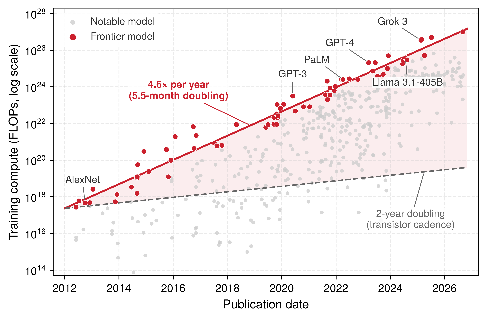
Содержание главы
Содержание
- 15 Экологически устойчивый ИИ
- 15.1 Энергетический потолок
- 15.2 Масштаб экологического воздействия
- 15.3 Экспоненциальный рост против физических ограничений
- 15.4 Измерение и моделирование энергии
- 15.5 Расчёт углеродного следа
- 15.6 Потребление энергии и ресурсов дата-центрами
- 15.7 Энергетический анализ: обучение против инференса
- 15.8 Жизненный цикл аппаратного обеспечения и электронные отходы
- 15.9 Стратегии смягчения
- 15.10 Политика, регулирование и путь вперёд
- 15.11 Заблуждения и ловушки
- 15.12 Итоги
15 Экологически устойчивый ИИ
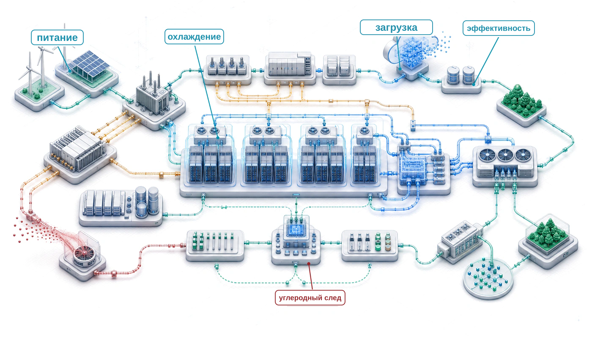
Назначение
Почему лимиты энергопотребления определяют, какие системы машинного обучения вообще могут существовать, а не только во сколько обходится их эксплуатация?
Электроэнергия — это и операционный расход, и физическое ограничение на то, что можно построить. У дата-центра есть бюджет мощности, определяемый электрической инфраструктурой и мощностью охлаждения; обучение, выходящее за его пределы, не может быть выполнено в задуманном масштабе независимо от финансового бюджета. Добавление ускорителей имеет смысл только если площадка способна подать на них электричество и отвести выделяемое ими тепло. Конструкция, эффективно работающая на одной машине, может оказаться неосуществимой при тиражировании на весь парк. Последствия выходят далеко за рамки одного отложенного обучения. Мощность, зарезервированная под обучение, может быть недоступна для обслуживания (инференса), а оборудование, содержащееся в резерве на случай отказов, потребляет ресурсы, даже не выполняя полезной работы. Перенос работы в другое место может снять одно ограничение, но при этом изменить выбросы, доступ к данным или способность соблюдать сроки. Повышение эффективности улучшает эти решения, однако меньшая энергия на запрос не гарантирует меньшего суммарного потребления при росте спроса. И даже чистый источник электроэнергии не отменяет экологическую стоимость производства и замены оборудования. Инженеры должны оценивать осуществимость конструкций на протяжении их срока службы и учитывать сообщества, разделяющие с ними запасы воды и электроэнергии. Поэтому устойчивость занимает место рядом с точностью, задержкой и надёжностью в проектировании систем: парк должен предоставлять полезный сервис в пределах ресурсных ограничений, которые его целевые показатели производительности не вправе отменять. В терминах C³ вычисления, коммуникация и координация расходуют общий физический бюджет, поэтому их совокупная ресурсная потребность определяет, может ли парк работать вообще.
Цели обучения
- Объяснить, почему лимиты электроэнергии и охлаждения площадки ограничивают то, какие МЛ-системы физически могут существовать
- Проанализировать, как рост вычислений, вызванный масштабированием, эффективность оборудования и возврат спроса формируют ресурсную потребность парка
- Рассчитать операционный, воплощённый и жизненный цикл углерода исходя из потребления энергии, power usage effectiveness (PUE), производства и углеродной интенсивности сети
- Проанализировать, как вычисления, перемещение данных по памяти, подача электроэнергии, охлаждение и доступность воды ограничивают устойчивую работу парка
- Сравнить рабочие нагрузки обучения, инференса, периферийные и федеративные по энергии, углероду и бюджетам батарей
- Спроектировать стратегии смягчения на уровнях алгоритмов, инфраструктуры, планирования, срока службы оборудования и операций с учётом углерода
- Оценить заявления об устойчивости против измерительного контракта, фиксирующего функциональную единицу, границы системы и углеродный сигнал
15.1 Энергетический потолок
Модель может быть защищена от злоумышленников и устойчива к сдвигу распределения и всё же потерпеть неудачу, если доступная электросеть не сможет запитать её ускорители или площадка не сможет их охладить. Устойчивость (Sustainability) начинается именно на этой границе, где точность, задержка и надёжность уже недостаточны, потому что система должна также укладываться в бюджеты мощности, охлаждения, воды, углерода и срока службы оборудования. За каждую операцию, которую выполняет модель, платят энергией, а плотность мощности задаёт потолок вычислительной ёмкости дата-центра.1
Когда инженер оптимизирует запрос к базе данных, экономя 100 ms, — это обычная настройка производительности. В масштабе парка та же экономия, повторяемая миллиарды раз в день, может снизить электрическую нагрузку, нагрузку на охлаждение и выбросы углерода, если она уменьшает измеренную энергию на завершённый запрос (Lacoste и др. 2019 г.).
Потолок по мощности делает устойчивость проектным ограничением, а не категорией отчётности. Система, выходящая за свой рабочий конверт, потерпела эксплуатационную неудачу в том же смысле, что и система, которая падает, поскольку её нельзя развернуть в задуманном масштабе. Та же инженерная дисциплина, что закладывает бюджеты памяти, пропускной способности и отказоустойчивости, должна закладывать и бюджеты джоулей, нагрузки на охлаждение, воплощённого углерода и циклов замены оборудования.
Физическая осуществимость определяет, какие парки вообще могут работать. Устойчивость затем сравнивает экологическую стоимость осуществимых конструкций на протяжении их срока службы. Отчёт начинается с энергии рабочей нагрузки на заявленной границе измерения и распространяется на углерод, воду и производство. Доминирующий член жизненного цикла затем выбирает между повышением эффективности, размещением и повторным использованием оборудования. Коммуникация и координация принадлежат этому отчёту наряду с вычислениями, потому что передачи, простои на синхронизацию и восстановление держат оборудование под напряжением даже тогда, когда полезные вычисления остановлены. Распределённый шаг стоит средней мощности парка, умноженной на время шага, которое предсказывает Закон Парка, так что каждая секунда открытой коммуникации или синхронизации — это ещё и блок джоулей. Уравнение 13 выписывает этот отчёт там, где глава обращается к распределённому обучению.
Современные приложения машинного обучения работают в промышленном масштабе: отдельные кампусы потребляют мощность на уровне тяжёлых промышленных предприятий. Обучение одной большой ИИ-модели может потребить столько же электричества, сколько примерно 120 американских домохозяйств за целый год. Законы масштабирования, которые мотивируют обучение в масштабе парка (принцип «Законы масштабирования ИИ»), назначают цену каждому дальнейшему снижению функции потерь в дополнительных вычислениях, данных и параметрах, поэтому потребность в вычислениях росла быстрее, чем эффективность оборудования (Sevilla и др. 2022 г.). Этот рост, вызванный масштабированием, — первый способ, которым спрос опережает эффективность, и устойчивый ИИ рассматривает его как первоклассную системную проблему, а не как внешнюю стоимость, которой можно заняться после развёртывания.
↩︎ Степенной закон масштабирования функции потерь по вычислениям, данным и параметрам, а также вытекающая из него вычислительно-оптимальная схема распределения установлены в Законы масштабирования ИИ.
Определение 15.1: Устойчивый ИИ
Устойчивый ИИ (Sustainable AI) — это практика системной инженерии, состоящая в измерении и оптимизации полного экологического затрат МЛ-систем (энергия, вода и воплощённый углерод на этапах обучения, инференса и производства оборудования) и во включении этих затрат в качестве явных ограничений в архитектурные решения наряду с целями производительности и точности (Wynsberghe 2021 г.; Lannelongue и др. 2021 г.; Henderson и др. 2020 г.).
- Значимость: обучение GPT-3 потребило примерно 1,287 MWh энергии (Patterson и др. 2021 г.), что эквивалентно примерно 120 американским домохозяйствам-годам электричества. Та же логика жизненного цикла применима и после обучения: предобученные модели часто можно адаптировать с куда меньшими затратами, чем обучать с нуля, а инференс больших объёмов со временем может доминировать в суммарной энергии. Поэтому устойчивый ИИ отслеживает и одноразовые обучающие прогоны, и повторяющиеся рабочие нагрузки обслуживания, а не считает обучение модели всем экологическим следом.
- Отличие: в отличие от корпоративной отчётности об устойчивости (которая агрегирует потребление энергии в годовые раскрытия CO2), инженерия устойчивого ИИ работает на уровне отдельных рабочих нагрузок. Она выбирает оборудование по FLOP/s на ватт, планирует обучение в периоды высокой доступности возобновляемой энергии и выбирает архитектуры моделей, минимизирующие FLOPs инференса, а не только максимизирующие точность.
- Типичная ошибка: распространённое заблуждение состоит в том, что переход на возобновляемую энергию решает проблему устойчивости. Для ML, интенсивного по оборудованию, воплощённый углерод (углерод, выброшенный при производстве чипов, серверов и систем охлаждения ещё до того, как они хоть раз запустят обучающее задание) может соперничать с операционным углеродом на чистых сетях или при низкой утилизации. Для питаемых от батарей потребительских устройств производство может составлять большую часть следа жизненного цикла (Gupta и др. 2022 г.). Поэтому долговечность оборудования и коэффициент утилизации столь же важны, как источник энергии.
Экологическое воздействие ИИ-систем охватывает полный жизненный цикл: от производства полупроводников и строительства дата-центров до обучения модели, развёртывания инференса и электронных отходов (Wynsberghe 2021 г.; Gupta и др. 2022 г.; Luccioni и др. 2023 г.). Рассмотрение этого полного жизненного цикла как инженерной задачи, а не упражнения в корпоративной ответственности, превращает устойчивость из расплывчатой цели в измеримое инженерное требование. Оптимизация этого следа требует сначала привязать интуицию к сырой физической энергии одного обучающего прогона большой модели.
Любой такой расчёт сначала должен зафиксировать, что включает измерение энергии. Это та учётная дисциплина, которую граница учёта энергии (Уравнение (5)) накладывает на сравнения парков, применённая здесь к одному прогону. Энергия ускорителей исключает host-процессоры, память хоста, сеть и хранилище. Энергия ИТ включает эти поддерживающие системы; энергия площадки дополнительно включает охлаждение и потери подачи электроэнергии на стороне площадки.
Power usage effectiveness (PUE) — это отношение энергии площадки к энергии ИТ за тот же интервал (Уравнение 2); Глава 15.4.1.3 даёт его формальное определение и то, что он не учитывает. Энергетическая продуктивность парка для прогона — это полезные FLOPs, завершённые на каждый джоуль, на заявленной границе. Деление полезных обучающих FLOPs на эту продуктивность даёт энергию на границе, на которой продуктивность была измерена. Если эта граница — ИТ-оборудование, умножение на PUE даёт энергию площадки; если она уже включает площадку, повторное применение PUE дважды учитывает накладные расходы. Открывающие расчёты используют один завершённый обучающий прогон как свою единицу работы и учитывают операционное электричество. Производство и другие члены жизненного цикла входят отдельно.
Контрольная точка 15.1: Энергия интеллекта
Модели с 175B параметрами требуется примерно
Цифра домохозяйств-годов — это ставка; она же — лишь электричество, входящее в одно здание для одного прогона. Оценка её экологической стоимости требует перевода этих мегаватт-часов в выбросы углерода по региональным электросетям, помещения потребления одиночного прогона в глобальный спрос дата-центров и учёта бремени воды, производства и утилизации оборудования, сопровождающих счёт за электричество.
15.2 Масштаб экологического воздействия
Обучающий прогон, измеряемый в мегаватт-часах, трудно себе представить, потому что у немногих инженеров есть интуиция о том, что мегаватт-час сетевого электричества стоит атмосфере. Во введении выбросы обучения GPT-3 упоминались как одна из цен, которые назначает масштабирование (Устойчивость и стоимость). Вывод за этой цифрой переводит энергию прогона в выбросы с помощью сетевого коэффициента, а затем — в знакомый якорь: CO2 трансатлантического перелёта, что превращает абстрактное число в число с физической ставкой.
Инженерный расчёт 15.1: Углеродная стоимость обучения
Задача: Команда обучает большую модель (размера GPT-3), рассматривая 1,287 MWh как электричество объекта для этого сравнения. Сколько CO2 выбрасывается при указанном коэффициенте сети и как это соотносится с трансатлантическим перелётом?
Расчёт:
- Энергия: Потребление энергии на обучение составляет 1,287 MWh = 1,287,000 kWh.
- Углеродная интенсивность (среднее по США):
0.429 kg/kWh. - Суммарные выбросы: Выбросы обучения составляют 1,287,000 kWh
0.429 kg/kWh 552,123 kg. - Сравнение:
- Один пассажир, Нью-Йорк — Лондон (туда и обратно):
1000 kg. - Отношение: 552,123 kg / 1000 kg = 552.1.
- Один пассажир, Нью-Йорк — Лондон (туда и обратно):
Системный вывод: При этих допущениях одно обучение выбрасывает столько же углерода, сколько сотни трансатлантических пассажирских перелётов туда и обратно. Расчёт фиксирует энергию объекта, поэтому изменение коэффициента сети меняет приписанные выбросы. Та же энергия в сети с преобладанием гидроэнергетики дала бы малую долю от этого количества — рычаг размещения, который количественно оценивает ноутбук 15.2.
Выбросы того же обучения зависят от того, откуда берётся его электричество. При фиксированной рабочей нагрузке коэффициент выбросов сети и накладные расходы объекта вместе определяют приписанный углерод, а расчёты размещения разделяют эти эффекты, начиная с одного лишь коэффициента сети.
Во введении этот географический фактор был показан как разброс примерно в 41× между сетями с преобладанием гидро- и угольной генерации. Ноутбук 15.2 выводит этот разброс, фиксируя энергию объекта и варьируя только коэффициент сети.
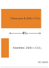
Выбросы углерода одной и той же задачи зависят от того, где она выполняется.
Инженерный расчёт 15.2: География углерода
Задача: Команда выбирает центр обработки данных для обучения на 10,000 MWh, сравнивая площадку A в Квебеке (гидроэнергетика, 20 g/kWh
Расчёт: Углерод = Энергия
- Выбросы площадки A: 10,000,000 kWh
20 g/kWh = 200,000,000 g = 200 t . - Выбросы площадки B: 10,000,000 kWh
820 g/kWh = 8,200,000,000 g = 8200 t . - Отношение: 8200 t / 200 t = 41× разницы.
Системный вывод: Пара Квебек — Польша даёт 41× разницы в приписанных выбросах при той же энергии объекта. Это сравнение изолирует коэффициент сети; оно не ранжирует размещение относительно неизмеренного алгоритмического изменения. Решение для парка должно сравнивать доступные площадки и расписания, используя как энергию рабочей нагрузки, так и выбросы, связанные с её обеспечением.
Это отношение выполняется только при равном электричестве объекта и этих годовых средних коэффициентах. Второй выигрыш — ожидание более чистых часов, временной рычаг из Глава 15.9.4, — поэтому нельзя просто умножить на него; совместное расписание должно оцениваться как одно решение.
Приведённый выше расчёт «GPT-3 и домохозяйство» фиксирует масштаб рабочей нагрузки. Следствие для масштаба парка ещё больше. Международное энергетическое агентство (МЭА) прогнозирует, что мировое потребление электричества центрами обработки данных достигнет около 945 TWh к 2030 году — чуть менее 3 percent мирового спроса на электричество, причём значительную часть роста обеспечивают серверы с ИИ-ускорителями (International Energy Agency 2025 г.).2 Исторические исследования фиксируют быстрый рост вычислений для обучения (Sevilla и др. 2022 г.), но множитель вычислений не является множителем энергии без соответствующего измерения эффективности.
Помимо прямого потребления энергии, ИИ-системы влияют на окружающую среду через производство оборудования и потребление ресурсов. Изготовление процессоров и поддерживающего оборудования требует материалов и промышленных процессов, чьё воздействие начинается до первого обучения.3 В конце жизненного цикла оборудования списанная техника пополняет поток электронных отходов, масштаб которого количественно оценивает Глава 15.8.5. Растущие требования рабочей нагрузки могут побудить к замене ускорителя до его физического выхода из строя; создаёт ли замена отходы, зависит от пути повторного использования и утилизации оборудования.4
Эти экологические проблемы — часть энергетического потолка, а не дополнение к нему, поскольку сообщества, на территории которых размещаются земля, вода, ёмкость сети и потоки отходов, также несут часть стоимости системы. Эти расчёты масштаба превращают устойчивость в задачу распределения. Прогресс ИИ создаёт выгоды в одной части системы, распределяя затраты на электричество, воду, землю и утилизацию в другую, поэтому экологическая ответственность должна рассматриваться как часть проектирования систем, а не как отчётность после развёртывания (Глава 15.10.4 рассматривает, как выбор площадки распределяет эти бремена между сообществами). Однако статичный снимок сегодняшнего следа всё же занижает инженерную задачу, потому что вычислительный спрос, управляющий этими бюджетами электричества, воды и оборудования, растёт с ускорением, значительно превосходящим возможности эффективности оборудования.
15.3 Экспоненциальный рост против физических ограничений
Между 2012 и 2023 вычисления для обучения моделей переднего края выросли примерно с
Исторически масштабирование полупроводников объединяло рост плотности транзисторов со снижением энергии переключения. Закон Мура описывал рост числа транзисторов, а масштабирование Деннарда объясняло, как совместное уменьшение размеров и напряжения позволяет сохранять плотность мощности. Само по себе увеличение числа транзисторов не гарантировало лучшей энергоэффективности. Когда масштабирование напряжения натолкнулось на токи утечки и другие ограничения приборов, более плотный чип уже не мог рассчитывать на пропорциональную экономию мощности.5 Дальнейший рост эффективности требует улучшений на уровне приборов, архитектуры и работы, выполняемой приложением.
При фиксированной границе учёта энергия зависит от полного объёма работы, делённого на реализованную работу на джоуль. Улучшения эффективности исполнения снижают энергию ИТ-оборудования, а PUE добавляет к этой энергии накладные расходы инфраструктуры. Алгоритмические изменения также могут снизить объём работы, необходимый для достижения целевого качества. Эти эффекты нужно измерять совместно, а не выводить из исторической кривой вычислений.
Эффективность отдельной задачи и суммарный спрос могут двигаться в противоположных направлениях. Энергия парка равна энергии одной завершённой задачи, умноженной на число завершённых задач, поэтому прогноз для парка должен фиксировать оба сомножителя, включая состав рабочей нагрузки. Удешевление задач может увеличивать их количество быстрее, чем снижает энергию каждой из них. Если энергия на задачу упадёт в десять раз, а объём задач вырастет в сто раз, энергия парка вырастет в десять раз. Этот эффект возврата — второй способ, которым спрос может опережать эффективность, отличный от роста, обусловленного масштабированием и описанного в начале главы. Рост из-за масштабирования касается того, сколько вычислений требует каждая граничная модель по мере того, как законы масштабирования поднимают качество; эффект возврата касается того, сколько задач выполняется, когда каждая задача становится дешевле. Стратегии смягчения из Глава 15.9 рассматривают эффект возврата под его историческим названием — парадокс Джевонса.
15.3.1 Лимиты мощности и энергетическая стена
Короткий всплеск обучения может выбить выключатели на подстанции или перегрузить чиллеры, даже если его кумулятивный бюджет в мегаватт-часах скромен, тогда как месячная задача на меньшем кластере может израсходовать куда больше суммарной энергии, оставаясь безопасно внутри своего лимита мощности. Энергетический счёт делит работу на реализованную работу на джоуль и добавляет накладные расходы инфраструктуры на этой границе. Физическая инфраструктура, однако, накладывает отдельное ограничение на мгновенную мощность: подключение к сети, электрическое распределение и система охлаждения ограничивают, сколько активного парка может безопасно работать одновременно.
Два этих предела подчиняются разной арифметике (Рисунок 2). Предел по мощности мгновенен. Инфраструктура не может потреблять больше, чем её питание от сети (
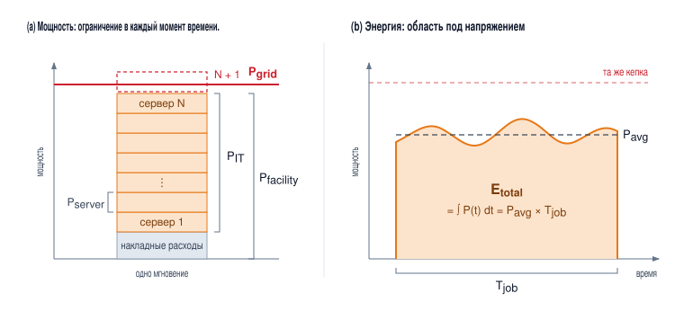
Поэтому энергетическая стена — это задача о выполнимости конкретной рабочей нагрузки, а не универсальный множитель. Инженеры должны уложить требуемую работу, срок и целевое качество в доступную мощность и охлаждение, а затем вычислить энергию за фактическое время исполнения. Более эффективное аппаратное обеспечение помогает лишь в той мере, в какой рабочая нагрузка использует его эффективность, а возникший спрос остаётся в этих ограничениях. На граничном масштабе связующий вопрос — вообще может ли на кластер быть доставлено достаточно мощности.
Опорный пример 15.1: Архетип A (GPT-4/Llama-3): энергетический барьер
Обучение в масштабе Архетипа A (GPT-4/Llama-3) обнажает проблему мощности наиболее остро. На граничном масштабе кластер на 25,000 GPU — это примерно в 24 раз больше, чем используемый на протяжении всей книги эталонный кластер на 1,024 GPU. При 700 W на чип он требует 17.5 MW мощности ускорителей ещё до накладных расходов на серверы, сеть и охлаждение. Ограничение здесь физическое, а не финансовое: это проблема ёмкости энергосети. Организациям, эксплуатирующим рабочие нагрузки Архетипа A, могут понадобиться выделенная энергетическая инфраструктура или регионы с избытком возобновляемой энергии. Планирование с учётом углерода (перенос несрочных работ на более «чистые» часы энергосети) и географическая оптимизация (размещение нагрузок там, где ограничения по мощности, охлаждению и углероду соответствуют задаче) становятся решениями уровня парка, столь же значимыми, как планирование ёмкости.
Само по себе энергопотребление ускорителей — ещё до накладных расходов на серверы, сеть и охлаждение — делает ёмкость энергосети условием развёртывания. И даже если сеть может выдать эту устойчивую среднюю мощность, синхронизированное исполнение обучающей задачи раскачивает нагрузку по всему кластеру вверх и вниз в унисон.
15.3.2 Динамика энергосети дата-центра
Когда тысячи ускорителей одновременно входят в барьер коллективной коммуникации и затем вместе возвращаются к матричному умножению, их энергопотребление ступенчато падает и растёт синхронно по всему машинному залу. В отличие от обычных облачных нагрузок, чьи независимые запросы сглаживаются между стойками, синхронизированные фазы обучения коррелируют колебания мощности и выталкивают эти переходные процессы к интерфейсу с электросетью.
Практический случай 15.1: Когда энергосеть стала узким местом (2022)
Контекст: В июле 2022 года правительство Ирландии опубликовало Government Statement on the Role of Data Centres in Ireland’s Enterprise Strategy, где рассматривались ограничения по электроэнергии для дальнейшего развития в стране, где дата-центры стали существенным источником спроса (Government of Ireland 2022 г.; International Energy Agency 2024 г.).
Механизм: Рост спроса опередил расширение сети. В заявлении сообщалось, что Дублину необходима существенная модернизация передач, прежде чем он сможет принять новые запросы дата-центров на электроэнергию.
Влияние: Ёмкость подключения к сети стала определяющим входом для предлагаемых объектов в Дублине. Новые запросы вынуждены были ждать модернизации передач или искать другие регионы, тогда как контрактные проекты и существующие площадки продолжали работать.
Решение: Заявление отдало приоритет модернизации сети, подходящим региональным площадкам и развитию, согласованному с дополнительной возобновляемой энергией. Это были предлагаемые меры против ограничения, а не свидетельство того, что операторы уже устранили его.
Системный урок: Устойчивый ИИ ограничен присоединением к сети, географией и достаточностью энергосистемы. Эффективные ускорители помогают, но парк не может масштабироваться быстрее, чем питающая его сеть, — связующее ограничение смещается с чипа на подстанцию.
Фазы обучения могут быстро менять спрос ускорителей, но скачок нагрузки на стороне устройства не доходит до подключения к энергоснабжающей организации неизменным. Его амплитуда зависит от мощности на устройство, числа координированных исполнителей и перекрытия вычислений с коммуникацией. Локальные стабилизаторы, развязывающие конденсаторы, преобразователи мощности и системы контроля источников бесперебойного питания (UPS) формируют реакцию выше по цепочке. Энергетическая буферизация подводит или поглощает энергию при изменении нагрузки. Буфер разряжается, когда кластер переходит к вычислениям, и заряжается, когда нагрузка возвращается к коммуникации, поэтому подключение к сети видит меньший размах, чем потребляют ускорители. Его расположение, ёмкость и скорость отклика должны соответствовать защищаемой электрической границе.
↩︎ Фильтрация переходных процессов стабилизаторами напряжения, развязывающими конденсаторами и системами UPS описана в Сети подвода энергии и переходная динамика.
15.3.3 Концентрация энергии при обучении в большом масштабе
Ограничения энергосети и размещения становятся жёсткими потому, что крупные обучающие кампании концентрируют энергоспрос в длинных синхронных запусках. Якорь GPT-3 установил общий масштаб; новым системным вопросом является его временная концентрация и дополнительная энергия коммуникации при распределённом обучении.6
Концентрация во времени — именно то, что отличает обучающую кампанию от той же энергии, размазанной на год обычной нагрузки. Граничный запуск держит энергопотребление ускорителей 17.5 MW кластера Архетипа A — ещё до серверов, сети и охлаждения — на протяжении недель или месяцев, которые длится запуск. Его синхронизированные фазы вычислений и коммуникации раскачивают это потребление по всему кластеру вместе (Глава 15.3.2). Поэтому инфраструктура должна резервироваться под устойчивый пик, а не под годовое среднее, и сеть видит одну крупную коррелированную нагрузку, а не множество мелких независимых. Крупные генеративные модели усугубляют проблему, когда последовательные поколения увеличивают число параметров, токеновые бюджеты или и то и другое.
В течение десятилетия после 2016 года эти сменявшие друг друга поколения оттеснили энергию предобучения одиночного запуска за пределы суточной выработки электростанции коммунального масштаба (Рисунок 3). По 122 одиночным запускам, для которых задокументированы и оборудование кластера, и длительность обучения, Epoch AI моделирует пиковую мощность площадки из количества ускорителей, теплового лимита чипа (TDP), надбавки 1.82× на серверный шасси (отношения пиковой мощности сервера к TDP ускорителя) и PUE площадки, а затем интегрирует это потребление по астрономическому времени исполнения (Epoch AI 2026 г.; Cottier и др. 2024 г.). Среди 23 пограничных запусков предобучения в этом наборе верхняя граница энергии росла примерно на 3.0× в год — медленнее, чем тренд вычислений 4.6×, поскольку прогресс оборудования повышал моделируемые FLOPs на джоуль примерно на 1.5× в год. Даже с учётом этого роста эффективности пограничные запуски пересекли 24,000 MWh — полные сутки непрерывной выработки электростанции мощностью 1 GW при номинальной загрузке — и достигли примерно 240,000 MWh для Grok 3, прежде чем коммерческое неразглашение стало скрывать данные о длительности в более поздних релизах.
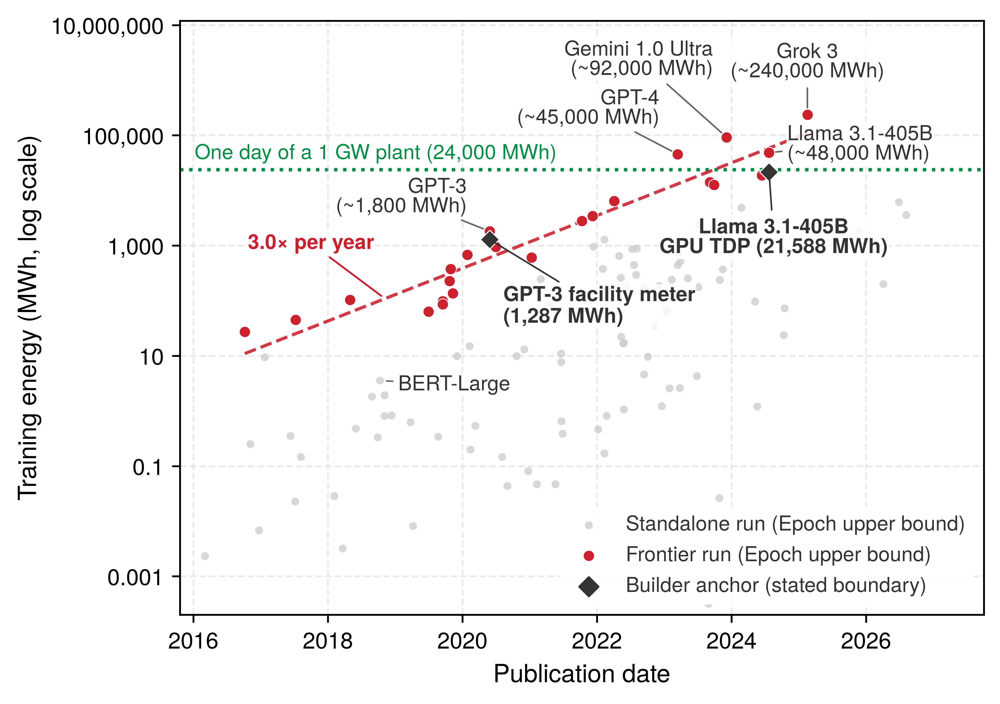
Сопоставление якорей, сообщённых разработчиками, с этими смоделированными верхними границами показывает, почему утверждение об энергии неполно без своей границы измерения. Для GPT-3 Patterson и др. (2021 г.) сообщают 1,287 MWh по счётчику площадки — исходя из усреднённого по GPU потребления серверов OpenAI 330 W и PUE 1.10, — тогда как модель пиковой мощности Epoch AI даёт примерно 1,800 MWh (на 1.4× выше), поскольку её надбавка 1.82× на серверный шасси превышает измеренное потребление хостов и сети. На кластерах TPU, где коммуникации и ввод-вывод также удерживают устойчивое потребление чипов значительно ниже TDP, оценки по пиковой мощности превышают измеренную энергию в два-три раза (Patterson и др. 2021 г.; Cottier и др. 2024 г.).
Расширение границы измерения ещё больше увеличивает разрыв для Llama 3.1-405B, чья карточка модели (Meta AI 2024 г.) сообщает 30.84M GPU-часов H100 при TDP чипа 700 W (Dubey и др. 2024 г.); перемножение двух величин даёт 21,588 MWh на границе TDP ускорителя — до хостовых CPU, сетевого fabric и охлаждения, — или примерно 24,000 MWh с учётом PUE 1.10. Полная верхняя граница по площадке от Epoch AI достигает примерно 48,000 MWh, то есть 2.2× произведения TDP ускорителей, и это отношение является произведением двух множителей. Множитель 1.97× на серверы и PUE поднимает произведение TDP ускорителей для заявленных Meta GPU-часов до примерно 43,000 MWh, а на 1.14× более длинное выведенное окно астрономического времени (35.1M GPU-часов) поднимает эту цифру до границы Epoch. Даже на более узкой границе «ускорители плюс PUE» один пограничный запуск обучения теперь концентрирует примерно гигаватт-сутки электроэнергии при номинальной мощности в несколько месяцев непрерывной работы.
Законы масштабирования, введённые в Законы масштабирования ИИ, объясняют, почему эта концентрация продолжает расти. В изученных Kaplan и др. (2020 г.) диапазонах тестовая потеря падает вдоль гладких степенных законов по вычислениям, токенам датасета и параметрам (Рисунок 4), и для энергетического учёта интерес представляет именно малый показатель степени при вычислениях. Он означает, что каждое фиксированное дробное снижение потери требует мультипликативного увеличения ресурса. Поскольку требуемые вычисления масштабируются как отношение старой потери к новой, возведённое в степень 20, снижение потери, ограниченной вычислениями, на 10 percent требует 8.2× вычислений, а следующие 10 percent снова стоят тот же множитель. Убывающая отдача по принципу «Законы масштабирования ИИ» приходит на площадку как мультипликативный рост энергии обучения — если только реализуемые FLOPs на джоуль не улучшаются теми же темпами. В этих изученных режимах рост качества можно было «купить» железом и данными, поэтому спрос на вычисления обогнал рост эффективности оборудования. Помимо обучения, высоконагруженные развёрнутые системы — крупномасштабные рекомендательные системы и генеративные сервисы — требуют непрерывного инференса в масштабе и потребляют энергию даже после завершения обучения. Таким образом, совокупный энергетический груз зависит и от однократного запуска обучения, и от устойчивого объёма запросов, следующего за развёртыванием.
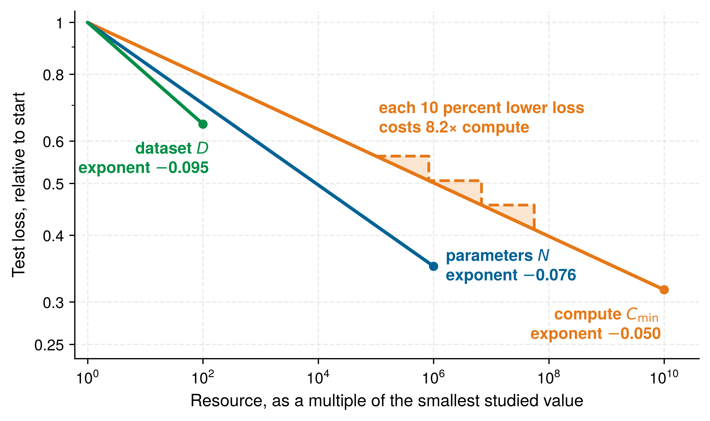
Развёртывание кластеров, необходимых для такой концентрации, добавляет выбросы ещё до того, как оператор выполнит первый шаг обучения, поэтому расширение парка увеличивает производственный след, даже если каждый новый ускоритель тратит меньше энергии на полезную задачу. Производство оператор фиксирует в категории Scope 3 — выбросы цепочки поставок, а не собственная генерация или покупная электроэнергия (Глава 15.5.5 количественно оценивает производственный член, а Глава 15.5.2 относит его к отчётным категориям). Чтобы ограничить любой из этих эксплуатационных или воплощённых затрат, требуется разложить энергопотребление центра обработки данных на покомпонентные модели и прямую телеметрию, причём каждая оценка должна декларировать, что именно она учитывает, — только тогда две оценки можно сравнивать.
15.4 Измерение и моделирование энергии
Кластер, потребляющий пять мегаватт во время обучения большой языковой модели, направляет лишь часть этой мощности на матричные умножения; остальное расходуют хост-процессоры, память, сеть, преобразование энергии и охлаждение. Инженер не может оптимизировать эти потери, опираясь на один ежемесячный счёт от энергокомпании.
Сети энергоснабжения и системы охлаждения задают жёсткие физические ограничения на вычислительную ёмкость центра обработки данных. Систематическое измерение превращает эти ограничения в числа, с которыми инженер может работать, — при условии, что ещё до применения модели энергопотребления или измерительного прибора зафиксировано, что и на какой фазе жизненного цикла он измеряет. Как инженерии производительности нужно профилирование перед оптимизацией, так инженерии устойчивого ИИ нужно измерение до смягчения последствий.
↩︎ Путь подачи энергии, тепловыделение (TDP) и лимиты охлаждения ускорителей определены в Энергетические и тепловые лимиты.
Процедура принятия решений одинакова на протяжении всей главы: измерить доминирующий член жизненного цикла, выявить физическое узкое место за ним, выбрать вмешательство, меняющее этот член, и проверить, не стирает ли эффект отдачи полученный выигрыш. Операционная электроэнергия, воплощённый углерод, накладные расходы на охлаждение, потребление воды и электронный мусор требуют разных рычагов. Перенос задачи меняет её эксплуатационные условия, но не отменяет выбросы, уже понесённые при производстве. Дольше эксплуатируемое оборудование снижает будущие закупочные потребности, но и продлевает счёт его эксплуатационной энергии. Поэтому устойчивый дизайн прослеживает каждое вмешательство по тем членам, которые оно меняет, прежде чем сравнивать полный результат.
Утверждение об устойчивости сопоставимо с другими только тогда, когда оно удовлетворяет договору об измерении устойчивости, который расширяет воспроизводимый договор об измерении из Договор об измерениях. Тот договор уже фиксирует рабочую нагрузку и её контроль качества, состояние системы, временну́ю границу и статистический отчёт с окном и разбросом. Утверждение об устойчивости добавляет пять полей, фиксирующих, что покрывает энергетический показатель и как он превращается в углерод. Функциональная единица называет оплачиваемую работу — например, один завершённый запуск обучения или 1 000 обслуженных запросов при заданном качестве выходных данных. Граница системы указывает, какие члены — вычисления, память, сеть, инфраструктура, производство, конец срока службы — входят в этот счёт (International Organization for Standardization 2006 г.a, 2006 г.b). Поскольку несколько рабочих нагрузок и поколений оборудования делят одну инфраструктуру, далее правило атрибуции должно распределять общую инфраструктуру и воплощённые выбросы. Заявленный средний или маржинальный углеродный сигнал переводит полученную энергию в выбросы. Время и место эксплуатации определяют, какие часы и какая энергосистема описываются этим сигналом. Статистический отчёт, унаследованный от базового договора, должен затем также указывать, насколько чувствителен вывод к этим допущениям. Результат, в котором отсутствует любое из этих полей, может диагностировать один компонент, но не способен поддержать сквозное сравнение. У больших моделей, выпущенных после GPT-3, часто нет сопоставимых энергетических раскрытий, поэтому заполнение этих полей требует телеметрии рабочей нагрузки, а не только опубликованной документации по модели.
Этот договор разделяет два вопроса, которые иначе смешиваются. Атрибутивный учёт распределяет инвентаризацию наблюдаемых выбросов между рабочими нагрузками для отчётности, обычно используя среднюю углеродную интенсивность энергосистемы и приведённое выше правило атрибуции для разделения общей инфраструктуры. Консеквенциальный учёт оценивает, как решение меняет выбросы, — например, моделируя генератор, на который влияет перенос планировщиком одного мегаватт-часа спроса. Этот генератор — станция на краю диспетчерского порядка энергосистемы, чья выработка растёт или падает при изменении спроса. Маржинальный коэффициент выбросов отражает именно эту станцию, которая может сжигать ископаемое топливо даже в энергосистеме со чистым средним балансом. Атрибутивный учёт отвечает, какая доля существующего следа приходится на рабочую нагрузку; консеквенциальный учёт — изменит ли изменение рабочей нагрузки сам след (Present и др. 2024 г.). Поэтому планирование с учётом углерода нуждается в сигнале, пригодном для консеквенциального анализа, даже если ретроспективная инвентаризация организации использует атрибутивные средние. Доступные маржинальные коэффициенты могут быть историческими оценками, прогнозами или вовсе недоступны в требуемый момент и в требуемом месте работы нагрузки. Поэтому договор должен фиксировать источник, разрешение и неопределённость, а не считать «маржинальный» величиной, наблюдаемой повсеместно по определению.
15.4.1 Основы моделирования энергопотребления
Снижение численной точности или прореживание половины весов модели не уменьшает автоматически счёт за электричество центра обработки данных вдвое: статическая утечка, трафик памяти и охлаждение инфраструктуры берут каждый свою долю до того, как мощность дойдёт до арифметических блоков. Чтобы проследить, куда уходит ватт, нужна модель, поднимающаяся на три уровня. Уравнение мощности CMOS на уровне кристалла объясняет, почему важны напряжение, точность и активность переключений. Механизмы физической оптимизации показывают, как алгоритмы меняют эти переменные. Метрики уровня инфраструктуры выявляют, переживают ли экономию на уровне кристалла накладные расходы на охлаждение и энергоснабжение.
Уравнение мощности CMOS
Всякая цифровая схема потребляет мощность через два фундаментальных механизма. Динамическая мощность возникает из переключения транзисторов между состояниями, а статическая мощность — из тока утечки, который течёт даже тогда, когда транзисторы номинально выключены. Уравнение 1 формализует полное энергопотребление:
В динамической составляющей
Статическая составляющая мощности
Квадратичная зависимость от напряжения означает, что снижение напряжения с 1 V до 0.8 V уменьшает динамическую мощность на 36 percent, если активность, ёмкость и частота остаются неизменными. Схема всё ещё должна завершать свои переходы внутри каждого тактового периода. Поэтому более низкое напряжение может требовать более низкой частоты, что дополнительно снижает динамическую мощность, но может удлинять исполнение. Энергетический выигрыш зависит и от получившегося времени выполнения, и от статической мощности, потреблённой за это время.
Физические механизмы энергетической оптимизации
Уравнение мощности объясняет, почему конкретные техники оптимизации способны повысить эффективность. Квантизация снижает численную точность, что может уменьшить арифметические блоки и сократить число байтов, перемещаемых через иерархию памяти. Реализованное изменение энергопотребления зависит от используемых ядер, накладных расходов на упаковку и преобразование, трафика памяти, утилизации и исходного узкого места (Gholami и др. 2022 г.). Низкая точность сама по себе не позволяет снизить напряжение питания: напряжение и частота остаются ограничены физической реализацией, техпроцессом и временны́ми запасами. Поэтому квантизация меняет члены операций и перемещения данных, но лишь измерение устанавливает сквозное снижение.
Прореживание удаляет веса из нейронных сетей, но не удаляет физические транзисторы из существующего ускорителя. Оно экономит динамическую энергию, когда итоговое исполнение пропускает арифметику или перемещение данных. Структурное прореживание может отображаться на меньшие плотные ядра; для неструктурного нужна реализация, использующая разреженный шаблон, не тратя сэкономленное на индексацию и нерегулярный доступ к памяти. Уравнение мощности объясняет выигрыш через сниженную активность переключений и время работы под нагрузкой, а не через изменение ёмкости изготовленной схемы
Специализированные ускорители могут повышать полезную работу на джоуль, снижая накладные расходы на управление инструкциями, переиспользуя данные локально и отображая операции на подходящие тракты данных. Поддержание продуктивности арифметических блоков может амортизировать статическую и вспомогательную мощность, но повышение активности переключений без роста полезной продукции лишь повышает энергопотребление.
Метрики энергопотребления уровня инфраструктуры
Соотношение PUE присутствует в каждой оценке энергопотребления инфраструктуры с момента ввода энергетической границы в начале главы. Модель уровня кристалла теперь объясняет, что происходит внутри члена IT, поэтому самому соотношению нужны его точное определение и его слепые зоны. Уравнение 2 задаёт соотношение на границе инфраструктуры этой главы:
Определение 15.2: Эффективность использования энергии (PUE)
Power usage effectiveness (PUE) — это коэффициент эффективности центра обработки данных, который операторы МЛ-систем используют для сравнения полного потребления мощности инфраструктурой с мощностью, потребляемой именно ИТ-оборудованием
- Значимость: он измеряет накладные расходы инфраструктуры центра обработки данных. PUE 1,0 — теоретический идеал; PUE 1,10 означает, что на каждые 100 ватт, потребляемых ИТ-оборудованием, требуется дополнительно 10 ватт на не-ИТ накладные расходы инфраструктуры, включая охлаждение и распределение энергии на стороне инфраструктуры.
- Отличие: в отличие от вычислительной эффективности (которая фокусируется на FLOP/s на ватт), PUE фокусируется на эффективности инфраструктуры: он измеряет не-ИТ накладные расходы относительно потребления ИТ. Простаивающее оборудование и потери мощности внутри границы измерения ИТ остаются в знаменателе; PUE не измеряет полезные вычисления.
- Частая ошибка: распространено заблуждение, что низкий PUE означает «зелёный» центр обработки данных. PUE измеряет только эффективность накладных расходов, а не углеродную интенсивность источника энергии; дата-центр на угле может иметь лучший PUE, чем работающий на солнечной энергии, при гораздо большем воздействии на окружающую среду.
PUE измеряет накладные расходы объекта поверх ИТ-энергии.
Инженерный расчёт 15.3: PUE: цена охлаждения
Задача: Команда эксплуатирует кластер 2 MW. Если объект удастся оптимизировать с устаревшего воздушного охлаждения с PUE (1.58) до современного уровня (1.10), сколько энергии и денег это сэкономит за год?
Математика: Сэкономленная энергия — это разница в накладных расходах инфраструктуры
- Снижение накладных расходов: 1.58 - 1.10 = 0.48.
- Годовая экономия энергии: 2 MW
0.48 8760 h/year 8,409.6 MWh. - Финансовая экономия: 8,409.6 MWh
$70/MWh $588,672. Эта экономия только на уровне объекта не меняет модель и масштабируется вместе с сокращаемыми не-ИТ накладными расходами, поэтому оптимизация охлаждения наиболее значима для неэффективных объектов.
PUE, равный 1.0, означал бы отсутствие измеренных не-ИТ накладных расходов, но не то, что вся электроэнергия превращается в полезные вычисления. Простаивающие серверы и незагруженные ускорители остаются внутри ИТ-знаменателя. По данным опросов, центры обработки данных в 2022 году сообщали о среднем PUE около 1.55, то есть примерно 55 percent энергии сверх ИТ-потребления уходило на инфраструктуру, а старые объекты с воздушным охлаждением показывали ещё более высокие значения (Uptime Institute 2022 г.). Ведущие гипермасштабные объекты достигают PUE от 1.1 до 1.2 благодаря продвинутым техникам охлаждения, включая свободное воздушное охлаждение в холодном климате, жидкостное охлаждение плотных GPU-кластеров и оптимизированное распределение электроэнергии.
Уравнение 3 формализует эффективность использования воды (water usage effectiveness, WUE), описывающую потребление воды, которое требуется испарительному охлаждению и другим процессам:
Единицы измерения — литры на киловатт-час; типичные значения лежат в диапазоне от 0.5 до 2.0 L/kWh в зависимости от климата и технологии охлаждения. Центр обработки данных с WUE 1.8 L/kWh, обучающий модель, требующую 10,000 MWh ИТ-энергии, израсходовал бы 18 миллионов литров воды. Это эквивалентно примерно 40–47 американским домохозяйствам-годам потребления воды при базовом уровне домохозяйства 380,000–450,000 L/год. Оценку энергии на уровне объекта необходимо сначала пересчитать к ИТ-границе и только затем применять WUE.
У обслуживания тоже есть водный счёт, и вычисляется он так же. Google сообщает о WUE парка уровня 1.15 L/kWh для центров обработки данных, обслуживающих его ассистента Gemini (Elsworth и др. 2025 г.). В том же исследовании была измерена энергия медианного текстового запроса к Gemini по всему стеку обслуживания (Глава 15.7.3 рассматривает это измерение). Применённая к ИТ-энергии этого запроса — она исключает накладные расходы объекта — WUE даёт те 0.26 мл воды на запрос, которые приводит исследование. Вода одного запроса пренебрежимо мала. Сервис, отвечающий на миллиарды запросов в день, превращает ту же арифметику в потребность масштаба целого объекта — именно поэтому выбор способа охлаждения и водораздела, на который он опирается, относится к проектированию обслуживания, а не только к бюджету обучения. То, как объект эксплуатирует уже установленную охлаждающую установку, также меняет эти метрики уровня объекта.
Кейс-стади DeepMind по энергоэффективности
Системы охлаждения Google иллюстрируют, как настройки эксплуатации влияют на PUE (2023 г.). Нагрузка серверов, погода и взаимодействия между насосами и чиллерами усложняют фиксированные эвристики эксплуатации (Buyya и др. 2010 г.). Развивая более ранние работы по предсказанию PUE (Gao 2014 г.), DeepMind обучил нейронные сети на телеметрии объекта предсказывать будущий PUE и рекомендовать настройки. Дополнительные модели предсказывали температуру и давление, чтобы проверять эти рекомендации на соответствие эксплуатационным ограничениям.
В сообщённом испытании на живом объекте система снизила потребление энергии на охлаждение на 40 процентов, а общие накладные расходы PUE — на 15 процентов (Barroso и др. 2019 г.; Evans и Gao 2016 г.). Согласно Уравнение 2, снижение накладных расходов на 15 процентов убирает 15 процентов не-ИТ-члена (PUE минус 1), а не 15 процентов общей энергии объекта. При равной ИТ-энергии то же относительное снижение накладных расходов экономит больше электроэнергии там, где исходные накладные расходы больше. Сообщённый результат устанавливает выгоду для протестированного объекта, а не одинаковую экономию на каждом объекте.
Экономия возникла из-за изменения режима работы уже существовавших насосов, чиллеров и градирен, а не из-за установки нового охлаждающего оборудования, что делает управляющее ПО рычагом, доступным объекту, который невозможно перестроить. Переносимый урок — оценивать средства управления эксплуатацией наряду с заменой оборудования. Телеметрия поддерживает предсказание, эксплуатационные ограничения накладывают условия на рекомендацию, а измеренная энергия показывает, экономит ли изменение электричество.
15.4.2 Систематические энергетические метрики
Сокращение числа FLOP модели вдвое почти не экономит энергию, когда рабочая нагрузка тратит почти все свои джоули на перемещение весов между внешней DRAM и процессором. Поэтому для сравнения аппаратных архитектур и алгоритмических изменений требуется систематическая лестница метрик, ведущая от энергии на операцию к энергии на байт, а затем к соотношению «крыши» между арифметической интенсивностью и перемещением данных.
Энергия на операцию
Базовая метрика энергетической эффективности вычислений — энергия, потребляемая на операцию, обычно измеряемая в пикоджоулях. Указывайте тип операции и точность: умножение с накоплением (MAC) с плавающей запятой по соглашению считается за два FLOP, тогда как целочисленный MAC — за две целочисленные арифметические операции.
Аппаратная архитектура определяет, какие накладные расходы можно сократить. Каждый класс архитектуры в энергетических моделях этой главы несёт эффективный энергетический коэффициент, сопровождаемый измерением, необходимым для его проверки (Таблица 1). Коэффициенты охватывают три порядка величины: от 100 pJ/FLOP для универсального ядра, где выборка инструкций и управление доминируют в каждой операции, до 0.1 pJ/FLOP для тракта данных с фиксированной функцией. Они включают в каждую операцию доставку локальных операндов и управление — именно поэтому коэффициент GPU 10 pJ/FLOP заметно выше примерно 3.7 пДж «голого» умножения FP32 при 45 нм (Horowitz 2014 г.). Это входы моделирования с точностью до порядка величины, а не рейтинг продуктов.
| Архитектура | Эффективная энергия (модель) | Потенциальное энергетическое преимущество | Сравнение должно включать |
|---|---|---|---|
| Универсальный CPU | 100 pJ/FLOP | Гибкое исполнение для разнообразных нагрузок | Накладные расходы на инструкции и достигнутая утилизация |
| GPU | 10 pJ/FLOP | Параллельная арифметика и повторное использование данных | Точность, заполненность и трафик памяти |
| Систолический ускоритель | 1 pJ/FLOP | Локальное повторное использование на регулярном тракте данных | Поддерживаемые формы, точность и перемещение данных |
| Периферийный ускоритель или ASIC с фиксированной функцией | 0.1 pJ/FLOP | Специализированное низкопотребляющее исполнение | Хост, память, периферия и рабочий цикл |
| Аналоговые или внутрипамятные вычисления | Не моделируется | Сокращение перемещений для поддерживаемых операций | Преобразование, периферийные схемы и достигнутое качество |
Точность влияет на энергию на операцию через зависящие от реализации арифметику и перемещение данных. Более узкие форматы могут уменьшить площадь схем, переключаемую ёмкость и трафик памяти, но одна лишь разрядность не определяет «стеновую» энергию. Контракт измерения требует согласованной рабочей нагрузки и целевого качества при одинаковых границах памяти и поддерживающей системы.
Энергия на байт
В рабочих нагрузках ИИ с низкой арифметической интенсивностью перемещение операндов через границы хранилищ и соединений потребляет гораздо больше энергии, чем сами арифметические блоки. Иллюстративная модель стоимости, охватывающая регистры, кэши, основную память, твердотельные накопители и сеть, делает эту иерархию наглядной; её коэффициенты передают относительную стоимость перемещения через границы, а не фиксированные измерения каждой платформы.
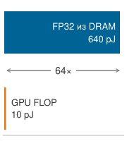
Извлечение операнда FP32 из DRAM стоит 64× против FLOP, который его использует.
При смоделированных коэффициентах из Таблица 2 перемещение данных из DRAM может доминировать над арифметикой, которую оно питает. Строки таблицы прослеживают путь от регистров через кэш L1 и кэш L2 к DRAM, NVMe (Non-Volatile Memory Express) и сетевым передачам. При коэффициенте GPU 10 pJ/FLOP из Таблица 1 извлечение одного операнда FP32 из DRAM (4 байта
Эти коэффициенты согласуются со стоимостью перемещения, рассчитанной на бит в Энергетическая стоимость перемещения данных, после приведения единиц. Приведённый в том разделе показатель внекорпусной DRAM около 20 пДж на бит — это 160 pJ/byte из данной таблицы, поэтому один 16-битный операнд, извлечённый из DRAM, стоит 320 pJ, тогда как в этом примере извлекается FP32-операнд размером 4 байта. Указанная там «чистая» операция умножения-сложения FP16 около 1.5 pJ лежит ниже эффективного коэффициента GPU из этого раздела, потому что этот коэффициент включает в каждую операцию управление и доставку локальных операндов. Передачи через сетевой fabric оценены побитно в Физика перемещения данных, где показатель для пути через fabric около 35 pJ/bit (280 pJ/byte) учитывает только сериализаторы, трансиверы и коммутаторы между конечными точками. Строка сети здесь — коэффициент всей системы, который также учитывает память конечных точек, программное обеспечение хоста и мощность простаивающей сети, поэтому показатели различаются более чем на порядок.
| Уровень памяти | Стоимость энергии (пДж/байт) |
|---|---|
| Регистр | 0.1 pJ/byte |
| Кэш L1 | 1 pJ/byte |
| Кэш L2 | 5 pJ/byte |
| DRAM | 160 pJ/byte |
| NVMe SSD | 1000 pJ/byte |
| Сеть | > 10000 pJ/byte |
Полученные рычаги проектирования нацелены как на перемещение данных, так и на арифметику. Разделяемая SRAM на кристалле и регистры поддерживают повторное использование операндов, а систолические массивы передают операнды и частичные суммы между соседними вычислительными элементами вместо многократного обращения к внешней памяти. Сжатие и разреженные представления могут сократить объём передаваемых данных, когда экономия полезной нагрузки превышает накладные расходы на метаданные и преобразование. Энергетический выигрыш, следовательно, зависит от фактически реализованного трафика памяти, а не только от номинального размера модели или арифметической пропускной способности.
Арифметическая интенсивность и энергетическая «крыша»
↩︎ Модель производительности «крыши» и её гребневая точка введены в Модель «крыши» (roofline).
Арифметическая интенсивность — соотношение операций на байт, напомненное в Граница интенсивности вычислений, — связывает количество операций с объёмом перемещения данных. В сочетании с энергией на операцию и на байт она определяет, какой вклад доминирует в данной энергетической модели; сама по себе она не указывает, какой ресурс ограничивает скорость исполнения. Уравнение 4 задаёт соотношение рабочей нагрузки. В этих уравнениях
При фиксированных энергетических коэффициентах арифметическая интенсивность, измеряемая во FLOP/байт, определяет относительный размер членов вычислений и перемещения. Уравнение 5 выражает смоделированную энергию
Максимум указывает на больший вклад в энергию, а не на сумму. Вблизи баланса пропуск другого члена существенно занижает смоделированную энергию. Уравнение 7 определяет перекрёстную арифметическую интенсивность, при которой энергии вычислений и памяти уравновешиваются:
Для GPU с
Энергетическая модель «крыши» в Рисунок 5 ограничивает энергоэффективность (GFLOP/Дж) арифметической интенсивностью (FLOP/байт) с перекрёстной точкой 16 FLOP/байт при указанных компонентных затратах. Ниже этой точки больший вклад в энергию даёт перемещение данных (160 pJ/byte). Выше неё арифметика задаёт горизонтальный верхний предел 100 GFLOP/J (10 pJ/FLOP). Кусочно-заданный предел сохраняет только больший вклад, тогда как фактическая энергия включает оба члена и любые неучтённые системные накладные расходы. Поэтому её перекрёстная точка отвечает на иной вопрос, чем гребень производительности, который равен пиковая арифметическая пропускная способность, делённая на пропускную способность памяти, и на современных ускорителях часто располагается значительно выше 16 FLOP/байт. Ядро, арифметическая интенсивность которого лежит между энергетической перекрёстной точкой и гребнем производительности, по времени исполнения всё ещё ограничено пропускной способностью памяти, хотя арифметика уже составляет большую часть его смоделированной динамической энергии. Применение этой перекрёстной точки к умножению матриц показывает, как одно лишь измерение задачи меняет доминирующий энергетический член.
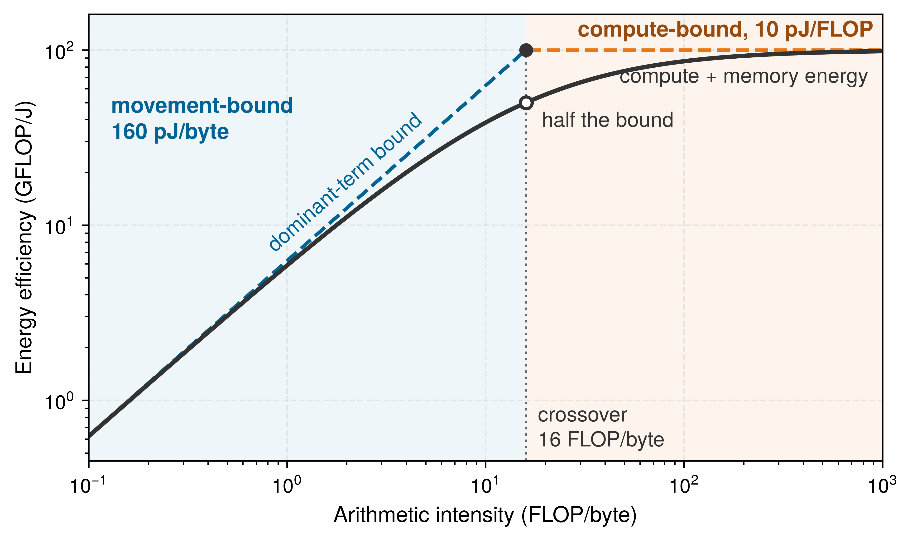
Инженерный расчёт 15.4: Энергетический анализ MatMul
Задача: Как размерности матриц
Таблица 3: Сравнение энергетических узких мест: Та же энергетическая модель классифицирует малые плотные, большие плотные и поэлементные задачи по их доминирующему энергетическому члену.
Математика:
- Количество операций и байтов:
FLOP и байт при FP32 в предположении идеального повторного использования: каждый вход читается один раз, выход записывается один раз на смоделированной границе памяти. Разбиение на тайлы и ограниченная ёмкость могут увеличить измеренный трафик. - Арифметическая интенсивность:
FLOP/байт, поэтому матрица располагается точно в энергетической перекрёстной точке при = 96 ( ) — строка малой матрицы ниже. - Сравнение режимов: малые плотные задачи лежат в перекрёстной точке, большие плотные задачи доминируются арифметикой, а поэлементные — перемещением данных (Таблица 3).
| Рабочая нагрузка | Арифметическая интенсивность | Энергия вычислений | Энергия памяти | Приоритет оптимизации |
|---|---|---|---|---|
| Малая матрица ( |
Баланс в перекрёстной точке | |||
| Большая матрица ( |
Повышение эффективности вычислений | |||
| Сложение векторов ( |
Сокращение перемещения данных слиянием |
Системный вывод: Оптимизация энергии следует той же логике узких мест, что и оптимизация задержки. Плотному умножению матриц выгодна эффективная арифметика; поэлементным задачам — сокращение перемещений памяти.
Энергетическая модель «крыши» объясняет, почему разные стратегии оптимизации подходят разным рабочим нагрузкам. Когда доминирует арифметика, большим плотным матричным операциям выгодна меньшая энергия на выполняемую операцию. Когда доминирует перемещение данных, поэлементным ядрам выгодны оптимизация раскладки данных, слияние ядер (kernel fusion) для сокращения обращений к памяти и использование памяти на кристалле. Само по себе ускорение исполнения не гарантирует ни одной из этих экономий: средняя мощность и время исполнения должны измеряться вместе. Эта инфраструктура направляет архитектурные и алгоритмические решения при проектировании устойчивых систем ИИ.
15.4.3 Методы измерения энергии
Считывание nvidia-smi во время шага обучения пропускает DRAM хоста, хранилище NVMe, сетевые коммутаторы и насосы чиллера, тогда как показания счётчика электросети на подстанции сливают все colocated-задачи в единый итог. Поэтому количественная оценка энергопотребления системы ИИ требует выбора измерительных приборов на нескольких уровнях аппаратного стека. Счётчики на кристалле дают точную атрибуцию, мобильные профилировщики раскрывают специфичные для платформы подсистемы, внешние периферийные приборы фиксируют поведение рабочего цикла, а системные инструменты связывают измерения компонентов с накладными расходами объекта, которые пропускают счётчики устройств.
Аппаратные счётчики мощности
Современные процессоры предоставляют телеметрию мощности от производителя, которую ПО может запрашивать через интерфейсы устройств. Эти счётчики дают оценки, коррелированные с рабочей нагрузкой, в пределах шин и окон выборки, о которых сообщает устройство; они не являются универсальной истиной для энергии «из розетки», а их частота обновления, калибровка и охват компонентов различаются между платформами. Внешние приборы остаются необходимыми, когда для сравнения требуется прослеживаемая полная энергия или более тонкое временное разрешение.
Интерфейс running average power limit (RAPL) от Intel предоставляет накопительные счётчики энергии для поддерживаемых доменов питания, причём охват зависит от процессора. При контролируемом измерении считывается соответствующий счётчик до и после рабочей нагрузки, а разность энергии делится на затраченное время для получения средней мощности. Это делает RAPL полезным для задач на стороне хоста, при условии что учёт идентифицирует фактически отчитывающиеся домены и корректно обрабатывает переполнение счётчиков. Счётчики пакета и его поддоменов нельзя суммировать, когда их охват пересекается. RAPL не измеряет энергию дискретных GPU, а доступ может требовать повышенных привилегий.
GPU NVIDIA предоставляют информацию о мощности через NVIDIA Management Library, доступную с помощью утилиты командной строки nvidia-smi или программных привязок. Мониторинг мощности GPU должен различать мгновенное показание и усреднённое датчиком значение; поведение зависит от устройства и запроса. Интегрирование выборок требует частоты опроса и интервала нагрузки, соответствующих этому окну усреднения. Более частая выборка усреднённого сигнала не позволяет восстановить короткие всплески мощности. Поддерживаемые накопительные счётчики энергии могут упростить интервальный учёт, но их охват и разрешение всё равно нужно проверять, и ни один из методов сам по себе не даёт полной энергии объекта.
Периферийные устройства и микроконтроллеры часто не имеют встроенных счётчиков мощности и требуют внешних измерительных приборов. Следует выбрать диапазон тока, способ измерения напряжения, частоту выборки и аналоговую полосу пропускания так, чтобы охватить активные интервалы и интервалы сна рабочей нагрузки. Платные мониторы могут интегрировать энергию инференса; разрешение более коротких событий требует достаточной полосы пропускания прибора и аккуратной обработки фильтрации и наложения спектров. Одной лишь высокой частоты выборки недостаточно, чтобы отнести энергию к отдельным операциям.
Профилирование энергопотребления мобильных платформ
На мобильных платформах измерение зависит от того, насколько детальную атрибуцию по подсистемам предоставляет операционная система хоста. Некоторые платформы сообщают мощность по шинам питания или по компонентам — CPU, GPU, нейронному процессору и радиомодулю, — что позволяет разработчику видеть, какая подсистема доминирует в общем потреблении. Другие предоставляют лишь относительные оценки влияния на энергию или тепловые состояния, которые полезны для обнаружения регрессий в ходе разработки, но не могут обосновать абсолютное утверждение об энергии. Вендорские профилировщики, сопоставляющие кривые мощности с исполнением ядер, находятся между этими крайностями. Проектный вопрос состоит в том, охватывает ли сообщаемая величина ту электрическую границу, которая нужна для сравнения, а не в том, каким инструментом пользоваться. Когда не охватывает, требуются внешние измерительные приборы. Приборы для измерения мощности на периферии различаются по роли измерения, и каждая роль требует собственных проверок (Таблица 4).
| Класс прибора | Роль измерения | Необходимые проверки |
|---|---|---|
| Платный монитор тока | Интегрирование энергии на выбранных шинах | Напряжение, интервал выборки, потери на шунтах, длительность события |
| Многоканальный монитор | Атрибуция энергии между компонентами | Синхронизация каналов и охват |
| Широкодиапазонный внешний анализатор | Захват интервалов сна и активности | Полоса пропускания, переходы диапазонов, калибровка |
| Автоматизированный анализатор мощности | Повторение тестов рабочего цикла и батареи | Запуск, окно интегрирования, поведение питания |
Методика измерений на периферии
Измерения энергии на периферийных устройствах полезны лишь тогда, когда они отражают реальный рабочий цикл развёртывания, а не идеализированный всплеск инференса в активной фазе, поэтому воспроизводимая оценка требует экспериментальных условий, согласованных с этой нагрузкой. Одновременная регистрация тока и напряжения должна охватывать как активные, так и покоящиеся состояния. Регистрация напряжения наряду с током фиксирует колебания напряжения на шине, а не выводит мощность только из тока. Термическая и частотная стабилизация необходимы для сравнений при длительной нагрузке, тогда как холодные старты и периодические всплески нужно измерять через их реальные переходы состояний. Поскольку периферийные устройства большую часть времени развёртывания ожидают между событиями, реалистичный учёт рабочего цикла фиксирует и пиковое потребление при инференсе, и мощность, усреднённую по времени, на типичных интервалах простоя. Атрибуция по компонентам может изолировать или вычесть нагрузки периферии, чтобы показать потребление ускорителя. Однако оценка для развёртывания должна восстановить радиомодули, датчики и другие подсистемы, необходимые для предоставления сервиса. Для учёта рабочего цикла Уравнение 8 выражает эту связь между активной мощностью и мощностью в простое:
где
Системный уровень профилирования энергии
Исчерпывающий учёт энергии требует объединения измерений на уровне чипов с инфраструктурными накладными расходами. Компонентные слагаемые должны быть непересекающимися: телеметрию GPU-платы, уже включающую память устройства, нельзя складывать с другим измерением той же памяти. Они также должны покрывать границу IT: нагрузки систем хранения и серверной инфраструктуры включаются в соответствующие измеренные слагаемые. Уравнение 9 формализует полную энергию как сумму этих компонентных вкладов, умноженную на накладные расходы объекта:
Ни один счётчик не охватывает весь путь энергии, поэтому системные профилировщики вроде Intel VTune, NVIDIA Nsight Systems и открытые инструменты вроде PowerJoular агрегируют измерения по компонентам. Внутричиповые счётчики оценивают мощность устройства и могут различаться частотой выборки, охватом и калибровкой; распределительный блок питания стойки (PDU) даёт независимое измерение нижележащей IT-нагрузки. Стоечный PDU не измеряет центральные чиллеры, насосы, освещение или потери преобразования выше по цепочке, поэтому энергия объекта должна поступать либо от счётчиков объекта, либо от явно согласованного по времени PUE, применённого к измеренной IT-нагрузке. То же правило действует и для мощности: мощность объекта — это измеренная IT-мощность, сумма мощностей серверов, сетевого и складского оборудования, умноженная на PUE из Уравнение 2, так что накладные расходы входят один раз на границе объекта.
Отслеживание углеродного следа во время разработки имеет значение, когда оно питает решения о размещении и сложности, а не превращается в отчёт по факту. Инструменты вроде CarbonTracker (Anthony и др. 2020 г.) и CodeCarbon (Schmidt и др. 2021 г.) обёртывают границу рабочей нагрузки, оценивают энергию по аппаратным счётчикам или моделям утилизации, присоединяют локальную углеродную интенсивность сети и записывают полученные выбросы вместе с метаданными эксперимента. Важный системный паттерн — не вызов API, а момент измерения: оценка должна появляться, пока размер модели, длительность обучения, регион и расписание ещё можно изменить, до того как запуск уже израсходовал свою энергию. И даже тогда энергия объекта — ещё не полный след, потому что пересчёт в выбросы требует углеродного фактора сети, а аппаратура, потребившая эту энергию, несёт выбросы производства, которые не фиксирует ни один измеритель мощности.
15.5 Расчёт углеродного следа
Рассмотрим центр обработки данных, питаемый сетью с преобладанием гидроэнергетики. Его операционная углеродная интенсивность может быть намного ниже, чем у сети с преобладанием ископаемого топлива, но гидрогенерация не является нулевой по жизненному циклу, и ИИ-система не свободна от углерода. Строительство и эксплуатация водохранилищ имеют воздействие, а добыча кремния, производство GPU и заливка бетона для ЦОД выделили углерод ещё до включения серверов. Полный расчёт следа должен учитывать операционное электричество, воплощённый углерод и экологические эффекты, исключённые из чисто углеродной метрики.
Построение такого следа по слагаемым начинается с вопроса, какая фаза жизненного цикла доминирует для данной нагрузки, а затем — к какой инвентаризации относится каждый выброс, поскольку один и тот же физический выброс может появиться в отчётности более чем одной организации. Углеродный фактор сети, операционный углерод, воплощённый углерод и их сумма по жизненному циклу затем получают уравнения, обобщаемые на различные нагрузки, сети и предположения об амортизации.
15.5.1 Углеродная отчётность и фазы жизненного цикла
Опубликованные оценки энергии одного запроса к чат-модели расходятся примерно на порядок величины, поскольку разные исследования учитывают разные компоненты стека обслуживания (Elsworth и др. 2025 г.), а приблизительные оценки, оторванные от своих допущений, быстро циркулируют как факты (Luccioni и др. 2025 г.). Без модели учёта на уровне рабочей нагрузки, фиксирующей эти границы, команды не могут проверить, действительно ли выбор меньшей модели, менее энергоёмкого оборудования, более чистого региона или отложенного обучения снижает воздействие на окружающую среду.
Анализ углеродного следа превращает устойчивость из общего обязательства в проверяемое проектное ограничение, связывая потребление энергии, углеродную интенсивность сети и ресурсные требования жизненного цикла с теми же решениями, которые управляют производительностью и эффективностью (Schwartz и др. 2020 г.; Patterson и др. 2021 г.). Отслеживаемость — технический мост между измерением и отчётностью и инженерный ответ на дефицит прозрачности: отсутствие записей об энергии, углероде и воде по каждой модели, которые позволили бы кому-либо вне команды проверить утверждение. Команда должна уметь связать версию модели, запуск обучения, рабочую нагрузку обслуживания, регион, источник энергии и оценку жизненного цикла настолько, чтобы утверждения об углероде и воде можно было верифицировать.
Чтобы измерения ограничивали проектирование, отчётные метрики должны раскрывать стоимость на уровне рабочей нагрузки, а не агрегированные заявления облачного масштаба, которые остаются непрозрачными, пока отчётность ведётся на уровне компании в целом. Производственное измерение в Глава 15.7.3 показывает, насколько одна лишь граница сдвигает отчётную цифру. Практическим стандартом поэтому является отчётность за использование ресурсов на протяжении всего жизненного цикла ИИ. Она требует той же цепочки доказательств, что и для задержки, точности и надёжности: утверждение должно связываться с журналами, измерителями, версиями моделей и решениями о развёртывании, а не только с агрегированными обязательствами по устойчивости. Расчёт следа делает эту цепочку доказательств явной, объединяя энергию рабочей нагрузки, PUE объекта, углеродную интенсивность сети и воплощённый углерод, и начинает с доминирующей фазы жизненного цикла.
Трёхфазная система оценки жизненного цикла
Практический вопрос — какая фаза жизненного цикла доминирует для данной нагрузки, поскольку ответ определяет рычаг оптимизации. Эффективное измерение углеродного следа поэтому разделяет три фазы, совокупно определяющие воздействие на окружающую среду: обучение, инференс и производство аппаратного обеспечения, на котором обе работают. Ещё две группировки появляются позже в главе: отчётные категории из Глава 15.5.2 и стадии жизненного цикла из Глава 15.8. Обе перегруппировывают те же самые выбросы — по отчитывающейся организации и по времени — не добавляя новых. Таблица 5 сопоставляет эти три группировки друг с другом.
Для исследовательских нагрузок с упором на обучение фаза обучения часто доминирует в операционных выбросах, поскольку математическая оптимизация требует устойчивых параллельных вычислений.7 Географическое размещение затем меняет операционный результат, потому что идентичная нагрузка может столкнуться с очень разной углеродной интенсивностью сети.8 Для высоконагруженных производственных сервисов, напротив, доминировать в выбросах за время жизни может фаза инференса, потому что обслуживание непрерывно повторяется после завершения обучения, и его кумулятивное воздействие растёт с широтой развёртывания и частотой использования. Решающим сравнением являются кумулятивные выбросы обслуживания за период развёртывания против выбросов обучения, включая экспериментальные запуски, предшествовавшие финальному. Чем шире обслуживается модель и чем дольше она остаётся развёрнутой, тем вероятнее, что инференс — большее слагаемое, и Глава 15.7.3 вычисляет, за сколько дней обслуживания при фиксированном объёме запросов обучение будет перекрыто.
Фаза производства вносит воплощённый углерод от производства аппаратуры, включая добычу материалов, производство полупроводников и логистику цепочки поставок.9 При фиксированном производственном следе более долгая эксплуатация на углеродоёмкой сети увеличивает операционные выбросы и снижает долю воплощённого углерода в общем объёме. Более чистая электроэнергия или меньшее время эксплуатации повышают эту относительную долю, не меняя уже понесённые выбросы производства. Операционная эффективность не отменяет эти выбросы; решения о закупках, дизайне, повторном использовании и сроке службы определяют будущие воплощённые затраты.
15.5.2 Категории выбросов и граница разработки
Когда ИИ-организация арендует облачный GPU-кластер, электричество, питающее запуск, появляется в счёте облачного провайдера за коммунальные услуги, выбросы от производства чипов — в инвентаризации литейного производства, и ни то, ни другое не регистрируется как прямое топливо или электричество на собственных счётчиках арендатора. Тогда как группы учёта обучения, инференса и производства группируют выбросы по физической активности, их порождающей, три категории выбросов, определённые Протоколом по парниковым газам (GHG) (World Resources Institute и World Business Council for Sustainable Development 2023 г.), классифицируют тот же самый след относительно отчитывающейся организации. Это разные взгляды на одни и те же выбросы, а не дополнительные суммы для сложения. Связать учёт рабочей нагрузки с организационной инвентаризацией — значит назвать, кто владеет оборудованием, закупает электричество и покупает сервис.
Внутри границы собственного центра обработки данных выбросы категории 1 включают прямое сжигание в собственных генераторах и утечку хладагентов из охлаждающего оборудования, тогда как закупленное электричество для охлаждения или IT-оборудования относится к категории 2, а не к 1. Выбросы категории 2 представляют непрямые выбросы от закупленного электричества, пара, тепла и охлаждения, потреблённых отчитывающейся организацией. Закупленное электричество часто является доминирующей категорией для собственного объекта оператора и сильно варьируется по географическому расположению и энергетическому миксу сети. Электричество, используемое облачным провайдером, — это категория 2 для провайдера, но закупленный облачный сервис клиента, как правило, учитывается в цепочке создания стоимости категории 3 клиента. Физические электроны не меняются; меняется граница отчётности. Блокнот о географии в Глава 15.2 использует заявленную пару иллюстративных факторов; реальный учёт требует факторов, соответствующих месту, времени и методу.
Выбросы Scope 3 — самая сложная категория: она охватывает производство аппаратного обеспечения, облачные цепочки поставок, транспортировку, утилизацию и последующее использование. Производство полупроводников углеродоёмко.10 Производитель отражает те же выбросы от fab-производства внутри собственной организационной границы, поэтому две инвентаризации описывают одни и те же физические выбросы с двух сторон. Сколько времени потребуется эксплуатации, чтобы сравняться с этим воплощённым углеродом, зависит от интенсивности работы аппаратуры и от того, на какой электросети она работает. Точка окупаемости H100, рассчитанная в рамках фаз жизненного цикла (Глава 15.5.1.1), составляет от нескольких недель при номинальной мощности на усреднённой по США электросети до месяцев или лет при низкой утилизации или на «чистой» электросети. При корпоративном учёте или учёте по всей цепочке создания стоимости AI выбросы Scope 3 могут доминировать даже тогда, когда Scope 2 доминирует в операционном следе отдельного принадлежащего компании объекта.
В Scope 3 может также попадать последующее использование, включая смартфоны конечных пользователей, IoT-устройства и периферийные вычисления.11 Корпоративные суммарные показатели сами по себе не позволяют определить след конкретного AI-сервиса; для такого распределения по-прежнему требуется учёт на уровне рабочей нагрузки.
Протокол по парниковым газам (GHG Protocol) располагает эти категории в виде концентрических границ отчётности, расширяющихся наружу от зоны прямого контроля оператора (Рисунок 6). Дизельные генераторы на площадке относятся к Scope 1, закупаемая сетевая электроэнергия для вычислений и охлаждения — к Scope 2, а верхние переделы полупроводникового производства и переработка по окончании срока службы — к Scope 3.
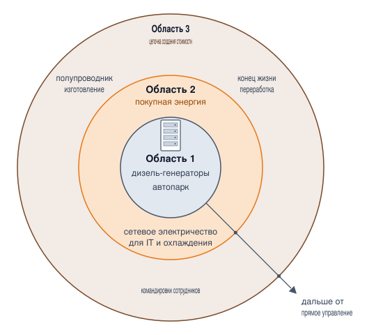
Операционные выбросы финального обучающего запуска и его развёрнутого сервиса не учитывают разработку, которая им предшествовала: неудачные эксперименты, поиск гиперпараметров, инфраструктуру сборки и тестирования. Повторяющиеся эксперименты могут превзойти по стоимости финальный запуск. Поиск, обучающий
После того как определены категории, граница разработки, фазы деятельности из Глава 15.5.1.1 и стадии жизненного цикла из Глава 15.8, их можно положить рядом (Таблица 5). Каждая строка — один и тот же набор выбросов, увиденный тремя способами, поэтому итог, построенный по одному столбцу, никогда нельзя складывать с итогом по другому.
| Фаза деятельности | Стадия жизненного цикла | Категория для владельца-оператора | Категория для облачного клиента |
|---|---|---|---|
| Обучение (разработочные запуски и финальный запуск) | Проектирование и эксперименты; использование | Scope 2 для закупаемой электроэнергии; Scope 1 для генерации на площадке | Scope 3 (закупаемый сервис) |
| Инференс (обслуживание) | Использование | Scope 2 для закупаемой электроэнергии; Scope 1 для генерации на площадке | Scope 3 (закупаемый сервис) |
| Производство (воплощённый углерод) | Производство; утилизация | Scope 3 (капитальные товары и обращение по окончании срока службы) | Scope 3 (внутри закупаемого сервиса) |
Применение категориальной схемы на практике требует классификации источников выбросов на протяжении жизненного цикла типичной ML-платформы.
Контрольная точка 15.2: Учёт невидимого углерода
Оцени углеродный след платформы машинного обучения, распределив следующие источники выбросов по категориям Scope 1 (прямые), Scope 2 (непрямая энергия) или Scope 3 (цепочка создания стоимости). Перед отнесением каждой категории укажи отчитывающуюся организацию:
15.5.3 Углеродная интенсивность электросетей и региональные различия
В двух отчётах один и тот же мегаватт-час электроэнергии дата-цента может получить углеродную интенсивность, различающуюся в несколько раз, — просто из-за выбора другого коэффициента выбросов или границы учёта. Коэффициенты жизненного цикла технологий генерации включают поставку топлива, строительство, эксплуатацию и вывод из эксплуатации, тогда как региональные коэффициенты электросетей отражают энергобаланс на заданной территории и периоде и могут не включать верхние переделы жизненного цикла. Каждый тип коэффициента должен быть идентифицирован до включения в расчёт (Таблица 6).
| Коэффициент | Что он описывает | Уместное применение |
|---|---|---|
| Жизненный цикл генерации | Выбросы на протяжении жизненного цикла технологии производства электроэнергии | Сравнение вариантов генерации при согласованных предпосылках жизненного цикла |
| Средний по сети | Выбросы, отнесённые к энергобалансу на территории и периоде | Распределение выбросов электроэнергии рабочей нагрузки при заявленной операционной либо lifecycle-границе |
| Предельный по сети | Оценка изменения выбросов при изменении спроса | Оценка предлагаемого сдвига или снижения спроса на электроэнергию |
Для своих дата-центов в 2024 году Google сообщает location-based коэффициент сети — среднюю интенсивность сетей, от которых питаются дата-центы, — в 345 g CO2e/кВт·ч и market-based коэффициент 94 g CO2e/кВт·ч после зачёта закупок электроэнергии без углеродного следа — разница в 3.7× для той же электроэнергии (Elsworth и др. 2025 г.). Медианный текстовый запрос к Gemini, расход воды на который вычислил Глава 15.4.1.3, таким образом несёт около 0.08 g CO2e или 0.023 g CO2e выбросов от электроэнергии в зависимости от коэффициента, и только второй соответствует цифре, публикуемой компанией. Ни один не ошибочен, но сравнение осмысленно лишь тогда, когда обе стороны заявляют одинаковый тип коэффициента, период и границу.
Применённые к фиксированному счётчику энергии объекта в 10,000 MWh, региональные коэффициенты электроэнергии меняют операционный углерод почти на два порядка (Рисунок 7). Предполагаемые коэффициенты варьируются от 10 g/kWh для Норвегии (100 t
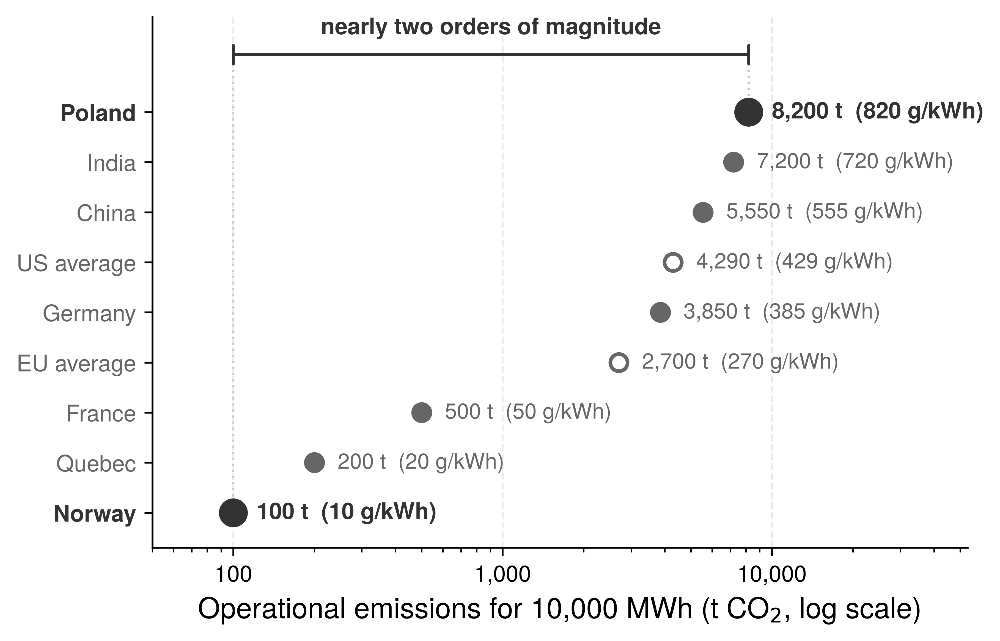
15.5.4 Расчёт операционного углерода
Умножение «сырой» тепловой расчётной мощности GPU на время работы и региональный коэффициент сети занижает операционный углерод задания, если не учитывает хост-серверы и мощность чиллеров, и завышает его, если накладные расходы объекта случайно учтены дважды. Уравнение Уравнение 10 вычисляет операционный углерод по энергии уровня объекта
Применённое к обучающему запуску среднего масштаба, уравнение разделяет энергию объекта и коэффициент сети, преобразующий её в выбросы. Приведённый ниже расчёт строит эту энергию объекта шаг за шагом — от потребления ускорителя, поддержки стойки и PUE — прежде чем сравнить полученные выбросы на двух региональных сетях.
Инженерный расчёт 15.5: Расчёт выбросов при обучении
Задача: количественно оценить эксплуатационный углеродный след обучения модели на 7B параметров на 64 GPU A100 в течение 14 days, предполагая непрерывное потребление ускорителей на номинальной мощности и указанные накладные расходы на стойку и объект инфраструктуры.
Математика:
- Вычислить энергию: 64 GPU
400 W 336 hours = 8,601.6 kWh. - Учесть ИТ-обвязку и PUE: хост-процессоры, память и сетевое оборудование добавляются к нагрузке ускорителей. Этот расчёт заимствует отношение ИТ-мощности к мощности ускорителей из профиля стойки DGX H100, детально разобранного позже в Таблица 7. Это отношение — модельная прокси-оценка нагрузки поддержки сервера с A100, а не её измерение. Оно масштабирует энергию ускорителей в 1.38 раза до 11,827.2 kWh, так что полная энергия объекта = 11,827.2 kWh
1.12 = 13,246.5 kWh. - Вычислить выбросы: на усреднённой сети США (429 g/kWh
) выбросы = 5.7 t. На гидроэнергетической сети Квебека (20 g/kWh) выбросы = 264.9 kg.
Системный вывод: один лишь углеродный фактор сети даёт 21.4×-кратную разницу в выбросах при обучении для этой пары — тот же рычаг размещения, что количественно оценён в ноутбуке 15.2. Архитектура модели не меняется.
15.5.5 Оценка воплощённого углерода
Перенос обучающего запуска на 64 A100 из предыдущего раздела с усреднённой сети США на гидроэнергетическую сеть Квебека снижает эксплуатационные выбросы более чем на порядок, однако углерод, выпущенный при изготовлении этих 64 GPU на заводе по производству полупроводников, не уменьшается ни на один грамм. Ноутбук с выбросами при обучении учитывал только электричество: более низкий углеродный фактор сети снижает эксплуатационный углерод и повышает долю амортизированного производства с примерно 1.6 percent суммарных выбросов на усреднённой сети США до примерно 25.8 percent на сети Квебека. Останется ли воплощённый углерод малой поправкой или станет крупной долей, зависит от производственного следа, утилизации и срока службы, поэтому эти величины должны войти в сравнение прежде, чем инженер сможет выбрать между снижением потребления электричества и продлением срока службы оборудования.
Воплощённый углерод охватывает выбросы от добычи сырья, полупроводникового производства, сборки, транспортировки и утилизации в конце срока службы. Для ИИ-оборудования производственные выбросы определяются энергоёмкостью передовых полупроводниковых процессов: изготовлением пластин на передовых техпроцессах, производством памяти с высокой пропускной способностью и корпусированием. GPU NVIDIA A100 несёт воплощённый след порядка 150 kg CO2e за единицу (Luccioni и др. 2023 г.). Углеродный след продукта NVIDIA HGX H100 подразумевает примерно 164 kg CO2e на каждый H100, если след основания платы распределён поровну между его восемью GPU (NVIDIA Corporation 2025 г.). Уравнение 11 амортизирует этот воплощённый углерод на срок службы оборудования для вычисления выбросов на одно использование:
Производственные выбросы уже произошли к моменту ввода оборудования в эксплуатацию. Амортизация распределяет эту нагрузку во времени; она не описывает дополнительные производственные выбросы, накапливающиеся каждый день. Утилизация и срок службы определяют, сколько полезной работы делит на себя первоначальную нагрузку.
Системный взгляд 15.1: Амортизация воплощённого углерода
Аренда GPU на час использует оборудование, производственные выбросы которого уже произошли. Учёт рабочей нагрузки распределяет долю этих выбросов на интервал аренды — независимо от того, оценивается ли углерод в денежной плате явно.
Выражение Уравнение 11 в расчёте на час и умножение на длительность задачи делает это распределение явным:
Сценарий: обучение модели в течение 10 hours на 8 NVIDIA H100. Эта иллюстрация только для ускорителей использует TDP как допущение постоянной мощности и исключает энергию хоста, сети и объекта инфраструктуры. Её доля воплощённого углерода использует распределённый след основания платы; это не полная инвентаризация жизненного цикла парка.
- Эксплуатационные: 8
0.7 kW 10 hours = 56 kWh. При 0.429 kg/kWh (усреднённая сеть США) = 24 kg. - Воплощённые: 8
164 kg = 1312 kg. - Амортизация: срок службы = 3 years, стандартный срок службы (26280 hours).
- Часовая «аренда» = 1312 kg / 26280 hours
0.050 kg/h. - Стоимость задачи = 0.050 kg/h
10 hours = 0.5 kg.
- Часовая «аренда» = 1312 kg / 26280 hours
Системный вывод: для долговечного оборудования в «грязных» сетях доминирует электричество (24 kg против 0.5 kg). Однако в «чистых» сетях (гидроэнергетика, 0.020 kg/kWh) эксплуатационные выбросы падают до 1.1 kg, делая воплощённый углерод значимой долей (~30.8 percent) суммарного следа.
Задача H100 из этой перспективы, как и ноутбук о жизненном цикле позже в этой главе, амортизируется на 3-year стандартный срок службы. Расчёт A100 ниже сохраняет собственный 4-year продлённый срок службы, который распределяет тот же производственный углерод на больший срок эксплуатации. Для ускорителя с 150 kg воплощённого углерода (упомянутая выше оценка для A100) и этим 4-year сроком службы дата-центра первый шаг — дневная амортизация: 150 kg / (4 years
Добавление этого вклада в 92.1 kg воплощённого углерода к 5,682.7 kg эксплуатационных выбросов, вычисленных ранее для усреднённой сети США, даёт 1.6 percent долю производства, отмеченную в начале этого раздела, тогда как сопоставление той же производственной нагрузки с 264.9 kg эксплуатационных выбросов Квебека повышает долю производства до 25.8 percent. Производственная составляющая не изменилась; более чистая сеть уменьшила всё вокруг неё.
15.5.6 Учёт углерода жизненного цикла
Отчётность только об электричестве финального обучающего запуска и счёте за питание обслуживающего кластера упускает неудачные переборы архитектур, предшествовавшие запуску, и производственные выбросы стоек, в которых он размещён. Полный учёт рабочей нагрузки (Уравнение 12) группирует эксплуатационные выбросы на обучение и инференс, добавляет воплощённые выбросы и требует, чтобы эксперименты разработки и поддерживающие сервисы входили в инвентаризацию, а не исчезали, когда учёт начинается с финального запуска:
У каждого слагаемого свои физические драйверы (Рисунок 8). Воплощённое слагаемое
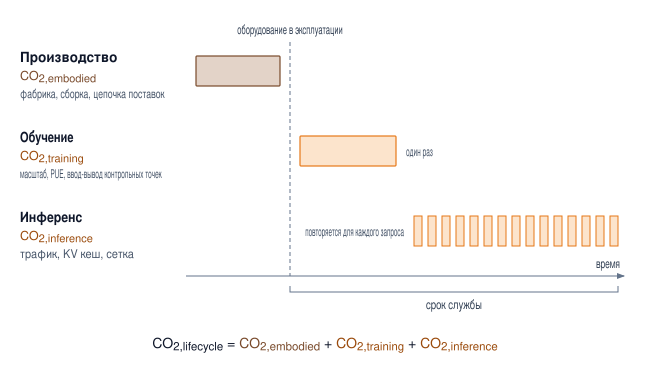
Уравнения становятся инструментом принятия решений, как только каждый фактор измерен или объявлен. Расчётный учёт для крупного обучающего запуска показывает, как сочетаются эксплуатационные и воплощённые слагаемые и какое из них доминирует.
Инженерный расчёт 15.6: Оценка углеродного следа части жизненного цикла
Задача: Оценить эксплуатационные выбросы объекта (facility) плюс распределённые выбросы от производства ускорителей и плат для обучения модели с 70 млрд параметров.
Переменные: 2,048 GPU H100, 30 days, TDP 700 W, вспомогательная мощность по профилю стойки, PUE 1.12, углеродная интенсивность сети 429 g
Расчёт: Мощность ускорителей = 2,048
Воплощённый углерод: предположим, что производственный след составляет
Результат: 681.9 t + 9.3 t
Системный вывод: в этом частичном жизненном цикле доминирует эксплуатационная составляющая. Она включает электроэнергию объекта и распределённое производство платы HGX, но не учитывает производство хост-систем, сетевого оборудования, накопителей и инфраструктуры объекта, а также другие не смоделированные этапы жизненного цикла. Полный след требует расширения границ инвентаризации.
Время — одно из обоснованных оснований распределения, но не единственное. Общие парки могут распределять воплощённый углерод по ускоритель-часам, зарезервированной мощности или доле полезных вычислений рабочей нагрузки. Отчёт Google об углеродных выбросах облака сочетает два из этих оснований, распределяя энергию и выбросы общих машин по резервированиям ресурсов каждого клиента и почасовому измеренному потреблению (Schneider и Mattia 2024 г.). Выбранный знаменатель должен быть задекларирован и применяться последовательно; иначе задача с низкой утилизацией может выглядеть искусственно дешёвой лишь потому, что простой мощности поглощает другой арендатор. Эти доли рабочей нагрузки служат для инженерных сравнений; они не определяют отчётный год или категорию в корпоративной инвентаризации выбросов. Для решений о закупках нужен и нераспределённый итог по парку, и доля, отнесённая к рабочей нагрузке, поскольку амортизация меняет принадлежность выброса в инвентаризации, но не удаляет его из атмосферы.
Поэтому каждая оценка жизненного цикла должна нести интервал неопределённости, а не единственный авторитетный итог. Средняя мощность рабочей нагрузки, PUE, углеродная интенсивность сети, срок службы оборудования, утилизация и производственный след измеряются или моделируются с разными погрешностями. Анализ чувствительности варьирует допущения, способные изменить решение: работа на чистой или углеродоёмкой сети, срок службы три или пять лет, низкий или высокий объём инференса. Затем он показывает, остаётся ли предпочтительный вариант предпочтительным. Точность арифметики не компенсирует нестабильность границ системы.
Баланс между этими составляющими меняется с объёмом и длительностью инференса. Сервис с высоким трафиком может превзойти весь след своего обучения за считанные месяцы, а при большем трафике — за дни; этот переход Глава 15.7.3 разбирает для развёрнутой модели.
Учёт становится инженерным инструментом, когда он выполняется для каждой задачи, а не один раз постфактум. Калькулятор частичного углеродного следа жизненного цикла (Список 1) объединяет измеренную энергию, множитель вспомогательной нагрузки стойки, задекларированный PUE объекта, явно выбранный коэффициент углеродной интенсивности сети и амортизированный воплощённый углерод. Его пример воспроизводит запуск на 64 A100, где каждый вход берётся из профиля объекта, сети или оборудования, который он описывает; Глава 15.9.4.1 сравнивает источники сетевого коэффициента.
from mlsysim import Hardware, Infrastructure, ReferenceStats, Systems
def calculate_carbon_footprint(
gpu_power_watts: float,
num_gpus: int,
training_hours: float,
it_power_multiplier: float,
pue: float,
grid_intensity_gco2_kwh: float,
gpu_embodied_kg: float,
gpu_lifetime_years: float,
) -> dict:
"""Estimate operational emissions plus allocated GPU manufacturing emissions."""
# Operational emissions (plain floats: watts, hours, kWh, grams)
gpu_energy_kwh = gpu_power_watts * num_gpus * training_hours / 1000
it_energy_kwh = gpu_energy_kwh * it_power_multiplier # + host, net
facility_energy_kwh = it_energy_kwh * pue # overhead, applied once
operational_kg = (
facility_energy_kwh * grid_intensity_gco2_kwh / 1000
)
# Embodied emissions (amortized by time over the service life)
daily_embodied = gpu_embodied_kg / (gpu_lifetime_years * 365)
training_days = training_hours / 24
embodied_kg = num_gpus * training_days * daily_embodied
return {
"energy_kwh": facility_energy_kwh,
"operational_carbon_kg": operational_kg,
"embodied_carbon_kg": embodied_kg,
"total_carbon_kg": operational_kg + embodied_kg,
"embodied_fraction": embodied_kg
/ (operational_kg + embodied_kg),
}
# Example: 7B model training on a 64-GPU A100 cluster for 14 days.
# Each input names its source: PUE is a facility property, the
# grid factor a property of the electricity supply.
_rack = Systems.Racks.DGX_H100_4Node # proxy support-load profile
_facility = Infrastructure.FacilityCooling.BestAir # PUE 1.12
_grid = Infrastructure.Grids.US_Avg # annual-average factor
_run = ReferenceStats.MidScaleTrainingCarbonProfile
result = calculate_carbon_footprint(
gpu_power_watts=Hardware.Cloud.A100.tdp.m_as("W"), # 400 W
num_gpus=Systems.Clusters.Lab_64_A100.total_accelerators, # 64
training_hours=_run.TrainingDays.m_as("h"), # 336 h
it_power_multiplier=(
_rack.it_power / _rack.accelerator_power
).m_as(""),
pue=_facility.pue,
grid_intensity_gco2_kwh=_grid.carbon_intensity_g_kwh,
gpu_embodied_kg=Hardware.Cloud.A100.embodied_carbon_kg,
gpu_lifetime_years=( # 4-year extended service life
Infrastructure.Pricing.Capital
.AcceleratorExtendedServiceLifeYears.rate
),
)
print(
f"Total carbon footprint: {result['total_carbon_kg']:.0f} kg CO2"
)
print(f"Embodied fraction: {result['embodied_fraction']:.1%}")Команды могут встроить этот частичный углеродный учёт прямо в дашборды оркестрации. Однако расчёт эксплуатационных и воплощённых выбросов отдельных тренировочных запусков охватывает лишь одно измерение использования ресурсов парка. В масштабе кампуса дата-центры вводят ограничения по подводу мощности и охлаждению, которые невидимы для метрик отдельных запусков.
15.6 Потребление энергии и ресурсов дата-центрами
Тренировочный кластер может уложиться в бюджет мощности ускорителей, но превысить бюджет объекта, как только в учёт входят вспомогательные системы и охлаждение. Способность объекта вообще разместить кластер — вопрос осуществимости; вопрос устойчивости — снижает ли изменение подвода мощности или охлаждения стоимость жизненного цикла, сохраняя этот осуществимый рабочий диапазон. Релевантное сравнение включает годовую энергию, локальное потребление воды, срок службы оборудования и энергию, потраченную впустую, когда сбои охлаждения прерывают полезную работу.
Поэтому устойчивость объекта следует читать как цепочку ограничений, а не как одно число PUE. Постоянный мегаваттный спрос задаёт экспозицию к сети и выбросам. Подвод мощности определяет, сколько электроэнергии становится полезной IT-нагрузкой. Охлаждение задаёт накладные расходы объекта и воду, отбираемую для отвода тепла. Потребление воды затем определяет, является ли технически эффективная площадка устойчивой локально. Физические механизмы ниже важны здесь потому, что каждый относит потери или потребление ресурсов к другой учётной границе.
15.6.1 Энергия дата-центров и ИИ-нагрузки
Даже когда инженер сокращает энергию отдельной модели вдвое, потребление электричества кампусом продолжает расти, если новые мощности дата-центров и трафик инференса расширяются быстрее, чем эффективность на задачу. В масштабе объекта цель оптимизации — уже не отдельная модель сама по себе, а совокупный спрос, накладные расходы объекта и контекст сети вокруг каждого ватта IT-мощности. Тот же анализ IEA Energy and AI, стоящий за прогнозом потребления электричества до 2030 года, приведённым в начале главы, отслеживает и выбросы — другую величину. Он оценил выбросы от потребления электричества дата-центрами примерно в 180 Mt на момент анализа и прогнозирует около 300 Mt к 2035 году в базовом сценарии — всё ещё ниже 1.5 percent суммарных выбросов энергетического сектора (International Energy Agency 2025 г.).12 Энергетическая нагрузка растёт с мощностями дата-центров, тренировочными нагрузками и спросом на инференс (Patterson и др. 2021 г.), поэтому эффективность компонентов нужно оценивать с учётом расширения парка (Thompson и др. 2021 г.; Dodge и др. 2022 г.).
Релевантная величина для объекта — постоянная мегаваттная нагрузка, а не только имя модели. Гипермасштабные кампусы размещают большие парки серверов с ускорителями и держат нагрузку 100 MW и более годами.13 Новый ускоритель снижает энергию задачи лишь тогда, когда рабочая нагрузка реализует этот прирост эффективности. И даже тогда более низкая энергия на задачу не обязательно снижает спрос кампуса, если парк использует освободившуюся мощность для выполнения большего объёма работы.
Будет ли этот спрос продолжать расти, зависит от гонки между ростом рабочих нагрузок и эффективностью. Masanet и др. (2020 г.) показывают, что прирост эффективности удерживал мировую энергию дата-центров почти на одном уровне в 2010-е годы, даже когда вычислительный выпуск вырос в несколько раз. Устойчивый рост спроса на ИИ может разрушить эту компенсацию — именно поэтому упомянутый выше прогноз IEA растёт, а не остаётся плоским.
Помимо вычислительных потребностей, охлаждение может составлять 30–40 процентов энергии объекта в традиционных конструкциях с воздушным охлаждением, обследованных Ebrahimi и др. (2014 г.). Это диапазон режима проектирования, а не константа для современных гипермасштабных или жидкостно-охлаждаемых объектов; Глава 15.6.3 выводит зависящие от площадки накладные расходы через PUE и архитектуру охлаждения.
Одни только Соединённые Штаты показывают, как облачная и ИИ-инфраструктура может менять национальное энергетическое планирование. Потребление электроэнергии дата-центрами США более чем утроилось — с 58 TWh в 2014 году до 192 TWh в 2024 году, достигнув 4.7 percent национальной генерации, согласно оценкам Лоуренсовской национальной лаборатории им. Лоуренса (LBNL), которые визуализирует Рисунок 9. Базовый сценарий LBNL прогнозирует 649 TWh к 2030 году — около 11.8 percent электроэнергии США — внутри диапазона сценариев от 521 до 843 TWh (Smith и др. 2026 г.). Эти сценарии описывают возможный спрос, а не измеренный предел генерации. Они мотивируют оценивать приросты эффективности наряду с генерирующей мощностью, пропускной способностью сетей и мощностью подключения, необходимыми для обслуживания такого спроса.
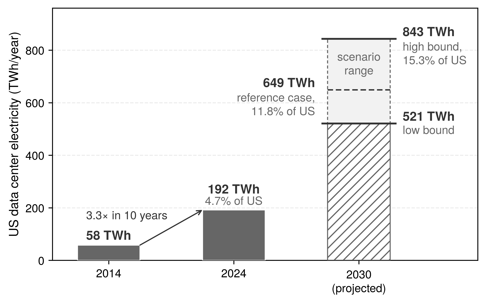
Каждый киловатт-час из этих национальных итогов начинается как электроэнергия, доставленная в стойку, и покидает её в виде тепла, которое необходимо отвести. Подача 120 kW на одну стойку (номинальное потребление одной стойки GB200 NVL72) начинается с подстанции, и каждая ступень преобразования между энергосистемой и чипом забирает свою долю по пути.
15.6.2 Доставка энергии
Планирование мощности проваливается, когда инженеры закладывают в бюджет только TDP ускорителей, потому что трансформаторы, источники бесперебойного питания, распределение по стойкам и стабилизаторы напряжения — каждый из которых рассеивает часть поступающей мощности сети в виде тепла ещё до того, как хоть один ватт достигнет кремния. Энергетические и тепловые лимиты проследил этот электрический путь от сетевого ввода до стабилизатора напряжения, а Уравнение 2 измеряет накладные расходы центра обработки данных вдоль него. Для расчёта устойчивости вопрос в том, где на этом пути теряются энергия и запас надёжности и какая граница отвечает за каждую потерю. Первое ограничение находится вне здания: крупным МЛ-объектам, питаемым от сети, необходима достаточная мощность подстанции и подключения к энергосистеме. Внутренние улучшения распределения не могут поднять этот лимит импорта, а собственная генерация или накопители добавляют отдельный источник, чья мощность, продолжительность и надёжность должны быть учтены в проекте.
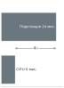
Срок ввода подстанции может быть 4× больше срока закупки GPU.
Системный взгляд 15.2: Очередь на подключение
Развёртывание 10,000 GPUs и развёртывание электрической подстанции, необходимой для питания их ИТ-нагрузки (9.6 MW, после того как подытог 7 MW по GPU расширен с учётом мощности поддержки стойки) — процессы на разных временных шкалах. В этом планировочном сравнении закупка GPU занимает 6 months, тогда как разрешение, проектирование, закупка, строительство и подключение к сети новой подстанции на 10+ МВт занимают 24 months. Инфраструктурный путь поэтому 4× длиннее пути ускорителя. Реальные графики зависят от площадки, энергокомпании, доступности оборудования и согласований, так что отношение иллюстрирует зависимость, а не универсальный срок.
Системный вывод: в этом сравнении доставка энергии определяет, когда парк сможет начать полезную работу, даже если ускорители придут по графику. Американская очередь на подключение генерации и накопителей отличается от запроса дата-центра на подключение нагрузки; ни одна из очередей напрямую не измеряет доступную мощность для нового МЛ-объекта. Поэтому закупки должны следовать зависящему от площадки графику доставки энергии. Иначе доставленный кремний может остаться «электрически отрезанным», пока объект ждёт подключения или трансформатора.
Внутри объекта каждая ступень преобразования превращает часть доставленной мощности в тепло. Вдоль пути, прослеженного в Энергетические и тепловые лимиты (Рисунок 12), сетевой трансформатор теряет около 1–2 percent, ИБП двойного преобразования — 3–5 percent (или 1–2 percent в экономичном режиме), блок распределения питания (PDU) — 2–3 percent, а стабилизация напряжения на плате — 5–8 percent. В сумме эти ступени рассеивают примерно 9–17 percent мощности сети до того, как она достигнет транзистора, а серверные блоки питания добавляют собственную потерю преобразования сверху. Граница учёта решает, где появляется каждая потеря. Потери выше ИТ-границы, например трансформатора, ИБП и распределения по объекту, повышают PUE. Серверные блоки питания и стабилизаторы напряжения на плате находятся внутри измеряемой ИТ-нагрузки, и их тепло должно отводиться той же системой охлаждения, что обслуживает ускорители.
Распределение при более высоком напряжении — одно из немногих проектных изменений, напрямую уменьшающих эти накладные расходы, потому что та же мощность при более высоком напряжении требует меньшего тока, а резистивные потери в распределении
При плотностях мощности МЛ-стоек разница между эффективностью распределения 95 percent и 98 percent существенна. Используя 33 kW как референсную нагрузку стойки, оценка первого порядка применяет разницу этих эффективностей как 3 percent этой нагрузки, давая примерно 0.99 kW на стойку. По 300 стойкам оценочное снижение составляет 297 kW, что эквивалентно примерно 36 GPU-узлам или 9 четырёхузловым стойкам при таком распределении мощности. Поддержание этого снижения в течение 3-летнего жизненного цикла при $0.07/kWh даёт оценочную экономию электроэнергии ~$546,361. Точное сравнение при фиксированной нагрузке делит доставленную мощность на каждую эффективность, а затем вычитает входные мощности. Освободившаяся мощность может поддержать больше работы или снизить потребление; трата её на дополнительные узлы не сохраняет ту же экономию электроэнергии.
Стойка определяет лимит энергопотребления стойки из четырёх узлов DGX H100; та же стойка показывает, какие части бюджета относятся к ИТ-нагрузке, а какие — к накладным расходам ЦОД. Бюджет мощности, отнесённый к стойке, детализирует больше, чем только TDP GPU (Таблица 7). В этом сценарии хосты, fabric и потери преобразования на стороне оборудования относятся к ИТ-нагрузке и в сумме дают ИТ-подытог; строка под ним — иллюстративное распределение не-ИТ расходов при указанном PUE. Расчёт ЦОД умножает ИТ-подытог на собственный PUE здания, а не переиспользует это распределение, а потери преобразования на стороне ЦОД покрываются PUE и не должны добавляться повторно.
| Компонент | Мощность (кВт) | % от итога стойки |
|---|---|---|
| Вычисления GPU | 22.4 kW | 67% |
| Процессоры и DRAM хостов | 3.2 kW | 10% |
| Fabric NVSwitch | 1.6 kW | 5% |
| HCAs InfiniBand | 0.8 kW | 2% |
| Потери преобразования в ИТ-оборудовании | 2.8 kW | 8% |
| ИТ-подытог | 30.8 kW | |
| Распределённые не-ИТ накладные расходы (PUE ~1.09) | 2.7 kW | 8% |
| Итого | 33.5 kW | 100% |
Оценка распределения мощности DGX H100 (Таблица 7) показывает, что 32 GPU по 700 W каждый дают 22.4 kW. Однако хосты, fabric и потери преобразования поднимают ИТ-подытог до 30.8 kW — примерно на 38 percent выше подытога GPU. Именно этот ИТ-подытог умножается на PUE здания; последняя строка таблицы — одно из таких распределений, которое доводит итог, отнесённый к стойке, до величины примерно на 50 percent выше подытога GPU. Планировщики инфраструктуры, которые рассчитывают мощность здания только по TDP GPU, недооценят электрическую нагрузку и могут обнаружить при вводе в эксплуатацию, что энергетической мощности недостаточно.
Синхронизированное обучение также меняет форму нагрузки. Коррелированные скачки мощности, введённые вместе с динамикой сети (Глава 15.3.2), теперь проявляются внутри цепочки электропитания, где согласованные фазы вычислений и коммуникаций совпадают на тысячах ускорителей. Сети подвода энергии и переходная динамика анализирует, как развязывающие конденсаторы, стабилизаторы напряжения и контроллеры ИБП фильтруют эти синхронные переходные процессы до того, как они достигнут подключения к электросети. Тот же раздел оценивает совокупную скорость нарастания, в гигаваттах в секунду, когда обучающий кластер единовременно переходит от коммуникации к вычислениям. Эта оценка описывает сценарий со стороны нагрузки, а не измеренный вход от энергосистемы, и её последствие для устойчивости проявляется в точке присоединения. Буферизация энергии на уровне стойки или ЦОД (Глава 15.3.2), рассчитанная по измеренному дефициту энергии — энергии, которую ступень потребляет сверх того, что поставляет подключение к сети за время нарастания, а не по фиксированной норме на стойку, — позволяет электросети видеть более гладкую нагрузку. Хорошо охарактеризованная управляемая нагрузка проще и для присоединения, и для планирования с учётом состояния сети.
Контрольная точка 15.3: Физика доставки питания
Проверьте путь электропитания ЦОД:
В самых крупных масштабах энергопотребление ЦОД составляет значительную долю ёмкости местной электросети. Кластер на 100,000 GPU — примерно в сто раз больше эталонного кластера книги на 1,024 GPU — при 700 W на GPU имеет подытог ускорителей 70 MW. Однако мощность поддержки из профиля стойки поднимает ИТ-нагрузку до 96.2 MW до учёта PUE. С PUE общее потребление здания приближается к 107.8 MW — это нагрузка небольшого города. Такие объекты требуют выделенных присоединений к электросети, часто со специально построенными подстанциями и линиями передачи. Срок строительства подстанции 24 months из рассмотренного выше перспективы очереди на присоединение делает доступность мощности одним из самых долгих по срокам ограничений при строительстве ML-инфраструктуры.
В масштабе крупного кластера то же ограничение доставки превращается из счёта за электричество в проблему закупки мощности у сети. Проблема усугубляется тем, что вычислительно-оптимальное распределение ресурсов (Вычислительно-оптимальное распределение ресурсов) наращивает число параметров и обучающих токенов совместно, поэтому объём обучения, масштабирующийся с их произведением, растёт примерно как квадрат размера модели, и энергопотребление следует за ним, если только реализованные FLOPs на джоуль не улучшатся.
Электричество, потреблённое одной кампанией обучения крупной модели, может стать существенным по сравнению с выработкой электростанции. Обучающий объект на 100 MW, работающий на полной мощности в течение года, потребляет 876 GWh. Ветропарк на 100 MW не может сравниться с этой цифрой (при коэффициенте использования установленной мощности 30 percent — доле номинальной выработки, которую он выдаёт в среднем, — ветропарк производит около 262.8 GWh в год, поэтому обучающему объекту потребовался бы эквивалент примерно 3.3 крупных ветропарков). После того как мощность получена, её углеродная интенсивность определяет выбросы, отнесённые к каждому мегаватт-часу при выбранном методе учёта, и в масштабе здания этот фактор становится решением о размещении, действующим весь срок службы постройки. Электроэнергия с низким углеродным следом может совпадать с выгодными ценами, но цена и эмиссионный фактор — отдельные критерии, которые сравнение площадок должно оценивать наряду с доступностью мощности и ограничениями на расположение рабочей нагрузки.
15.6.3 Энергия на охлаждение, отвод тепла и вода
Почти каждый ватт электрической мощности, поступающий в серверную стойку, покидает её в виде тепла, поэтому плотная стойка ведёт себя как непрерывный обогреватель, тепловыделение которого должно отводиться с той же скоростью, с какой он потребляет электричество, иначе кремний уходит в троттлинг и отключается. Класс охлаждения и отвод тепла описала, как воздушные и жидкостные контуры переносят это тепло и какой класс охлаждения требуется данной плотности стойки; для учёта устойчивости вопрос в том, во что обходится отвод этого тепла во внешнюю среду в дополнительном электричестве здания и местной воде.
PUE (Уравнение 2) учитывает вентиляторы, чиллеры и потери преобразования на стороне здания как накладные расходы поверх ИТ-нагрузки. Если охлаждение здания потребляет 3–8 процентов ИТ-мощности, один этот вклад добавляет 0,03–0,08 к PUE, а электрические потери на стороне здания и другие не-ИТ нагрузки добавляются к нему. Вентиляторы серверов, напротив, лежат внутри самой ИТ-нагрузки, поэтому их энергия сидит и в знаменателе, и в общем итоге здания, и снижение мощности серверных вентиляторов меняет ИТ-нагрузку, а не даёт то же снижение PUE. Поэтому варианты охлаждения следует сравнивать по полному потреблению здания при одинаковой полезной работе, а не только по PUE.
Класс охлаждения из Класс охлаждения и отвод тепла определяет термодинамическую осуществимость: поддерживает ли выбранная охлаждающая среда температуры кристаллов и ремонтопригодность компонентов при пиковой нагрузке. Затем экономика жизненного цикла сравнивает капитальные затраты на установку, паразитное потребление насосов и вентиляторов, расход воды, накладные расходы на обслуживание и срок службы оборудования при одинаковой вычислительной нагрузке. Более плотная жидкостная установка может снизить операционное энергопотребление, но её срок окупаемости капитальных вложений нельзя вывести из одной лишь мощности стойки.
Инженерный расчёт 15.7: Накладные расходы на охлаждение
Рассмотрим кластер из 1,024 GPU H100 по 700 W каждый. Чтобы изолировать выбор охлаждения, этот упрощённый расчёт трактует мощность ускорителей как всю ИТ-нагрузку и относит все не-ИТ накладные расходы на охлаждение; закупочная оценка должна восстановить поддержку хостов, памяти, сети и хранилища до применения PUE.
- ИТ-мощность: 1,024
700 W = 716.8 kW - Снимаемая нагрузка: при арифметике накладных расходов
из ноутбука 15.3 переход от воздушного охлаждения (PUE 1.55) к жидкостному (PUE 1.08) устраняет 716.8 kW 0.47 = 336.9 kW постоянной мощности.
Экономия: при $0.07/kWh годовая экономия составляет примерно $206,585. За 3-year жизненного цикла оборудования одна лишь экономия на охлаждении суммарно даёт $619,754 — эту цифру следует сопоставить с установленной капитальной стоимостью системы жидкостного охлаждения при расчёте срока её окупаемости.
Последнее звено в цепочке охлаждения — отвод тепла: передача тепла из водяного контура объекта во внешнюю среду. Башенная система охлаждения распыляет тёплую воду по насыпной среде — насадке, которая растекает воду тонкими плёнками, увеличивая её контакт с воздухом, и использует испарение, чтобы уносить тепло в атмосферу. Испарение килограмма воды забирает её скрытую теплоту парообразования, 2,260 кДж/кг. Нагрев воды без испарения, называемый чувственным (явным) нагревом, зависит вместо этого и от удельной теплоёмкости, 4.18 кДж/кг/К, и от допустимого подъёма температуры. Поэтому испарение может переносить значительное тепло при малом массовом расходе, но испарённую воду необходимо восполнять.
Дата-центр мощностью 10 MW с испарительными башнями охлаждения может потреблять заметно более 100 миллионов литров воды в год в зависимости от климата и конструкции охлаждения, что стало серьёзной проблемой в регионах с дефицитом воды. При упомянутом ранее испарительном WUE 1.8 л/кВт·ч непрерывная работа потребляет около 158 миллионов литров в год — примерно 350–415 «домохозяйств-лет» потребления воды относительно принятого ранее годового уровня на домохозяйство. По мере роста ML-дата-центров до 100 MW и выше их водный след становится существенным фактором местного планирования ресурсов.
Сухие охладители продувают воздух вентиляторами через радиатор, не испаряя охлаждающую воду. Они избегают прямого расхода воды, но дополнительное электричество для вентиляторов несёт собственный водный след на электростанции — в ином водосборном бассейне, чем объект (Рисунок 10). Отвод тепла зависит от разницы температур между хладагентом и окружающим воздухом, поэтому жаркая погода может снизить мощность или потребовать большей мощности вентиляторов. Гибридные конструкции используют сухое охлаждение, когда позволяют условия, и испарительную помощь при необходимости, обменивая расход воды на электрическую нагрузку и тепловой запас.
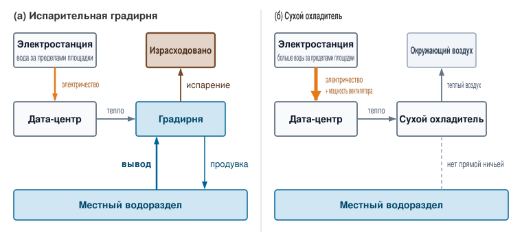
Повторное использование сбросового тепла рассматривает тепловой выход как ресурс. Подключение к теплосети снабжает муниципальную тепловую сеть, а промышленное сопряжение направляет извлекаемое тепло в совместимый процесс. Выгода зависит от температуры, момента времени и расстояния до принимающего спроса, а также от энергии на перекачку или теплового насоса, необходимой для подачи. Полезная утилизация может заместить другой источник тепла, хотя и не устраняет электрическое потребление парка14 (Ebrahimi и др. 2014 г.). Контур жидкостного охлаждения, возвращающий воду при 50–65 градусах Цельсия, даёт низкопотенциальное тепло, пригодное для ближайших теплосетей, теплиц или иных подходящих потребителей. Пригодность определяется требуемой температурой подачи, сезонным спросом и потерями при транспортировке. Поскольку муниципальные тепловые сети часто требуют температуру подачи выше 70 градусов Цельсия, объекту может понадобиться электрический тепловой насос, чтобы поднять температуру хладагента перед подачей. Если иллюстративный тепловой поток 10 МВт имеет долю утилизации 80–90 процентов, то до учёта электричества теплового насоса извлекается 8–9 МВт. Выход теплового насоса включает эту электрическую мощность и должен учитываться отдельно.
Зачёт полезного тепла не снижает PUE ниже 1.0, поскольку PUE сравнивает полное электрическое потребление объекта с электрическим потреблением IT, а экспорт тепла наружу не уменьшает электричество, которое здание берёт из сети. Экспортированное тепло вместо этого отражается через показатель эффективности повторного использования энергии (ERE), который вычитает повторно используемую энергию из полной энергии объекта до деления на IT-энергию, либо через отдельный баланс чистой энергии.
Жизнеспособность повторного использования сбросового тепла зависит от близости потребителей тепла. Городские дата-центры, несмотря на более высокую стоимость земли и электричества, часто лучше расположены для повторного использования тепла, чем удалённые объекты, поскольку находятся рядом с жилой и коммерческой тепловой нагрузкой. Возникает контринтуитивная экономическая оптимизация: дата-центр в скандинавском городе может иметь более высокую стоимость электричества, но более низкие чистые операционные расходы после доходов от продажи тепла — по сравнению с удалённым объектом, где электричество дешевле, но рядом нет потребителей тепла.
Сбой охлаждения также стоит энергии, поскольку запуск повторяет работу, выполненную с последней контрольной точки. Повторный прогон от 30 до 60 минут на всех 10,000 ускорителях обучающего кластера при номинальной мощности повторяет около 3.5–7 MWh энергии ускорителей — до накладных расходов хоста и объекта. Мощность, потребляемая простаивающими ускорителями во время простоя, добавляется к этой сумме. ML-goodput, учитывающий только полезную выдачу парка, дисконтирует повторённую работу, но за энергию всё равно приходится платить. В Надёжность и экологический контроль на уровне объекта разбираются режимы отказа охлаждения и их радиус поражения, а в Контрольные точки и сохранение прогресса — восстановление с контрольных точек, ограничивающее откат. Вместе потери при доставке электроэнергии и отвод тепла задают накладные расходы объекта на каждый киловатт-час, входящий в здание; то, как этот энергетический бюджет делится между разовым обучением модели и непрерывным производственным инференсом, определяет, на чём далее сосредоточить оптимизацию уровня рабочей нагрузки.
↩︎ ML-goodput — доля выдачи парка, считающаяся полезной работой, — вводится в Полезная производительность систем машинного обучения.
15.7 Энергетический анализ: обучение против инференса
Обучение большой языковой модели — концентрированное и весьма заметное энергетическое событие, потребляющее тысячи мегаватт-часов в течение недель или месяцев. Обслуживание той же модели для миллиарда ежедневных запросов — нагрузка противоположной формы: энергия тратится непрерывно, запрос за запросом, год за годом.
Обучение и инференс разделяют возможности сокращения вычислений, перемещения данных и мощности в простое, но их критерии успеха различаются. Обучение должно достичь целевого качества модели в рамках бюджета на завершение; инференс должен обслуживать требуемый спрос при согласованных качестве и задержке. Энергетический баланс жизненного цикла выявляет, какая фаза вносит наибольший вклад, а эти ограничения определяют, какие вмешательства могут снизить её стоимость, не жертвуя полезной работой.
15.7.1 Углеродные бенчмарки для рабочих нагрузок ИИ
Две опубликованные оценки выбросов углерода для одного и того же поиска нейроархитектур — автоматизированного поиска, обучающего множество архитектур-кандидатов ради нахождения хорошей, — могут различаться на порядки, если одна предполагает старые GPU, средний PUE объекта и энергосистему с высокой долей ископаемого топлива (Strubell и др. 2019 г.), а другая измеряет специализированные ускорители в эффективном низкоуглеродном объекте (Patterson и др. 2021 г.).15 Хотя приведённая ранее оценка МЭА оценивает выбросы от электричества дата-центров в около 180 Mt, ниже 1.5 percent суммарных выбросов энергетического сектора, углеродные бенчмарки уровня рабочей нагрузки определяют, куда инженерные команды вкладывают усилия по оптимизации, а надёжность этих бенчмарков равна надёжности лежащих за ними границ жизненного цикла.
Расчёт GPT-3 в ноутбуке 15.1 поставил один обучающий прогон в сотни трансатлантических пассажирских рейсов туда и обратно. Подобные сравнения уровня прогона передают масштаб, но сами по себе не описывают след развёрнутого сервиса. Операционный урок: углеродный учёт должен различать обучение и регулярный инференс за объявленный период наблюдения. Рекомендательные нагрузки Meta (RM-1 — RM-5) делят операционные выбросы примерно поровну между обучением и инференсом, тогда как в примере с языковой моделью доминирует инференс (Рисунок 11). Публичные базовые линии, включая GPT-3 и BERT-NAS, отчитываются только об обучении; их столбцы не устанавливают пожизненного соотношения обучения и инференса. Для высоконагруженных развёртываний архетипа B (Архетип B (DLRM в масштабе)) в баланс до решения о том, какая фаза даёт большее сокращение, должны входить и регулярное обслуживание, и обновления модели.
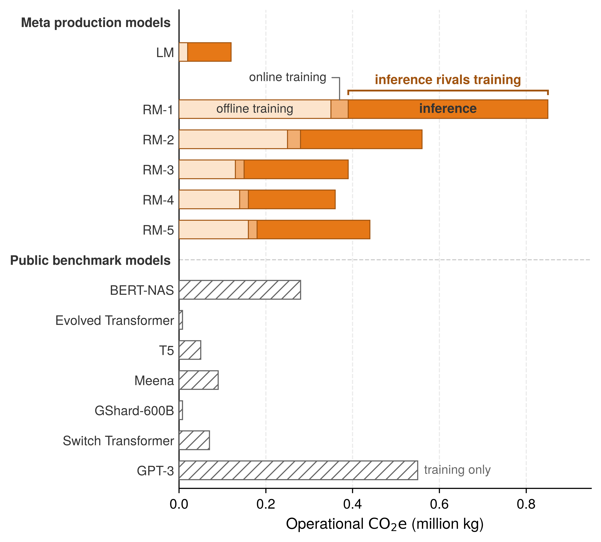
15.7.2 Энергопотребление обучения
Даже столбцы, отражающие только обучение, в приведённом выше сравнении представляют собой масштабные и концентрированные энергетические события: ещё в 2020 году суперкомпьютер, построенный Microsoft для OpenAI, объединял 285 000 ядер CPU и 10,000 GPU (Langston 2020 г.), работавших непрерывно месяцами, — устаревшая точка отсчёта, которую последующие кластеры переднего края многократно превзошли. Эти интенсивные вычислительные нагрузки выделяют тепло, которое инфраструктура охлаждения должна непрерывно отводить; накладные расходы центра обработки данных количественно оценены в Глава 15.6.3, а снижение энергопотребления требует совместной оптимизации архитектуры оборудования, стратегии параллелизма и алгоритмической эффективности.
Каждый приведённый в этой главе расчёт одиночного прогона обучения — от прогона GPT-3 до модели 70B из тетради 15.6 — оценивает только победившую конфигурацию. Разработка умножает каждый прогон: на 5× для перебора в Глава 15.5.2, а периодическое переобучение во время эксплуатации повторяет часть этих затрат. Энергия обучения выплачивается однократно за завершённый прогон, но повторяется на протяжении цикла разработки и обновления модели.
Оптимизация энергопотребления распределённых систем
Распределение задачи обучения по ускорителям добавляет к энергии, затраченной на вычисления, издержки координации. Стратегии распределённого параллелизма обмениваются градиентами, параметрами или активациями, а простои на синхронизации оставляют ускорители без работы, но потребляющими базовую мощность.16 Долю энергии, приходящуюся на этот обмен, нельзя вывести из одного лишь размера кластера: счёт определяют топология, коллективный алгоритм, объём сообщений, перекрытие и утилизация. Некоторые шаблоны AllToAll также наращивают трафик быстрее, чем суммарную полезную работу, по мере роста числа участников.
↩︎ Выбор стратегии параллелизма и стоимость обмена для каждой стратегии установлены в Выбор стратегии параллелизма и инженерные компромиссы.
Закон парка (Уравнение (3)) превращает эти накладные расходы в энергетический счёт. Если парк потребляет среднюю мощность
Вычислительный член отвечает за локальную математическую работу; обмен и синхронизация делают распределённое обновление возможным. Пока эти издержки остаются открытыми, они удлиняют шаг, тогда как ускорители, хосты и сеть продолжают потреблять мощность, добавляя время под нагрузкой на осях обмена и координации в C³. Их доля в энергии зависит как от мощности в этих интервалах, так и от их длительности. Четверть шага, потраченная на неперекрытый обмен, составляет четверть энергии лишь в том случае, если средняя мощность парка в этом интервале равна средней мощности за весь шаг. Ускорители, простаивающие на коллективной операции, могут потреблять меньше, чем при полной арифметической нагрузке, поэтому долю следует считывать из трассировки мощности. Перекрытие, меньшие сообщения и меньшее число отстающих узлов сокращают шаг, и они экономят энергию в той мере, в какой сокращённый интервал под нагрузкой не компенсируется более высокой средней мощностью или дополнительной работой для достижения того же качества модели. Поэтому выбор параллелизма в Распределённое обучение является также выбором в пользу устойчивости.
↩︎ Границы перемещения данных, определяющие стоимость каждого переданного байта — от внутрипакетных линков через внутриузловые кроссбары до межузловых коммутаторов, — установлены в Физика перемещения данных.
Помимо члена обмена, скоординированное управление ресурсами предлагает четыре рычага с различным воздействием на энергию и выбросы. На уровне кластера динамическое размещение рабочих нагрузок консолидирует совместимые задачи, чтобы неиспользуемое оборудование могло переходить в состояния пониженного энергопотребления. Экономию необходимо проверять по счётчику центра обработки данных, а не выводить из числа простаивающих узлов. Планирование с учётом углерода (Глава 15.9.4) смещает гибкие прогоны в более чистые окна энергосети, даже если суммарное энергопотребление не меняется, — с учётом накладных расходов на перемещение данных, сроков завершения и ограничений надёжности. Внутри активных узлов мультитенантное разделение повышает занятость вычислений и памяти ускорителя между параллельными задачами, хотя конкуренция за ресурсы может удлинить выполнение и увеличить энергию на завершённую задачу. Адаптивное формирование батчей при инференсе группирует совместимые запросы, чтобы повысить пропускную способность в пределах их ограничений задержки. Изменение же размера батча при обучении требует проверки суммарной работы, необходимой для достижения целевого качества модели. Поэтому каждый рычаг следует оценивать по завершённой полезной работе и её сервисным ограничениям, а не по одной лишь занятости, поскольку энергия, потраченная на работу, которую дисконтирует ML-goodput, — потери планирования, среды исполнения и программы из Полезная производительность систем машинного обучения, — всё равно входит в энергетический счёт.
Энергоэффективные фреймворки обучения сокращают энергию шага напрямую, а не перераспределяют её расход. Zeus повысил энергоэффективность обучения на 15,3–75,8 процента на оценённых рабочих нагрузках, автоматически находя компромиссы между энергией и производительностью (You и др. 2023 г.), а Perseus снизил энергопотребление при обучении больших моделей до 30 процентов, устраняя «энергетическое раздувание» — энергию, затраченную на работу ускорителей на полной скорости над работой, которая затем должна ждать более медленной стадии конвейера или отстающего узла (Chung и др. 2023 г.). Эти инструменты делают оптимизацию энергии доступной за пределами гиперскоростных компаний, однако все эти затраты на обучение прекращают накапливаться с окончанием прогона. Для сервисов с большим объёмом бóльшим слагаемым часто оказывается следующее за этим развёртывание, как показывает расчёт точки пересечения в Глава 15.7.3.
15.7.3 Энергозатраты инференса
Модель, обученная однократно, может за год высоконагруженного обслуживания потребить значительно больше электроэнергии, чем за всё обучение (Wu и др. 2022 г.). Хотя один запрос инференса стоит лишь долю ватт-часа, обслуживание выполняется при каждом ответе модели на запрос, классификации изображения или оценке рекомендации, непрерывно масштабируясь с трафиком пользователей в поисковых системах, рекомендательных системах и генеративных сервисах ИИ.
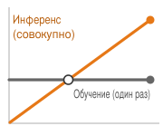
Накопленные выбросы от инференса превышают однократную стоимость обучения.
Рассмотрим модель, обслуживающую 10 million запросов в день при 0.001 kWh отнесённой к запросу электроэнергии центра обработки данных, включая её долю простаивающих мощностей и вспомогательных систем. При такой скорости обслуживания суточное энергопотребление достигает 10,000 kWh (10 million запросов
При таком масштабе накопленные выбросы от инференса превышают 5.7 t более раннего примера обучения 7B/64-A100 — наименьшего из трёх учебных расчётов в этой главе и потому самого быстрого для обгона — примерно через 1.3 days развёртывания. Сценарий обслуживания и прогон обучения описывают разные модели, поэтому это сравнение не отслеживает жизненный цикл одной модели. Оно показывает, насколько быстро такой объём обслуживания обогнал бы прогон обучения такого размера. Для более крупных прогонов обучения точка пересечения может сместиться на недели или месяцы в зависимости от объёма запросов, энергии на запрос и углеродной интенсивности сети. Поэтому взгляд на жизненный цикл задаёт приоритеты: оптимизировать эффективность инференса для широко развёрнутых моделей, а усилия по эффективности обучения сосредоточить на моделях, которые проходят частое переобучение или экспериментальную итерацию.
Производственные измерения в Рисунок 11 показывают, почему эта точка пересечения должна оставаться привязанной к рабочей нагрузке. Для языковых моделей инференс доминирует в счёте, тогда как для рекомендательных систем обучение и инференс вносят примерно равный вклад. Одни лишь FLOPs обучения упускают затраты на обслуживание, но доминирующую фазу следует устанавливать по измеренной рабочей нагрузке сервиса и периоду наблюдения.
Рабочие нагрузки инференса, как и другие программные сервисы, масштабируются со спросом. Постоянно доступный сервис потребляет энергию как при обработке запросов, так и при поддержании ёмкости для ожидаемых задержки и доступности. Учёт устойчивости должен включать объём запросов, состав рабочей нагрузки и простаивающие зарезервированные ресурсы.
Производственное измерение показывает, насколько велик этот счёт. Google инструментировала парк, обслуживающий её ассистент Gemini, и в мае 2025 года отнесла энергию к медианному текстовому запросу по каждому компоненту стека обслуживания (Elsworth и др. 2025 г.). Полноконтурная оценка составляет 0.24 Wh на запрос (Рисунок 12), из которой активные ускорители составляют лишь за 58 percent. Хост-процессоры и память, питающие их, добавляют 25 percent, а простаивающие машины, удерживаемые ради задержки и доступности, вместе с накладными расходами центра обработки данных добавляют ещё 17 percent. Если учитывать только активные ускорители на наиболее эффективно используемых машинах — границу, которую применяют многие опубликованные оценки, — получится 0.10 Wh, занижение той же рабочей нагрузки в 2.4×. Эта оценка падает даже ниже доли ускорителей в полноконтурной сумме, потому что полный контур усредняет по всем обслуживающим машинам, включая работающие с меньшей утилизацией, тогда как узкая граница оставляет только наилучшим образом используемые. Измеренный запрос также составляет около четверти от 1 Wh на запрос, принятых в разобранном выше примере, — напоминание, что энергия на запрос является свойством конкретной модели, стека обслуживания и утилизации, а не константой. То же исследование сообщает, что программные улучшения и утилизация сократили энергию медианного запроса в 33× за один год, так что оценка на запрос также несёт дату.
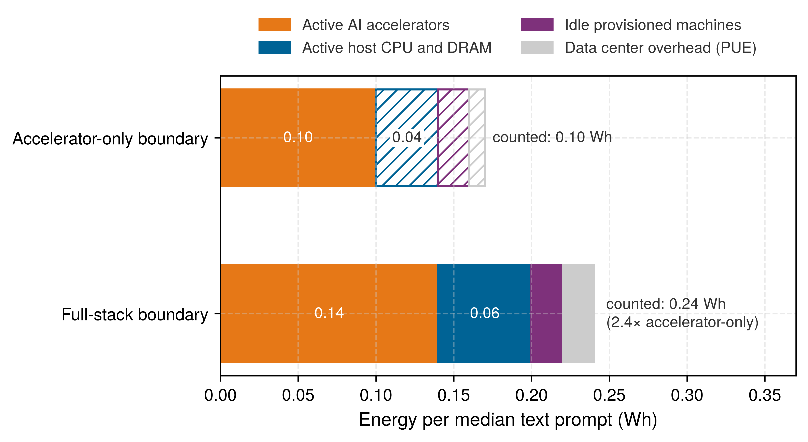
Контрольная точка 15.4: Переключение обучения и инференса
Рассмотрим модель компьютерного зрения, обучение которой требует 2 000 GPU-часов при средней потребляемой мощности ускорителя 300 Вт. После развёртывания модель обслуживает 1 млн запросов в день в течение 730 дней, причём каждый запрос занимает ускоритель на 50 мс при средней потребляемой мощности 100 Вт. Предположим, что запросы не пересекаются на одном ускорителе. Этот учёт только активной работы исключает простой оборудования, хост-системы, сеть и накладные расходы дата-центра.
Энергетическая неэффективность фазы декодирования
Prefill и декодирование нагружают разные пути памяти и арифметики, поэтому осмысленные энергетические сравнения требуют объявленной рабочей нагрузки обслуживания. Prefill распределяет загруженные веса по всем позициям промпта одновременно, тогда как каждая авторегрессионная итерация декодирования переиспользует веса только по активным слотам батча последовательности, выдавая по одному токену за раз (Рисунок 13). Размер батча, длина контекста, точность и целевая задержка определяют, что именно ограничивает достигнутую утилизацию — пропускная способность памяти или арифметическое исполнение.
↩︎ Почему декодирование с малым батчем ограничено пропускной способностью памяти и как формирование батчей переиспользует каждую загрузку весов, изложено в Формирование батчей в разных архитектурах моделей.
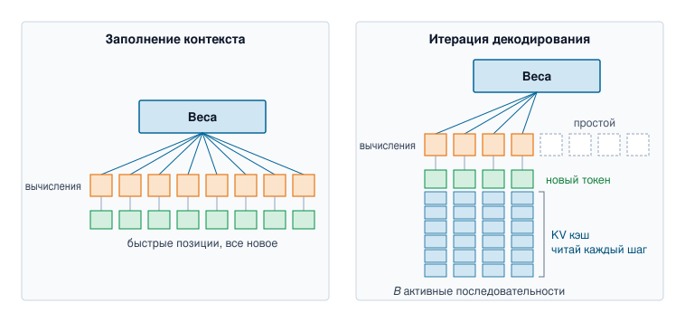
Это разделение потоков данных управляет энергией на токен через перемещение данных и арифметическую интенсивность. Во время prefill параллельные матричные операции переиспользуют веса по позициям промпта и могут достигать высокой утилизации вычислений, когда рабочая нагрузка предоставляет достаточно параллельной работы. Во время декодирования каждая итерация выдаёт один токен на активную последовательность, обращаясь к параметрам модели и растущему KV-кэшу. При малых батчах этот трафик может оставлять арифметические блоки недозагруженными; формирование батчей улучшает повторное использование весов с учётом ограничений ёмкости памяти и задержки.
Энергетическая модель «крыши» из Глава 15.4.2.3 выражает эту недозагрузку числом. При размере батча один каждый шаг декодирования читает каждый вес FP16 (2 байт), чтобы выполнить с ним два FLOP, что даёт арифметическую интенсивность 1 FLOP/байт против энергетического кроссовера 16 FLOP/байт (Уравнение 7). При коэффициентах, принятых в модели этой главы, перемещение байтов каждого параметра из DRAM стоит 320 пДж, тогда как арифметика над ним — 20 пДж. Поэтому перемещение дороже арифметики в 16× и составляет около 94 percent модельной динамической энергии на сгенерированный токен — ещё до учёта какого-либо трафика KV-кэша. Этот коэффициент — значение off-package DRAM из таблицы; высокопропускная память, питающая ускоритель, стоит меньше на байт (Энергетическая стоимость перемещения данных), что сужает отношение, не меняя его знак при батче один. Формирование батчей из
Потери статической мощности возникают, когда запитанные цепи простаивают, а не производят полезный выход. Сокращение такого ожидания может улучшить энергоэффективность, но сравнение должно измерять одну и ту же границу аппаратуры и сохранять качество выхода, контекст, задержку и нагрузку обслуживания. Обработка промпта и авторегрессионная генерация выполняют разную работу; равное число токенов само по себе не устанавливает справедливого энергетического отношения.
15.7.4 Исполнение на периферии и энергетический учёт парка
Перенос инференса из облачного дата-центра на миллиард телефонов или автомобилей не исчезает затраты энергии; он смещает потребление в батареи устройств, локальный нагрев и производство самих устройств. Периферийный интеллект (edge intelligence) запускает модели на устройствах пользователя или близлежащих вычислительных узлах, избегая передачи необработанных входных данных в центральный объект, но добавляя или расширяя вычисления на периферии. Локальная обработка и duty cycling снижают суммарную энергию только тогда, когда избегаемые коммуникации и удалённая работа превышают добавленные вычисления устройства и его потребление в простое. Производство устройства присоединяется к этой добавленной стоимости, когда развёртывание требует нового аппаратного обеспечения. Его воплощённый углерод распределяется на работу, которую обслуживает устройство (Глава 15.5.5), поэтому редко используемое устройство может нести больше производственного углерода на инференс, чем выбросы от передач, которых избегает локальное исполнение. Сравнение фиксирует качество задачи и доступность сервиса.
↩︎ Бюджеты мощности, памяти и вычислений периферийных устройств и то, как обучение на устройстве их усугубляет, изложены в Проектные ограничения.
В автономных автомобилях критичные по времени восприятие и управление должны соблюдать сроки отклика при переменной сетевой связности, поэтому бортовые вычисления остаются частью операционного бюджета. Sudhakar и др. (2023 г.) моделируют потенциальные выбросы широко развёрнутого парка автономных автомобилей, показывая, как мощность устройств и время работы могут накапливаться в глобальном масштабе; их сравнение касается сценариев на уровне парка, а не утверждения, что каждый автомобиль потребляет столько же энергии, сколько дата-центр.
Смартфоны, носимые устройства и датчики подчиняются тому же учёту. Суммарная эксплуатационная энергия зависит от числа устройств, их состояний питания и времени, проведённого в каждом состоянии, поэтому небольшой средний расход на устройство всё равно может давать большой итог по парку. Отнесение этого итога к ИИ требует отделения дополнительной рабочей нагрузки от прочих функций устройства. Бюджеты мощности устройств ограничивают и локальный инференс, и обучение, поэтому сравнение должно также учитывать duty cycling, избирательную эскалацию в облако, а также повторные вычисления и передачи моделей, которых требует федеративное обучение.
Бюджеты мощности периферии и мобильных устройств
Периферийные устройства работают в пределах ограничений батареи, нагрева и питания, отличающихся от ограничений ускорителей дата-центра. Эти ограничения следуют из развёртывания, а не из набора инструкций процессора. Инженерный выбор состоит в том, чтобы сопоставить каждую рабочую нагрузку инференса устройству, удовлетворяющему требованиям задержки и точности в пределах его устойчивых бюджетов мощности и энергии.
Бюджеты мощности отражают физические ограничения ёмкости батареи, рассеивания тепла и среды развёртывания. Эти ограничения проявляются по-разному в категориях бюджетов мощности периферийного ИИ, от микроконтроллеров до автомобилей (Таблица 8). Устройства TinyML (микроконтроллеры, запускающие малые модели в килобайтах памяти) должны укладывать средний спрос в целевые показатели срока службы батареи или energy harvesting, поддерживая при этом пиковое потребление. Мобильные устройства должны балансировать пользовательский опыт со сроком службы батареи, а автомобильные системы сталкиваются с тепловыми ограничениями в замкнутом салоне, несмотря на доступ к питанию автомобиля.
| Категория платформы | Мощность в простое | Активная мощность | Пиковая мощность | Примеры устройств |
|---|---|---|---|---|
| TinyML (MCU) | 1–100 |
1–50 mW | 100 mW | Arduino Nano 33, STM32H7, Nordic nRF5340 |
| Мобильный NPU | 10–100 mW | 0.5–5 W | 10 W | Pixel Tensor, Apple Neural Engine, Snapdragon NPU |
| Периферийный GPU/TPU | 1–5 W | 5–30 W | 75 W | NVIDIA Jetson Orin NX (10–25 W) и AGX Orin (15–60 W), Google Edge TPU, RPi AI Kit |
| Автономный автомобиль | 10–50 W | 50–200 W | 500 W | Tesla FSD Computer, Mobileye EyeQ, NVIDIA Drive |
Динамика состояний питания TinyML
Устройства TinyML — самые малые члены периферийных парков, они сидят ниже телефонов Archetype C (Federated MobileNet) с диапазоном 2–10 W и по памяти, и по мощности. Их энергоэффективность — предмет устойчивого развития, поскольку миллиарды периферийных вызовов инференса складываются в измеримый углеродный след в масштабе парка. Энергоэффективность TinyML сильно зависит от duty cycling, при котором устройства чередуют глубокий сон и активный инференс. Модель duty cycle из Уравнение 8 применяется напрямую, с
↩︎ Тот же бюджет мощности с duty cycling, применённый к обучению на устройстве, а не к инференсу, изложен в Оркестрация непрерывного обучения.
Рассмотрим модель определения ключевых слов на микроконтроллере Cortex-M4 — предельный случай, подчиняющийся той же арифметике расхода батареи, что и телефоны архетипа C. Устройство потребляет 15 mW мощности активного инференса в течение 20 ms в каждом цикле обнаружения, переходит в глубокий сон с потреблением 10 микроампер при 3.3 В (33 μW) между вычислениями и повторяет цикл с периодом обнаружения 1 s при непрерывном прослушивании. Подстановка этих значений в Уравнение 8 даёт среднюю потребляемую мощность:
Батарейка-«таблетка» ёмкостью 250 мАч при номинальном напряжении 3 В запасает 750 mWh, чего при таком идеализированном бюджете хватает примерно на 2,260 часов, то есть около 94 дней. Эта оценка учитывает только вычисления. Непрерывное прослушивание также требует питания датчиков и буферизации входных данных, пока микроконтроллер спит, а их энергия, потери регулятора и деградация батареи должны учитываться в любой оценке развёртывания.
Обучение на устройстве и батарейный барьер
Обучение на устройстве на основе градиентов требует больше работы и памяти, чем один только инференс. Плотный градиентный шаг требует примерно в 2–3
Инженерный расчёт 15.8: Энергия обучения
Задача: Рассмотрим дообучение (fine-tuning) небольшой языковой модели (1B параметров) на смартфоне пользователя в течение ночи. Осуществимо ли это в рамках бюджета батареи 5 percent?
Расчёт:
- Батарея телефона: типичная ёмкость составляет приблизительно 15 Wh, или около 54,000 J.
- Бюджет: 5 percent от 54,000 J = 2,700 J.
- Стоимость обучения: на этом шаге используются иллюстративные коэффициенты энергии на параметр для мобильного ускорителя (предполагаемые для данного сценария, а не измеренные на конкретном телефоне). Обратный проход стоит вдвое дороже прямого, поскольку он вычисляет градиенты как по активациям, так и по весам, поэтому один шаг обучения стоит примерно три прямых прохода:
- Прямой проход:
2 нДж/параметр. - Обратный проход:
4 нДж/параметр. - Всего на токен: 6 нДж/параметр
параметров = 6 J/token.
- Прямой проход:
- Ёмкость: 2,700 J / 6 J/token = 450 tokens.
Системный вывод: Расчёт устанавливает ёмкость в токенах, но не отвечает на вопрос, подходит ли предложенная адаптация. Для этого решения также требуется число токенов, необходимое для достижения целевого качества, доступная память и устойчивая мощность устройства. Если требуемая работа превышает бюджет батареи, кандидатами на снижение стоимости являются параметр-эффективное дообучение или разреженные обновления; их измеренная энергия и достигнутое качество должны показать, закрывают ли они разрыв.
Решение о локальной обработке сравнивает энергию требуемых вычислений с энергией коммуникации и удалённых вычислений, которых удается избежать. Стоимость радиопередачи в расчёте на бит мотивирует такое сравнение, но полная работа должна также включать повторяющиеся раунды обучения и передачу моделей.
Системный взгляд 15.3: Иерархия энергий
Компромисс: Архитектурный выбор между локальной обработкой данных и отправкой их в облако определяется энергетическим бюджетом. Отношение «энергия/коммуникация» мотивирует сравнение локальной работы с передачей, но для решения требуется полная энергия каждой альтернативы при требуемом качестве и задержке.
Энергозатраты на операцию (приблизительно):
- Сложение 32-битных целых: 0.1 пДж
- Умножение 32-битных чисел с плавающей точкой: 3.7 пДж
- Беспроводная передача (1 бит): 100,000–500,000 пДж (Bluetooth/Wi-Fi)
Системный вывод: При этих иллюстративных затратах на компоненты один переданный бит потребляет далеко больше энергии, чем одна арифметическая операция. Стоимость радиопередачи указана на бит; на байт она достигает примерно 0.8–4 миллионов пДж, что примерно на два порядка выше нижней границы, данной для строки проводной сети в Таблица 2. Это мотивирует локальную обработку, но не устанавливает порог для выгрузки: в полное сравнение «край–облако» нужно включить память, запуск радиомодуля и накладные расходы протокола, энергию простоя и удалённые вычисления. Локальная обработка выигрывает только тогда, когда полные условия в её пользу.
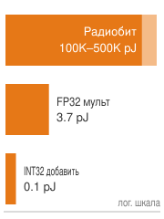
Радиопередача на порядки дороже локальной арифметики по энергии.
Сбор энергии для автономного ИИ на периферии
TinyML может работать на собираемой энергии окружающей среды, когда доступная подача поддерживает полную рабочую нагрузку устройства. Устойчивая работа требует как достаточного долгосрочного энергетического бюджета, так и способа справляться с интервалами, когда сбор энергии ниже потребности, — посредством накопления, рабочего цикла (duty cycling) или приостановки выполнения.
Сбор энергии из окружающей среды даёт от примерно одного микроватта до примерно десяти милливатт на устройство в зависимости от источника (Таблица 9). Модель определения ключевых слов, оптимизированная до средней мощности 0,5 мВт, соответствует номинальной выдаче приблизительно 5 cm² солнечного сбора в помещении только вблизи верхней границы указанного диапазона освещённости и до учёта потерь преобразования и других нагрузок устройства. Это сравнение средних мощностей не гарантирует непрерывной работы. Конструкция должна покрывать сенсорику, потери накопления и периоды тусклого или отсутствующего света либо допускать приостановку рабочей нагрузки. Окружающая подача избавляет от необходимости в покупной электроэнергии для работы только тогда, когда она покрывает полный бюджет; производство, накопление, обслуживание и утилизация по-прежнему входят в жизненный цикл.
| Источник сбора энергии | Типичная мощность | Применимые приложения TinyML |
|---|---|---|
| Солнечная (в помещении) (1 cm²) | 10–100 микроватт | Периодическая классификация сенсоров |
| Солнечная (на улице) (1 cm²) | 1–10 милливатт | Непрерывное определение ключевых слов |
| Термоэлектрическая (тепло тела) | 10–100 микроватт | Распознавание жестов в носимых устройствах |
| Сбор ВЧ-энергии (Wi-Fi) | 1–10 микроватт | Сенсорные узлы с сверхнизким рабочим циклом |
| Пьезоэлектрическая (вибрация) | 100 микроватт–1 мВт | Промышленный мониторинг |
Каскадная архитектура инференса
Помимо эффективности отдельного устройства, архитектурные шаблоны определяют суммарное энергопотребление системы через границы «край–облако». Каскадная архитектура развёртывает подходящую для задачи небольшую модель на периферии, чтобы фильтровать входные данные перед облачным инференсом. Уравнение 14 выражает полную энергию как сумму локальной обработки и вероятностно вызываемых облачных затрат:
где
Рассмотрим иллюстративную систему визуального контроля, где лёгкая модель на периферии, такая как MobileNetV3-Small, потребляет 0.5 мДж на классификацию изображения, тогда как мощная облачная модель, такая как ResNet-152, требует 50 мДж на инференс. Передача изображения через сотовый восходящий канал добавляет 10 мДж. Если краевая модель решает рутинные случаи локально и передаёт только неоднозначные входы, при доле эскалации
По сравнению с всегда облачным инференсом при 60 мДж на изображение этот иллюстративный каскад снижает моделируемую энергию на 89 percent. Качество требует отдельной проверки локальных решений, пропущенных эскалаций и облачной модели; расчёт энергии ничего не говорит о точности.
Системы, активируемые кодовым словом
Всегда включённые системы могут использовать иерархическое обнаружение активационного слова для снижения средней мощности на стадиях с растущей способностью и потреблением. В этой иллюстративной модели аналоговый входной тракт потребляет 10 μW, отслеживая речевую активность. Обнаруженное событие активирует компактный нейросетевой детектор кодового слова, потребляющий 100 μW. Положительное решение о пробуждении затем запускает инференс полной модели при 10 mW в течение 50 ms. Расчёт энергии использует эти предполагаемые мощности состояний и частоты событий; развёрнутая система при оценке энергии и качества обслуживания должна также учитывать ложные активации, пропущенные кодовые слова и затраты на переходы.
↩︎ Всегда включённый бюджет обнаружения кодовых слов, определяемый тем, как часто детектор вычисляется за период прослушивания, установлен в Где адаптация окупается.
Для иллюстративной доли активности речи 5 percent и частоты пробуждений 0.001 в секунду (одно событие каждые 1,000 s) каждое событие полной модели длится 0.05 s. Внешний интерфейс потребляет энергию непрерывно, детектор пробуждения — только во время речи, а полная модель вносит свой вклад как частота событий, умноженная на энергию одного события:
Иерархический подход достигает средней мощности 15.5 μW по сравнению с 10 mW для постоянно активного полного инференса, то есть снижения примерно в 645× в пределах этой моделируемой границы. Для времени работы от батареи также требуется ёмкость батареи, потери на преобразование, датчики и прочие нагрузки устройства.
Энергетический анализ федеративного обучения
Обучение на периферии сохраняет сырые данные локально, но заменяет их передачу на повторные загрузки модели и выгрузку клиентских обновлений — по одному на каждого участвующего клиента в каждом раунде федеративного усреднения. Это режим архетипа C (федеративный MobileNet), где телефоны обучают общую модель в рамках устойчивого энергобюджета в несколько ватт. Уравнение 15 сопоставляет энергетические компромиссы федеративного и централизованного подходов. Здесь
↩︎ Федеративное усреднение, при котором каждый раунд отправляет модель участвующим клиентам и агрегирует их обновления, описано в Протоколы федеративной агрегации.
Федеративное обучение становится более энергоэффективным, только если повторная передача модели, локальное обучение и агрегация потребляют меньше энергии, чем передача сырых данных и централизованное обучение при сопоставимом качестве модели. Сравнение должно охватывать одну и ту же совокупность клиентов и учитывать повторное участие в раундах. Того факта, что объём данных превышает одно обновление модели, само по себе недостаточно, потому что загрузки и выгрузки повторяются. Преимущества приватности и энергии требуют отдельных доказательств: хранение сырых данных локально само по себе не предотвращает утечку приватной информации через обновления, а любой механизм защиты добавляет собственные издержки в энергетический баланс.
Обучение, обслуживание и периферийное развёртывание потребляют операционную энергию, но ни одна из этих статей не включает аппаратное обеспечение, выполняющее работу. Эта физическая цепочка поставок — от производства до утилизации — является статьёй жизненного цикла, которую ещё предстоит подсчитать.
15.8 Жизненный цикл аппаратного обеспечения и электронные отходы
Экологическая цена ИИ-ускорителя начинается задолго до первого вычисленного FLOP (Gupta и др. 2022 г.; Luccioni и др. 2023 г.; NVIDIA Corporation 2025 г.; Schneider и др. 2025 г.). Занимаемый объём производства в пересчёте на один H100, количественно определённый в Глава 15.5.5, возникает ещё до того, как устройство впервые получит питание.17 Обучающий парк из нескольких тысяч таких ускорителей, следовательно, несёт производственный долг того же порядка, что и операционные выбросы обучающего запуска масштаба GPT-3 на электросети со средним по США углеродным фактором (около 552,123 kg).
Комплексная оценка жизненного цикла (LCA) количественно определяет совокупное воздействие на окружающую среду по четырём ключевым фазам: проектирование, производство, эксплуатация и утилизация. LCA может выявить производство как основную долю воздействия на жизненный цикл, что делает его критически важным рычагом устойчивости, который невозможно решить одними лишь улучшениями операционной эффективности. Первая опубликованная LCA ИИ-ускорителя, охватившая пять поколений TPU Google по всем четырём фазам, ввела углеродную интенсивность вычислений — выбросы за жизненный цикл на единицу вычислений. В отличие от производительности на ватт, эта метрика списывает на каждый чип его собственное производство, и по этой мере TPU v6e примерно в 3× раз лучше TPU v4i (Schneider и др. 2025 г.).
Эти четыре фазы организуют те же выбросы по времени, а не по виду деятельности или отчётному охвату, как фиксирует второй столбец Таблица 5, поэтому итог по фазе никогда нельзя суммировать с итогом по виду деятельности или охвату. При оценке по всей этой временной шкале оценки жизненного цикла могут показать, что выбрасывание работоспособного аппаратного обеспечения исключительно ради скромного выигрыша в эффективности наносит через воплощённый углерод больший вред окружающей среде, чем экономит в операционной мощности. Точка перелома, где новое аппаратное обеспечение становится экологически оправданным, зависит от утилизации и углеродной интенсивности электросети — точка безубыточности рассчитывается в Глава 15.8.6.
Каждая из четырёх стадий жизненного цикла вносит свою нагрузку через отдельный физический механизм (Рисунок 14). Проектирование системы фиксирует значительную часть нагрузки за срок службы, производство закладывает углеродные, водные и химические нагрузки при изготовлении, эксплуатация потребляет электричество из сети для обучения и обслуживания, а вывод из эксплуатации порождает электронные отходы, если аппаратное обеспечение не восстановлено или его компоненты не извлечены.
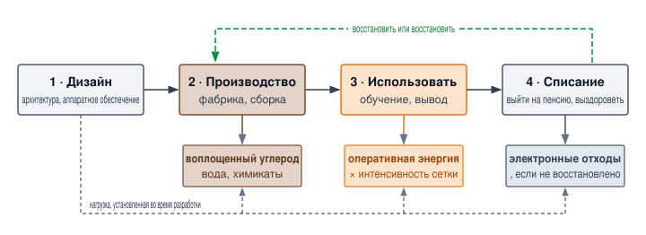
Последовательность жизненного цикла связывает проектные решения с издержками, возникающими в разное время. Экспериментирование потребляет ресурсы до развёртывания; производство добавляет воплощённый углерод; а эксплуатация связывает рабочую нагрузку с ограничениями электросети и охлаждения. Вывод из службы создаёт выбор между повторным использованием, извлечением и утилизацией. Продление полезного срока службы распределяет воплощённую нагрузку аппаратного обеспечения на больший объём работы, но не отменяет уже возникшие выбросы. Экологическая выгода зависит от того, какой замены удаётся избежать и от операционной стоимости удержания существующего оборудования в работе.
15.8.1 Фаза проектирования и экспериментирования
Публикуемые показатели энергии обучения почти всегда сообщают о единственном финальном запуске, который произвёл опубликованную контрольную точку, опуская месяцы неудачных экспериментов, переборов гиперпараметров и поиска архитектуры, ему предшествовавших. Эти предварительные запуски относятся к фазе проектирования, охватывающей исследование, разработку и оптимизацию до развёртывания. Автоматизированный поиск нейроархитектур (NAS) может оценивать множество конфигураций. Глава 15.7.1 показал, что две оценки одного и того же поиска могут различаться на порядки в зависимости от того, включает ли граница прокси-поиски, полные запуски, накладные расходы дата-центра, углеродный фактор электросети и переиспользование в последующих моделях (Strubell и др. 2019 г.; Patterson и др. 2021 г.). Позднейшие эффективные методы NAS используют разделение весов, непрерывные ослабления и поиск с учётом аппаратного обеспечения, чтобы сократить бюджет поиска (Elsken и др. 2019 г.). Исключение поиска тоже не делает оставшиеся показатели сопоставимыми, потому что финальные запуски также не поддаются ранжированию по размеру модели (Таблица 10).
| Модель | Параметры | Энергия (MWh) | Выбросы (t CO2e) | t CO2e на MWh |
|---|---|---|---|---|
| T5 | 11B | 86 | 47 | 0.55 |
| Meena | 2.6B | 232 | 96 | 0.41 |
| GShard-600B | 619B | 24 | 4.3 | 0.18 |
| Switch Transformer | 1.5T | 179 | 59 | 0.33 |
| GPT-3 | 175B | 1,287 | 552 | 0.43 |
Сообщённый финальный запуск модели GShard с 600 миллиардами параметров произвёл выбросов менее одной десятой от запуска T5 с 11 миллиардами параметров. Одна из причин — архитектурная: GShard-600B и Switch Transformer с 1,5 триллиона параметров — модели Mixture-of-Experts, маршрутизирующие каждый токен лишь к малому подмножеству экспертов, а не активирующие каждый параметр на каждом токене, как плотные T5, Meena и GPT-3. Таблица фиксирует также и более низкое энергопотребление, и более низкие выбросы на мегаватт-час для GShard. Выбросы на мегаватт-час — это эффективный углеродный фактор электросети каждого запуска, и по пяти запускам он варьируется примерно в 3 раз. Поскольку запуски также различаются бюджетами токенов, поколениями ускорителей и электросетями дата-центров, итоги таблицы не изолируют экономию от одного лишь разреженного активирования. Поэтому число параметров не может ранжировать их выбросы, а для ранжирования по числу операций всё равно потребовался бы учёт эффективности исполнения и электросети. Поиску и неудачным экспериментам нужна отдельная опись разработки, прежде чем эти цифры финальных запусков смогут поддержать сравнение жизненного цикла.
↩︎ Исполнение Mixture-of-experts и требуемая им маршрутизация AllToAll описаны в Экспертный параллелизм (mixture of experts).
Решение проблем устойчивости фазы проектирования требует инноваций в эффективности обучения: разреженного обучения, низкоточной арифметики, разделения весов и энергоосознанных подходов NAS. Трансферное обучение и дообучение предобученных моделей переиспользуют предобученные представления вместо того, чтобы обучать каждую задачу с нуля (Raffel и др. 2020 г.).
15.8.2 Вода, химикаты и критические материалы
Прежде чем ускоритель появится, его производство потребляет физические ресурсы, которые не учитывает один лишь энергетический баланс: сверхчистую воду, технологические химикаты и материалы. Их нагрузки возникают на площадках добычи, очистки, производства и сборки, а не только там, где готовое аппаратное обеспечение эксплуатируется. Потребность в воде должна оцениваться относительно локальной доступности и конкурирующих пользователей, тогда как предложение материалов зависит от компонента и производственного процесса (Jha 2014 г.; Chen 2006 г.). Эти ресурсные балансы расширяют границу жизненного цикла за пределы углерода, не сводя несопоставимые воздействия к единой энергетической сумме.
Водный учёт требует большего, чем единый показатель WUE. Забор воды измеряет воду, изъятую из источника, тогда как потребление воды измеряет долю, не возвращённую в тот же водораздел в пригодной форме. Учёт должен разделять прямую охлаждающую воду на площадке, которую оценивают Уравнение 3 и расчёт градирен в Глава 15.6.3, и непрямую воду, использованную для генерации электричества (Рисунок 10) и производства аппаратного обеспечения. Затем учёт должен привязать каждый поток к его водоразделу, сезону и локальному дефициту (Environmental Management—Water Footprint—Principles, Requirements and Guidelines 2014 г.; The Green Grid 2011 г.). Литр, потреблённый во влажный сезон в малонагруженном бассейне, не эквивалентен литру, потреблённому во время засухи в нагруженном бассейне, поэтому решения принимающего уровня должны сообщать и физический объём, и взвешенный по стрессу результат. Процентам оборотной воды также нужен заявленный знаменатель, потому что рециркуляция воды внутри объекта может уменьшить забор, не устранив испарительное потребление.
Производство полупроводников использует сверхчистую воду для химико-механической планаризации, влажного травления и промывки пластин (Cooper и др. 2011 г.).18 Полный экологический учёт требует аудита валового технологического потока, забора пресной воды, рециклированного объёма и испарительного потребления как различных величин, потому что внутреннее повторное использование и потоки, покидающие объект, изменяют разные итоги (Рисунок 15). Очистка возвращает оборотную воду в поток забора и может сократить забор пресной воды, тогда как испарение остаётся расходной потерей в локальном водном балансе. Эта классификация не означает, что вода навсегда исчезает из гидрологического цикла.
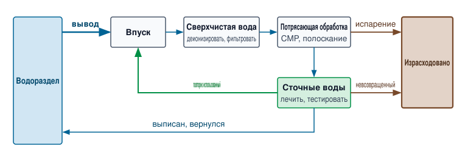
Раздельные потоки на Рисунок 15 показывают, почему доля повторного использования не может определять абсолютное потребление. Один и тот же процент повторного использования может сопровождаться совершенно разными объёмами забора воды и испарительными потерями. Поэтому для выбора площадки объекта требуются сами объёмы воды и состояние местного водораздела, а не только процент повторного использования.
При производстве также используются химические продукты для травления, легирования и очистки: сильные кислоты, такие как плавиковая и серная, органические растворители и токсичные легирующие газы, такие как арсин и фосфин. Их опасность связана с токсичностью, реакционной способностью и нагрузкой на обработку образуемых отходов, а не с их энергетической ценностью. Химические инвентаризации и паспорта безопасности идентифицируют опасные ингредиенты, хотя нераскрытые рецептуры могут ограничить оценку (Kim и др. 2018 г.). Экологическому учёту нужны вещества и их количества, используемые на конкретном объекте, вместе с путями их выброса и обработки. Один лишь суммарный показатель энергии не может описать эти химические нагрузки.
Оборудование ИИ и его производственная цепочка зависят от критически важных материалов, нарушение поставок которых может ограничить производство. Критичность не тождественна геологической редкости или принадлежности к группе редкоземельных элементов. Такие материалы, как индий, появляются в анализах критически важных и исчезающих элементов потому, что поставки могут зависеть от извлечения в качестве побочного продукта, вариантов замещения и ограничений переработки (Rhodes 2019 г.). Соответствующая зависимость может лежать в процессоре, корпусе, периферийном компоненте или производственном процессе (Таблица 11).
| Материал | Применение в производстве ИИ-полупроводников | Проблемы с поставками |
|---|---|---|
| Кремний (Si) | Основная подложка для чипов, пластин, транзисторов | • Ограничения обработки • Геополитические риски |
| Галлий (Ga) | Усилители мощности на основе GaN, высокочастотные компоненты | • Ограниченная доступность • Побочный продукт производства алюминия и цинка |
| Германий (Ge) | Быстродействующие транзисторы, фотодетекторы, оптические соединения | • Дефицитность • Географическая концентрация |
| Индий (In) | Оксид индия-олова, оптоэлектроника | • Ограниченные запасы • Зависимость от переработки |
| Тантал (Ta) | Конденсаторы, стабильные интегральные компоненты | • Конфликтный минерал • Уязвимые цепочки поставок |
| Редкоземельные элементы | Магниты, датчики, высокопроизводительная электроника | • Высокие геополитические риски • Экологические проблемы добычи |
| Кобальт (Co) | Батареи для устройств периферийных вычислений | • Проблемы прав человека • Географическая концентрация (Конго) |
| Вольфрам (W) | Контактные и межслойные заглушки, диффузионные барьеры | • Ограниченное число производственных площадок • Геополитические проблемы |
| Медь (Cu) | Межсоединения на кристалле, теплоотводы | • Ограниченные источники высокой чистоты • Геополитические проблемы |
| Гелий (He) | Охлаждение полупроводников, плазменное травление, EUV-литография | • Невозобновляемый • Невозвратные атмосферные потери • Ограниченная добыча |
Строительство и эксплуатация полупроводниковых заводов и центров обработки данных также напрямую воздействуют на природные экосистемы через разрушение мест обитания, водный стресс и загрязнение от сброса химикатов. Сточные воды полупроводниковой промышленности могут загрязнять близлежащие речные отложения тяжёлыми металлами и следовыми элементами (Hsu и др. 2016 г.). Образование отходов при производстве, включая газообразные выбросы, воздух с ЛОС и сточные воды, загрязнённые металлами, требует продвинутых систем обработки, а отслужившее оборудование добавляет поток электронных отходов, рассматриваемый в Глава 15.8.5.
15.8.3 Фаза производства
Изготовление ИИ-ускорителя вблизи предела ретикулы — максимальной площади кристалла, которую может отпечатать одна экспозиция литографии, — оставляет на пластине гораздо меньше потенциально годных кристаллов, чем для небольшого мобильного процессора, и каждый бракованный кристалл переносит свою долю ультрачистой воды, технологических химикатов и энергии литографии на уцелевшие рабочие. Производственный след объединяет воплощённый углерод, установленный в Глава 15.5.5, с потребностями в воде, химикатах и материалах из Глава 15.8.2, и два структурных свойства современных ускорителей увеличивают эти вложения ресурсов на одно пригодное устройство.
Во-первых, поскольку вероятность того, что кристалл избежит всех случайных дефектов пластины, падает примерно экспоненциально с площадью кристалла, плотность дефектов, выводящая из строя 5 процентов малых кристаллов, может вывести из строя 20 процентов и более кристаллов предельного размера, концентрируя производственную нагрузку пластины на меньшем выходе годных. Во-вторых, пропускная способность памяти, необходимая для крупномасштабного обучения и инференса, толкает ускорители к продвинутой 2.5D- и 3D-корпусировке, такой как Chip-on-Wafer-on-Substrate (CoWoS) от TSMC, размещающей стеки высокоскоростной памяти рядом с логическим кристаллом на интерпозере. Инвентаризация должна включать эти стеки памяти, интерпозер и дополнительные этапы сборки, а не только сам кристалл ускорителя. Поэтому каждый пригодный ускоритель несёт больше технологической воды, химикатов и энергии, чем подсказывает одна лишь площадь его логического кристалла. Более длительный срок полезной службы распределяет эти производственные вложения на больший объём работы, а материалы с меньшей токсичностью, переработка и более чистое производство уменьшают саму производственную нагрузку (Cenci и др. 2021 г.; Irimia-Vladu 2014 г.).
15.8.4 Фаза использования
Обучение масштаба GPT-3 потребляет 1,287 MWh за недели непрерывной работы кластера, и то, когда эти мегаватт-часы потребляются, не менее важно для сети и атмосферы, чем их сумма. Операционная энергия, потребляемая при обучении и инференсе, детально рассмотрена в Глава 15.7; то, как гибкие рабочие нагрузки смещают это потребление к более чистым часам, раскрывается в Глава 15.9.4. Когда активная служба завершается, оставшимся вопросом жизненного цикла становится судьба самого физического оборудования.
15.8.5 Утилизация, электронные отходы и встроенный ИИ
Центры обработки данных регулярно списывают исправные ИИ-серверы через три-четыре года — не потому, что кремний физически вышел из строя, а потому, что производительность или эффективность нового поколения делает старые стойки неконкурентоспособными для передовых рабочих нагрузок. Эти циклы обновления оборудования (Slade 2007 г.) связывают развёртывание ИИ с более широкой проблемой электронных отходов (e-waste). В 2019 году мировой объём электронных отходов достиг примерно 54 миллионов метрических тонн (Forti и др. 2020 г.), из которых 17,4 процента были задокументированы как официально собранные и переработанные (Singh и Ogunseitan 2022 г.). Эти итоги охватывают электро- и электронное оборудование в целом, а не только оборудование ИИ. Когда оборудование в конце концов выбрасывается, опасные вещества в его компонентах требуют контролируемого извлечения и обработки, а не неконтролируемого сброса или переработки (Grossman 2007 г.).
Прежде чем оборудование попадёт в этот поток отходов, от того, возможна ли модернизация старой стойки на месте или её придётся списывать целиком, зависят ёмкость памяти, пропускная способность и совместимость межсоединений. В тесно интегрированных системах новое поколение ускорителей может потребовать замены материнской платы, сетевого оборудования или сервера, тогда как конструкции на базе PCIe могут предлагать модульные варианты обновления. Оценка фактической границы совместимости отличает коммерческое списание от физической утилизации, поскольку исправный узел, выведенный из обучения на переднем крае, может всё ещё обслуживать менее требовательные батчи, разработку или инференс.
Развёртывание встроенного ИИ интегрирует инференс в периферийные устройства и потребительскую электронику. Более широкий парк подключённых устройств (Рисунок 16) вырос с оценочных 8,6 млрд устройств в 2019 году до 15,1 млрд в 2023 году, с прогнозом 29,4 млрд к 2030 году (Statista 2022 г.). Эти счётчики указывают масштаб экосистемы устройств, а не число систем ИИ или объём электронных отходов. Образование отходов также зависит от срока службы, ремонта и повторного использования. Клееные корпуса, несъёмные батареи и проприетарные компоненты могут затруднить ремонт, повышая риск, что ограниченная неисправность приведёт к утилизации всего устройства (Baldé и др. 2017 г.).
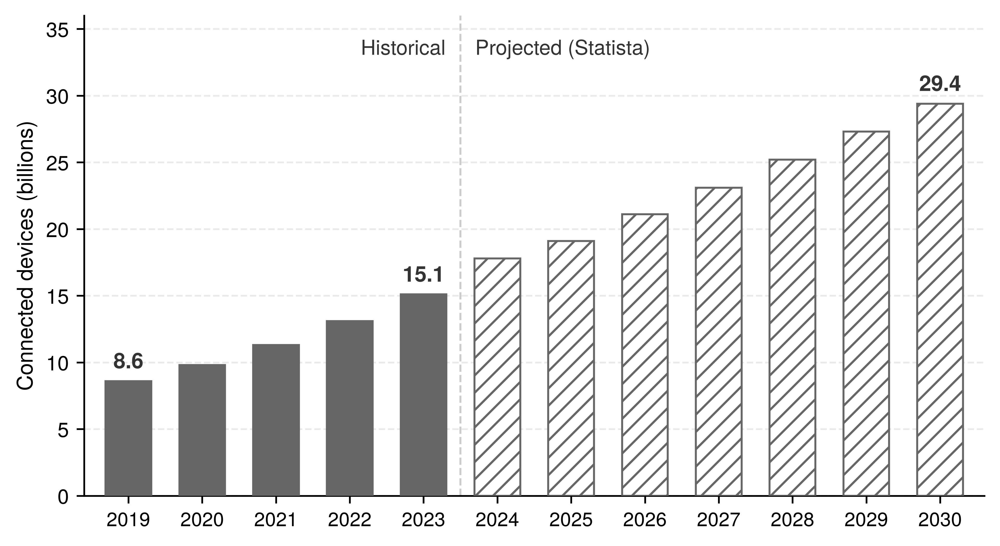
Ограниченная программная поддержка, ограниченный ремонт и трудная разборка могут подтолкнуть устройства к замене вместо повторного использования. Граница жизненного цикла должна тогда проследить за списанным оборудованием до его следующего использования или места обработки. Перемещение оборудования за пределы инвентаря оператора не устраняет его экологическую нагрузку; учёт должен различать полезное повторное использование, контролируемое извлечение и утилизацию, перекладывающую издержки на другие сообщества.
15.8.6 Продление срока службы оборудования
Если удерживать ИИ-сервер в полезной службе 5 years вместо 3 years, воплощённый углерод, отнесённый на каждый год эксплуатации, сокращается на 40 percent. Противостояние линейной модели «взять — сделать — выбросить» требует сдвига к циркулярной экономике (Stahel 2016 г.), приоритизирующей повторное использование, восстановление и переработку и распределяющей фиксированный производственный след на больший объём службы. Этот результат распределения мотивирует оценивать более длительное использование, но заявление об избежанных выбросах требует сопоставления затрат на замену и эксплуатацию альтернатив.
Четыре интервенции жизненного цикла поддерживают более долгую службу оборудования, делая системы ремонтопригодными, обновляемыми, поддерживаемыми и пригодными к повторному использованию в течение их физического срока. Физически инициативы права на ремонт снижают ограничения обслуживания, включая барьеры к запчастям, инструментам и информации о ремонте (Federal Trade Commission 2021 г.). Модульный дизайн разделяет сменные подсистемы так, чтобы обновление ускорителя или сети не требовало выбрасывания всего шасси. Когда оборудование остаётся работоспособным, расширенные циклы поддержки обеспечивают обновления драйверов и патчи безопасности, нужные для сохранения исправного оборудования в работе. Когда узел в конце концов отстаёт от требований обучения на переднем крае, программы вторичного использования подбирают списанным ускорителям рабочие нагрузки, которые они ещё могут обслуживать, — например, батч-обработку, разработку или исследования. Каждая интервенция должна сохранять производительность, совместимость и безопасность, необходимые для полезной дальнейшей работы. Эти интервенции перемещают устойчивость от управления утилизацией к инженерии жизненного цикла.
Решение о замене сопоставляет два способа предоставления одной и той же будущей службы: продолжение эксплуатации существующего парка и эксплуатацию парка на замену. Исходные производственные выбросы уже произошли при любом выборе. Замена добавляет новую производственную нагрузку, которая окупается только за счёт операционной экономии на оставшемся интервале службы, поэтому точка перелома — это время, за которое эта экономия сравняется с ней.
Пусть заменяющий ускоритель несёт ту же отнесённую производственную нагрузку, что и H100 (164 kg CO2e), и выполняет ту же работу с 50 percent меньшей энергией. Против существующего ускорителя, непрерывно работающего на номинальных 700 W, замена окупает свои производственные выбросы примерно за 6.5 недель на среднем по США энергосетевом углеродном профиле. В Квебеке они окупаются только примерно через 2.7 лет — почти весь 3-year стандартного срока службы. Меньшая загрузка растягивает оба интервала пропорционально. Одно и то же обновление может окупиться за недели в энергосистеме с высокой долей ископаемого топлива и стать чистым убытком в чистой энергосистеме, если замена сойдёт со службы до точки окупаемости. Этот учёт только по ускорителю не учитывает накладные расходы хоста и объекта, а утилизация и любой полезный второй срок службы списанного оборудования дополнительно сдвигают его, поэтому один лишь меньший годовой амортизированный показатель не может решить вопрос (финансовая сторона того же решения об обновлении рассматривается в Скрининг обновления).
Когда инженерная команда уже измерила и операционные, и жизненно-цикловые слагаемые учёта своей рабочей нагрузки, остаётся вопрос, как комбинировать алгоритмические, инфраструктурные и планировочные рычаги, чтобы снижать эти слагаемые при реальном потолке энергии или углерода.
15.9 Стратегии смягчения
Когда центр обработки данных упирается в абсолютный потолок мощности, оператор не может просто купить больше GPU. Поддержка дополнительной полезной работы требует снижения мощности, необходимой для этой работы, изменения её расписания или обеспечения дополнительной осуществимой ёмкости. Алгоритмическая оптимизация может сократить выполняемую работу и перемещение данных; изменения инфраструктуры могут сократить накладные расходы. Размещение с учётом углерода решает другое ограничение, меняя выбросы, связанные с потреблением электроэнергии, даже когда потребление энергии остаётся фиксированным.
Методики измерения показывают, в каком месте концентрируются экологические издержки конкретной рабочей нагрузки. Многократные эксперименты могут сделать доминирующей разработку; непрерывное обслуживание — инференс; а чистая электроэнергия или ограниченное использование могут повысить относительную значимость производства. Измеренный баланс определяет выбор меры воздействия. Алгоритмические изменения могут сократить число или стоимость операций, изменения инфраструктуры влияют на исполнение и накладные расходы центра обработки данных, а управление задаёт бюджеты и стимулы, в рамках которых принимаются эти решения.
Реализация должна учитывать эффект отброса, вносимый ростом парка в Глава 15.3, известный как парадокс Джевонса19 (принцип «Парадокс Джевонса»). Пример с десятикратным ростом эффективности и стократным ростом объёма давал там арифметику; механизм же состоит в том, что удешевление вычислений делает экономически возможными ранее недоступные приложения, так что использование может вырасти настолько, что сведёт на нет или превысит ожидаемую экономию энергии. Этот эффект отброса делает абсолютные результаты, включая углеродные бюджеты, необходимым дополнением к показателям скорости (FLOP/s на ватт). Возобновляемая энергия меняет эмиссии, связанные с электроэнергией, но не ограничивает потребление. Управление должно отслеживать рост рабочей нагрузки относительно целевого ресурсного бюджета, чтобы определить, снижают ли выигрыши в эффективности суммарное воздействие парка.
15.9.1 Многоуровневое снижение воздействия
Сжатие модели вдвое не сэкономит ни грамма углерода, если освободившаяся ёмкость кластера немедленно заполнится новыми экспериментами или если задача будет выполняться в энергосистеме с высокой долей угля без ограничения на уровне центра обработки данных. Поскольку локальный выигрыш в эффективности сам может поднять суммарное потребление, стратегия снижения должна решить, какой уровень отвечает за каждое сокращение и какой абсолютный бюджет вмещает рост спроса, следующий за ним. Энергоэффективный дизайн моделей, оптимизированное развёртывание оборудования, устойчивая эксплуатация инфраструктуры и планирование с учётом углерода каждое воздействуют на свой член в lifecycle-следе. Выбор фреймворка имеет значение лишь в той мере, в какой он меняет вычисления, перемещение данных в памяти, утилизацию или отчётность. Проектирование с учётом жизненного цикла не даёт оптимизации закончиться на этапе развёртывания, проверяя, сохраняется ли экономия при обучении, инференсе, производстве и использовании.
Каждый рычаг снижения воздействия действует на своём уровне учёта (Рисунок 17). Сокращение работы и эффективность исполнения меняют энергию ИТ. Накладные расходы центра обработки данных масштабируют эту энергию до общего потребления объекта. Региональный углеродный коэффициент сети переводит киловатт-часы объекта в операционные эмиссии. Амортизация оборудования добавляет воплощённые эмиссии на своей собственной границе. Сокращения на мультипликативных уровнях складываются только тогда, когда каждое измерено в объединённой конфигурации на одном и том же фиксированном объёме полезной работы, поскольку сокращение энергии ИТ само может изменить PUE. Изолированные проценты эффективности, измеренные на разных рабочих нагрузках или базовых линиях либо применённые к аддитивному члену воплощённых эмиссий, нельзя перемножать в единый совокупный коэффициент сокращения.
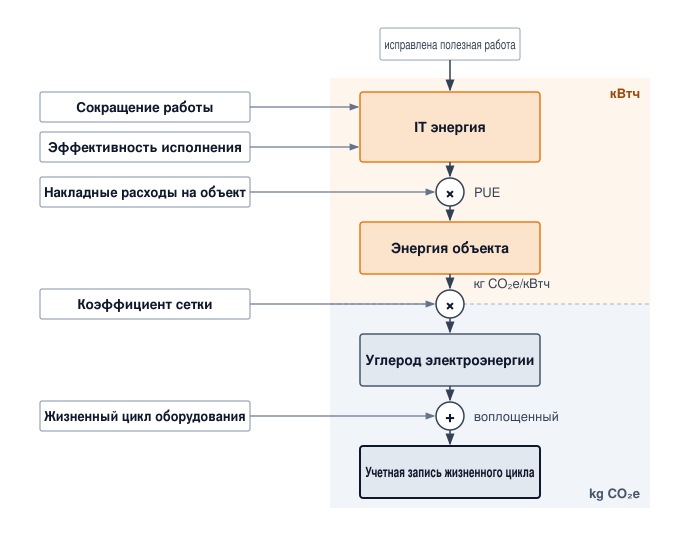
Отброс может свести на нет сокращение на любом из этих уровней. На эластичной кривой спроса (
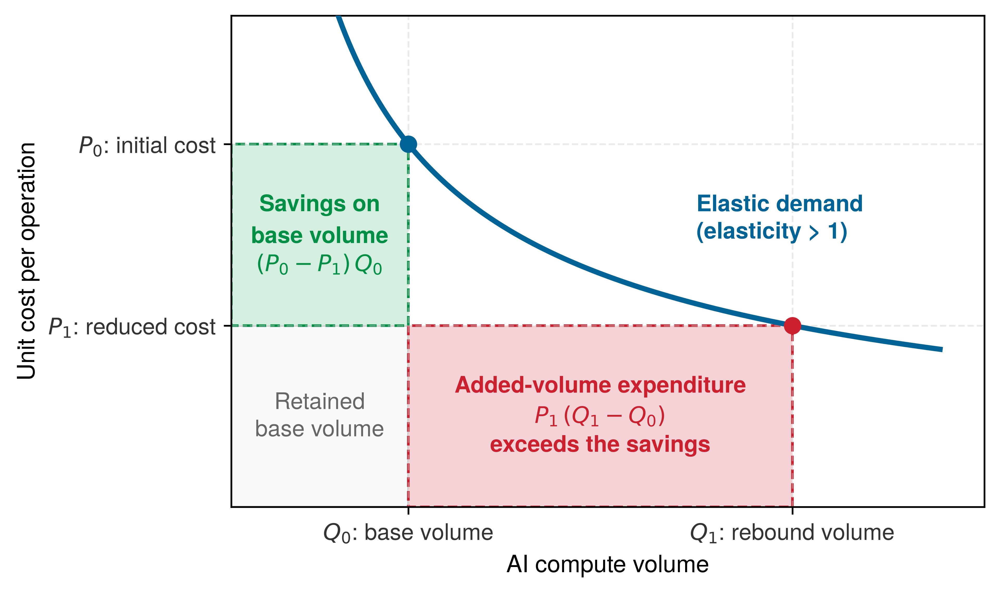
Суммарная энергия зависит от измеренной энергии на запрос и объёма запросов. Эластичность спроса описывает, как объём реагирует на цену; чтобы перевести эту реакцию в энергию, нужен отдельный учёт того, как меняется удельная энергия.
Контрольная точка 15.5: Ловушка эффективности (парадокс Джевонса)
Инженерная команда оптимизирует службу перевода, снижая измеренную энергию на запрос на 50 процентов (выигрыш в эффективности 2
Парадокс Джевонса не обесценивает эффективность как стратегию; он делает управление и планирование ёмкости частью результата. На уровне отдельных систем снижение энергии на полезную задачу остаётся прямым рычагом устойчивости. Снижение задержки или денежной стоимости — лишь кандидат на улучшение, энергетический эффект которого ещё нужно измерить.
Системный взгляд 15.4: Эффективность как устойчивость
Оптимизации модели становятся инструментами устойчивости только тогда, когда они снижают измеренную стоимость жизненного цикла при фиксированном качестве. Прореживание может убрать вычисления и трафик памяти, если аппаратное обеспечение пропускает полученную структуру. Квантизация уменьшает размер представления и может ускорить поддерживаемые ядра, а дистилляция знаний обменивает дополнительное обучение на меньшую модель обслуживания. Каждая техника может и не снизить фактическую энергию, если её накладные расходы или режим развёртывания оставляют доминирующий член без изменений.
Производительность как инженерная задача поставляет кандидатов на меры воздействия, но экологический результат всё ещё требует измерения. Более быстрый прогон снижает энергию, только если сокращение времени перевешивает возможный рост средней мощности; меньшее использование памяти помогает, только если оно устраняет работу под напряжением или ёмкость. Совместное проектирование аппаратуры и ПО становится выигрышем в устойчивости, когда эта экономия переживает границу жизненного цикла и объём развёрнутой рабочей нагрузки.
Проектирование устойчивого ИИ сильно пересекается с проектированием эффективного ИИ, но выходит за его пределы. Инженерные принципы, позволяющие системам масштабироваться, работать лучше и дешевле в эксплуатации, также могут снизить экологическое воздействие, но устойчивость добавляет учёт жизненного цикла, размещение с учётом углерода, абсолютные ресурсные бюджеты, ограничения по воде и материалам и управление против эффектов отброса. Устойчивость — неотъемлемая часть хорошего проектирования систем, а не синоним одной лишь эффективности.
15.9.2 Разработка с учётом жизненного цикла
Тратить недели на квантизацию модели, чей след определяется повторяющимися поисками архитектуры, или переносить задачу обучения в более чистую энергосеть, когда круглогодичное обслуживание потребляет в десять раз больше электроэнергии, — значит решать не ту часть инвентаризации. Разработка с учётом жизненного цикла отталкивается от крупнейшего экологического члена рабочей нагрузки и затем выбирает меру воздействия, меняющую именно этот член. Алгоритмический дизайн, оптимизация инфраструктуры, операционная практика и управление снижают воздействие только тогда, когда они выстроены вокруг измеренного узкого места, а не применяются как универсальный чек-лист (Uddin и Rahman 2012 г.).
Энергоэффективный алгоритмический дизайн
Большие модели глубокого обучения могут требовать значительных вычислений при обучении и инференсе. Инженерный вопрос — сколько этой работы нужно конкретной задаче при требуемом качестве. Одно лишь число параметров не выявляет избыточные вычисления, а удаление весов экономит энергию только если полученная реализация действительно избегает работы или перемещения данных. Поэтому устойчивый алгоритмический дизайн оценивает модель и её исполнение вместе, измеряя энергию на полезную задачу, а не считая меньшее представление достаточным доказательством улучшения.
Когда измеренным узким местом оказывается неиспользуемая структура, разрядность или масштаб обслуживания, рычаг устойчивого дизайна меняется, поскольку у каждого узкого места своё воздействие на энергетический член (Таблица 12).
| Техника | Измеренное узкое место | Энергетический механизм | Показательные свидетельства |
|---|---|---|---|
| Прореживание | Неиспользуемая структура модели | Удаляет избыточные веса, сокращая размер модели, вычисления и перемещение памяти при инференсе | Структурированное прореживание может удалить целые каналы или блоки; измерьте энергию и качество полученной исполняемой модели |
| Квантизация | Разрядность | Снижает числовую точность, так что арифметические блоки и пересылки памяти переносят меньше битов | Q8BERT демонстрирует 8-битное представление BERT с меньшим следом модели и зависящим от задачи сохранением качества (Zafrir и др. 2019 г.) |
| Дистилляция знаний (Hinton и др. 2015 г.) | Масштаб обслуживания | Переносит стоимость повторяющегося инференса в однократный процесс обучения «учитель—ученик» | DistilBERT сохраняет 97% точности BERT с 40% меньшим числом параметров и на 60% более быстрым инференсом (Sanh и др. 2019 г.) |
Три рычага из таблицы несут разные оговорки развёртывания. Прореживание и квантизация экономят энергию только тогда, когда исполняемые ядра пропускают арифметику или переносят меньше байтов, что зависит от структуры разреженности, поддержки ядер и накладных расходов на преобразование (Глава 15.4.1.2). Дистилляция знаний20 вместо этого амортизирует свою дополнительную стоимость обучения на повторяющемся обслуживании.
Прореживание, квантизация и дистилляция образуют основной инструментарий устойчивой разработки ИИ, но их ценность для устойчивости зависит от измеренного узкого места. Вопрос дизайна состоит не в том, как реализовать каждый метод сжатия с нуля, а в том, как ранжировать эти рычаги по перемещению памяти, объёму обслуживания, углеродной интенсивности и стоимости жизненного цикла. Приоритизированная стратегия упорядочивает их вместе с планированием с учётом углерода по тому члену эмиссий, который каждый меняет, и в первую очередь атакует крупнейший.
Контрольная точка 15.6: Приоритизация стратегии декарбонизации
Развёртывание LLM на 70B для чувствительного к задержке приложения:
Архитектуры, избегающие ненужной работы
Архитектура — это рычаг, выходящий за рамки сжатия заданной модели, потому что она определяет, сколько работы вообще выполняет аппаратура. Специализированные тракты данных и локальное повторное использование данных могут снизить энергию на полезную операцию, но сравнение должно совпадать по рабочей нагрузке, точности, достигнутому качеству и границе измерения. Одна лишь арифметика чипа исключает память и вспомогательные системы; сквозная энергия включает также их активность и время исполнения.
При фиксированном лимите энергопотребления самый дешёвый джоуль — тот, который аппаратура вообще не тратит, поэтому выбор того, какую работу архитектура выполняет вовсе, напрямую влияет на потолок. Альтернативные вычислительные архитектуры открывают потенциальные источники эффективности: избирательную активацию, локальное состояние и сокращённую коммуникацию. Сравнение их энергии с плотной моделью требует общей задачи, порога качества, целевой задержки и границы измерения.
Архитектурная возможность — избегать работы, не нужной задаче. Периодически вычисляемая плотная модель может повторять вычисления на неизменных входах, тогда как событийный дизайн может реагировать только при изменении значимого сигнала. Сравнение сводится к двум скоростям. Плотная модель, вычисляемая
Отключение неактивных компонентов помогает любому из дизайнов только там, где аппаратура это поддерживает, а статическая мощность, сенсорика и накладные расходы на коммуникацию остаются частью энергетического бюджета. Локальное обучение и улучшенная эффективность по числу примеров адресуют разные издержки. Удержание обновления локально может сократить коммуникацию, а требование меньшего числа примеров или шагов оптимизации может сократить работу обучения; ни одно из этих свойств не гарантирует другого. Оценка должна включать вспомогательную предобработку, адаптацию и стоимость инференса при требуемой точности. Разреженность и разреженные соединения предлагают ещё один путь, когда исполнение пропускает арифметику или пересылки, но индексация, маршрутизация, дисбаланс нагрузки и синхронизация могут поглотить номинальную экономию.
Событийно-управляемые и разреженные вычисления указывают на направления исследований для устойчивого ИИ. Архитектуры, реализующие импульсные нейронные сети (SNN) — событийно-управляемые модели, обменивающиеся дискретными импульсами, — или разреженные паттерны активации могут снизить энергопотребление. Нейрон, который не генерирует импульс, не вычисляет и не посылает сообщение, поэтому переключения и обмен данными следуют за активностью входа, а не за фиксированной тактовой частотой21 (Prakash и др. 2023 г.).
Эти направления расширяют пространство проектирования, не делая какую-то одну архитектуру универсально устойчивой. Релевантной метрикой является скорее измеренное воздействие на жизненный цикл в пересчёте на полезную задачу при требуемом качестве и уровне обслуживания. Плотные, разреженные и событийно-управляемые реализации должны удовлетворять одному и тому же контракту сравнения.
Системы с учётом жизненного цикла
Повторяющиеся обновления модели добавляются к следу жизненного цикла, даже если каждая развёрнутая версия эффективна. Релевантное сравнение — это работа, необходимая для поддержания качества сервиса во времени, включая разработку и переобучение. Цикл переобучения, повторяющий этап разработки из Глава 15.5.2, снова платит итоговый множитель 5× при каждом обновлении. Transfer learning и дообучение могут переиспользовать предобученную модель вместо повторения обучения с нуля (Raffel и др. 2020 г.), но в сравнение должны входить адаптация, оценка и любая дополнительная работа, необходимая для восстановления качества на целевой задаче. Переиспользование — кандидат на экономию, ценность которого зависит от полного цикла обновления.
Граница развёртывания важна не меньше границы обучения. Развёртывание на периферии (edge) может снизить энергию обмена данными за счёт инференса на специализированном низкопотребляющем оборудовании в точке использования (Xu и др. 2020 г.), но учёт жизненного цикла должен включать воплощённый углерод производства и замены этих устройств. Встраивание методологий LCA в рабочие процессы ИИ позволяет командам видеть этот компромисс рано: облачная модель, edge-модель и гибридный каскад могут иметь разных победителей в зависимости от объёма запросов, срока службы устройства, углеродной интенсивности сети и частоты переобучения (International Organization for Standardization 2006 г.a, 2006 г.b). Henderson и др. (2020 г.) выступают за систематическую отчётность по энергетическим и углеродным следам ML именно для того, чтобы такие сравнения можно было проводить единообразно. Как предупреждает парадокс Джевонса, учёт должен также включать рост использования, поскольку оптимизация одного этапа может увеличить совокупное воздействие, если снижение затрат открывает более широкое развёртывание.
Бенчмарки и операционные метрики
Бенчмарки важны тогда, когда делают эффективность видимой на этапах закупок и проектирования. ML.ENERGY Leaderboard (ML.ENERGY Initiative и др. 2023 г.) публикует измерения энергии инференса при заявленных конфигурациях модели и обслуживания. Результаты MLPerf по мощности сопровождают показатели производительности системными измерениями мощности по правилам бенчмарка. Эти результаты поддерживают сравнения в рамках заявленных рабочей нагрузки, качества и условий измерения; преобразование их в углеродные следы всё ещё требует учёта электроэнергии и жизненного цикла за пределами бенчмарка.
Правильная метрика эффективности зависит от режима обслуживания. Батчевый инференс естественно выражается как корректные примеры на джоуль, чувствительное к задержке обслуживание — как запросы на джоуль, удовлетворяющие целевому уровню обслуживания (SLO), а генеративные рабочие нагрузки — как джоули на принятый выходной токен при заявленном пороге качества. Каждая из них — энергоэффективность парка (Уравнение (5)), где полезная работа считается в собственной единице режима, и эти запросы — те самые, которые засчитывает SLO goodput (Инверсия при переходе от обучения к инференсу). Сырая пропускная способность на джоуль вознаграждает системы, снижающие точность, обрезающие выходы или нарушающие целевые задержки. Стандартизация не делает одну платформу универсально «зелёной»; она фиксирует полезную работу, качество, окно измерения и энергетический знаменатель достаточно хорошо, чтобы решения о закупках и архитектуре можно было обосновать количественно.
Для развёртываний TinyML мощностью менее ватта набор бенчмарков MLPerf Tiny применяет эту дисциплину к ограниченным устройствам (Banbury и др. 2021 г.). Задачи включают визуальные wake words, распознавание ключевых слов, обнаружение аномалий и классификацию изображений. Закрытая дивизия ограничивает реализации моделями, эквивалентными эталонным, тогда как открытая дивизия допускает более широкий выбор моделей. Совместное чтение точности, задержки и энергии внутри заявленной дивизии не позволяет изменению задачи или качества модели выдавать себя за рост аппаратной эффективности.
Энергию и задержку всё равно приходится читать вместе через произведение «энергия-задержка» (EDP) (Уравнение 16), которое балансирует энергопотребление против времени отклика, штрафуя решения, экономящие мощность лишь за счёт слишком долгого выполнения:
где
Для развёртываний TinyML EDP даёт оценку для сравнения допустимых рабочих точек. Снижение тактовой частоты может уменьшить мощность, продлевая выполнение; снижение напряжения также может снизить энергию переключений, когда аппаратура это позволяет. Статическая мощность и более долгий активный интервал могут нивелировать эти выигрыши. Поэтому предпочтительная настройка берётся из измеренных энергии и задержки по поддерживаемым конфигурациям, после исключения настроек, нарушающих сроки рабочей нагрузки.
Метрики устойчивости дополняют бенчмарки производительности, фиксируя ресурсную стоимость полезной работы. Регулирование начинает требовать таких записей. Обязательства по документации Закона ЕС об ИИ для охваченных моделей общего назначения, рассмотренные вместе с другими регуляторными механизмами в Глава 15.10.1, включают известное или оценённое энергопотребление. Такие требования делают границу измерения и происхождение данных частью отчётных доказательств, а не необязательной аннотацией к результату производительности.
15.9.3 Оптимизация инфраструктуры
Даже наилучшим образом настроенное учебное ядро не может управлять тем, сколько энергии расходуют чиллеры и трансформаторы вокруг стойки, или сколько угля сжигает региональная сеть для питания подстанции. Пока алгоритмические оптимизации сокращают число операций, перемещение данных или энергию выполнения, окружающая операционная среда определяет накладные расходы объекта и выбросы, связанные с этой работой. Интеграция возобновляемой энергии, планирование рабочих нагрузок с учётом углерода и оптимизация охлаждения действуют на эти окружающие члены, поэтому каждое вмешательство должно оцениваться на той границе, которую оно меняет.
Один гипермасштабный дата-центр может потреблять свыше 100 MW мощности — это сопоставимо с небольшим городом.22 Интеграция возобновляемой энергии, продвинутое охлаждение и оптимизация на основе ИИ предлагают взаимодополняющие вмешательства. Их ценность зависит от того, где лежит измеренная проблема: в источнике электроэнергии, накладных расходах на отвод тепла или операционных механизмах управления.
Доступность мощности и источник мощности — связанные инфраструктурные решения, но годовое сопоставление энергии не обеспечивает непрерывность снабжения. Организации, обучающие крупные модели, могут размещаться рядом с источниками возобновляемой энергии или покупать сертификаты возобновляемой энергии (REC), чтобы заявлять атрибуты возобновляемой генерации. Сертификат физически не доставляет электроэнергию и не устраняет спрос объекта из сети; дизайн всё равно должен обеспечивать питание тогда и там, где работает рабочая нагрузка.
Закупки могут также поддерживать дополнительное низкоуглеродное снабжение. Соглашение Microsoft 2024 года с Constellation поддержало планируемый перезапуск ядерного реактора, а геотермальное партнёрство Google с Fervo начало снабжать сеть Невады в 2023 году. Эти примеры отвечают потребности в генерации сверх переменной выдачи ветра и солнца. Они не делают какую-то одну технологию генерации обязательной; инженерное требование — портфель поставок, удовлетворяющий спрос объекта во времени, с учётом передачи, хранения и гибкости рабочих нагрузок.
Крупные облачные провайдеры объявили обязательства по возобновляемой энергии, но переменная генерация оставляет проблему сопоставления снабжения. Хранилища и гибкое планирование могут помочь решить её наряду с передачей и другими источниками генерации; подходящая комбинация зависит от площадки и рабочей нагрузки. Опубликованная Google цель на 2030 год по круглосуточной безуглеродной энергии23 иллюстрирует более сложную версию этой цели: сопоставлять потребление электроэнергии с безуглеродной генерацией, включая ядерную наряду с возобновляемой, почасово, а не только в годовом исчислении.
Накладные расходы на охлаждение зависят от плотности стойки, климата и конструкции отвода тепла, как количественно показано в Глава 15.6.3. Жидкостное охлаждение может поддерживать плотные конфигурации ускорителей, но его энергетическая выгода зависит от полной системы прокачки и отвода тепла. Ещё один рычаг — политика управления. Кейс DeepMind в Глава 15.4.1.4 показывает, как измеренные операционные данные могут направлять регулировку охлаждения в рамках тепловых ограничений; его заявленная экономия описывает оценённую площадку, а не универсальное сокращение для любого объекта.
15.9.4 Размещение и планирование с учётом углерода
Батчевое обучающее задание, потребляющее точно те же мегаватт-часы, может выделить в несколько раз больше углерода, если оно выполняется во время вечернего пика на природном газе или в регионе с доминированием угля, чем если оно подождёт ветреного дня или выполняется в сети с доминированием гидроэнергии. Размещение и планирование меняют выбросы, отнесённые на фиксированную рабочую нагрузку, а не потребляемую ею энергию: размещение выбирает регион, в котором выполняется задание, а планирование — его часы. Оба зависят от сигнала сети, на который они действуют, и от дополнительной энергии, которую вызывает само перемещение.
↩︎ Scheduling against an external price signal, trading waiting and preemption against deadlines, is established in Политики планирования с учётом стоимости.
Источники данных об углеродной интенсивности региональных сетей
Каждое решение с учётом углерода наследует качество стоящего за ним сигнала сети, а правильный сигнал зависит от решения. Углеродная интенсивность сети меняется с генерационным миксом, который изменяется ежечасно со спросом, доступностью возобновляемой энергии и диспетчеризацией электростанций. Управление энергетической информации США публикует исторические коэффициенты выбросов сетей по регионам, обновляемые ежегодно. Эти средние значения дают грубую базовую линию для инвентаризаций или раннего планирования, но не могут разрешить почасовой эффект перемещения гибкой рабочей нагрузки. Electricity Maps предоставляет разрешённые во времени, отслеженные по потокам оценки средней и жизненно-цикловой интенсивности по охваченным сетям, а WattTime — сигналы предельных операционных выбросов, оценивающие реакцию генераторов на добавленную или убранную нагрузку.
Два вида сигналов отвечают на два вопроса, которые контракт измерения (Глава 15.4) разделил. Временно-сопоставленные средние коэффициенты поддерживают атрибутивную инвентаризацию завершённого запуска. Предельные коэффициенты поддерживают конвенциональный вопрос о том, как сдвиг или устранение запуска изменил бы системные выбросы, — это вопрос, который задаёт планировщик.
Размещение по регионам и часам
Углеродная интенсивность меняется по географическим местам и периодам времени, создавая возможности оптимизации. Временное планирование может сократить выбросы, когда чувствительные к срокам рабочие нагрузки сдвигаются к менее углеродным часам или регионам, причём реализованный выигрыш зависит от гибкости нагрузки, микса сети и того, использует ли планировщик средние или предельные выбросы (Patterson и др. 2022 г.; Radovanovic и др. 2021 г.). Планирование с учётом углерода автоматизирует этот сдвиг, перемещая гибкую несрочную работу к временам и регионам с более низкой углеродной интенсивностью, соблюдая её срок и доступную ёмкость.
Реальное решение о размещении взвешивает больше, чем коэффициент сети. Добавление цен на электроэнергию, накладных расходов объекта и внутренней цены на углерод превращает сравнение в цель размещения, оценённую как смоделированная совокупная стоимость владения (TCO) по трём кандидатным регионам (усреднённая сеть США, Квебек и Айова). Ноутбук 15.2 изолировал коэффициент сети, фиксируя энергию объекта. Эта цель вместо этого должна позволять накладным расходам объекта различаться от региона к региону, поэтому она фиксирует ИТ-энергию запуска и позволяет каждому региону применять свой собственный PUE. Этот выбор отделяет углеродный платёж от стоимости накладных расходов объекта.
↩︎ The total-cost-of-ownership model that prices ownership, maintenance, and electricity is established in Уравнение TCO.
Пример 15.1: Автоматизированное размещение с учётом углерода
Сценарий: Команда планирует большой обучающий запуск, требующий 10,000 MWh ИТ-энергии, который занимает кластер фронтирного масштаба на 8,192 GPU примерно на 112 days. Команда выбирает между тремя кандидатными регионами (средний по США, Квебек и Айова) с разными накладными расходами объектов (PUE) и углеродной интенсивностью сетей.
Диагноз: При внутреннем углеродном налоге в размере $100/tonne модель размещения добавляет углеродный платёж к смоделированной стоимости владения каждым регионом и выбирает Quebec с совокупной стоимостью $25.3M. Владение оборудованием и обслуживание составляют большую часть этой суммы и одинаковы в каждом регионе, поэтому кандидаты различаются только накладными расходами объекта и углеродом. Без углеродной цены более низкий PUE Квебека экономит около $72,000 по сравнению с размещением по среднему США. С налогом размещения по среднему США и в Айове стоят на $0.5M и $0.8M дороже Квебека, и большая часть каждого разрыва — это углеродный платёж.
Системный урок: Размещение с учётом углерода добавляет явную «углеродную цену» в целевую функцию планирования парка. Выбранный регион минимизирует модельную стоимость среди этих кандидатов при заданных предположениях. Решение о развёртывании также должно проверять ёмкость, передачу данных, сроки и надёжность.
В примере размещения регионы сравниваются по фиксированному годовому сетевому коэффициенту для каждого кандидата. Временное планирование добавляет ещё одно решение, позволяя гибкой задаче ожидать часы с меньшим углеродом внутри одного региона. Это разные рычаги, и их относительная ценность зависит от доступных регионов и срока выполнения задачи; Глава 15.9.4.3 развивает временной рычаг с маржинальным сигналом, который ему назначает контракт на измерения.
Сдвиг по времени при ограничениях по срокам
Планирование с учётом углерода — это программная задача о переносе нагрузки. Планировщик запрашивает один из сетевых сигналов, сравнённых выше, и сочетает его с гибкостью рабочей нагрузки. Выполнимый сдвиг должен завершиться до срока, сохранить доступ к данным и ёмкости ускорителей, а также соблюсти ограничения задачи по надёжности. Его чистая выгода должна превышать выбросы от контрольных точек, передачи, перезапуска и простаивающей ёмкости. Пауза в полезной работе без снижения потребляемой нагрузки кластера может обнулить ожидаемую экономию.
Платформа углеродно-интеллектуальных вычислений Google иллюстрирует этот подход с помощью прогнозов и виртуальных лимитов ёмкости — почасовых потолков на гибкие вычисления, которые кластер может выполнять и которые устанавливаются ниже в часы с высоким углеродом, — для отсрочки гибкой работы (Radovanovic и др. 2021 г.). В каскаде многоуровневого учёта из Рисунок 17 временной перенос нагрузки модулирует коэффициент сетевых выбросов, применяемый к электричеству объекта, а не сокращает сырые FLOPs вычислений. Это углеродная интервенция, но не обязательно снижение энергопотребления; контрольные точки, передача и другая среда исполнения тоже могут изменить расход электричества.
Поскольку планировщик спрашивает, как перенос задачи меняет выбросы, ему нужен маржинальный сигнал, а не средний коэффициент, который использует инвентаризация, — при этом рассмотренные выше провайдеры предоставляют сигналы с разными методологиями и покрытием. Выполнимое расписание должно одновременно удовлетворять три ограничения на одной временной оси: сигнал углерода сети
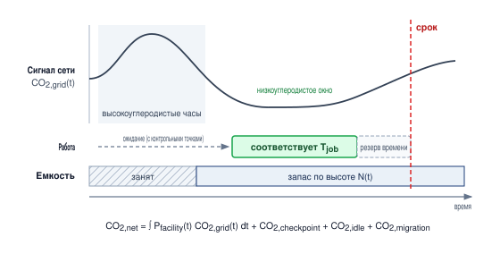
Большой распределённый обучающий запуск потребляет устойчивую суммарную мощность с коррелированными фазовыми переходами, описанными в Глава 15.6.2, но его срок завершения может оставлять гибкость планирования. Контрольные точки, созданные для восстановления после отказов, также дают точки перезапуска для намеренной паузы из Рисунок 19. Для решения нужен локальный прогноз выбросов и достаточный запас по сроку; работа поздним днём или ночью не является универсально предпочтительной. Таким образом, отказоустойчивость даёт механизм гибкости, но не доказывает, что каждая пауза экономит выбросы. У онлайн-инференса бюджеты задержки жёстче, и он может поддерживать ограниченное вытеснение, тогда как офлайн-инференс часто можно отложить свободнее.
↩︎ Механика контрольных точек и выбор их интервала из-за отказов установлены в Контрольные точки и сохранение прогресса.
Кривая утки описывает крутой вечерний подъём чистой нагрузки (суммарный спрос минус переменная выдача солнца и ветра), когда дневная генерация солнца спадает к закату, а бытовое и коммерческое потребление растёт. Поскольку операторы сетей обычно покрывают такой быстрый рост чистой нагрузки запуском быстрых газовых генераторов, вечерний подъём часто совпадает с резким всплеском маржинальной углеродной интенсивности. Постоянная нагрузка дата-центра поднимает базовый уровень чистого спроса, но сама по себе не увеличивает крутизну вечернего подъёма. Гибкая обучающая нагрузка, напротив, может уменьшить и требуемый подъём, и собственные выбросы, сокращая работу в этом интервале. Планировщикам всё же следует действовать по локальным прогнозам и маржинальным сигналам выбросов, а не по фиксированному ежедневному окну паузы, которое игнорировало бы региональные условия генерации и передачи.
Изменчивость возобновляемой генерации усложняет диспетчеризацию батчевого обучения между энергосистемами. В течение одной недели ноября 2023 года почасовой генерационный микс Европейского союза менялся и между днями, и внутри каждого дня (Рисунок 20). Спрос достигал пика ежедневно между 326 GW и 367 GW. Атомная генерация держалась около 73 GW, солнце давало полуденную выдачу, а ветер колебался от 27 GW в Sunday до 111 GW в Thursday. Ветер вносит вклад в эту изменчивость, но на диспетчеризацию ископаемой генерации влияют также спрос, другая генерация, накопители и обмены электроэнергией. Поэтому планированию с учётом углерода нужны региональные прогнозы сети, а не фиксированное предположение о том, какие часы самые «чистые».
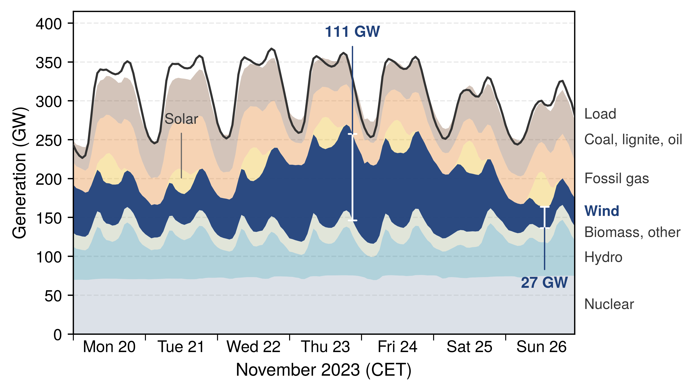
15.9.5 Кейс-стади рамки устойчивости Google
Когда инженеры Google сравнили базовый вариант обучения Transformer с вариантом, сочетавшим более разреженную архитектуру, специальные TPU, эффективный облачный объект и низкоуглеродную сеть, они сообщили о снижении энергопотребления в 83 раза и о снижении операционных выбросов
| Рычаг | Вмешательство | Заявленный эффект эффективности | Пример механизма |
|---|---|---|---|
| Model (модель) | Выбор эффективных ИИ-архитектур, таких как разреженные модели или конструкции, полученные поиском нейроархитектур | В 5–10 |
Evolved Transformer и Primer |
| Machine (машина) | Использование специализированного ИИ-железа вместо систем общего назначения | Улучшение производительности на ватт в 2–5 |
Tensor Processing Units |
| Mechanization (механизация) | Работа оптимизированной облачной инфраструктуры с высокой утилизацией | Снижение энергопотребления в 1.4–2 |
Более низкий PUE объекта, чем отраслевой средний базовый уровень, использованный в исследовании 2021 года |
| Map (размещение) | Размещение дата-центров в регионах с низкоуглеродным электроснабжением | В 5–10 |
Мониторинг использования возобновляемой энергии в реальном времени по всей инфраструктуре |
В (Patterson и др. 2022 г.) снижение энергопотребления в 83 раза и снижение CO2 в 747 раз получены из согласованной учётной модели, подкреплённой измерениями на совместимых нагрузках и границах; перемножение несвязанных наилучших компонентных коэффициентов не установило бы тот же результат. В изученный период ИИ-нагрузки составляли менее 15 процентов общего энергопотребления Google, несмотря на расширяющееся развёртывание. Эта доля — свидетельство об относительном потреблении. Она сама по себе не устанавливает постоянства или снижения абсолютной энергии, когда знаменатель тоже меняется, поэтому инженеры должны оценивать абсолютный рост по измеренным суммам энергии наряду с заявленными улучшениями эффективности.
Эмпирические кейс-стади показывают, как инженерия устойчивого ИИ может улучшать и возможности, и воздействие на окружающую среду. Например, (Patterson и др. 2022 г.) сравнивают GPT-3 с Google GLaM и сообщают об улучшенных метриках качества наряду со сниженными вычислениями обучения и более низкоуглеродными источниками энергии, а статья модели GLaM объясняет архитектуру смеси экспертов, стоящую за этим эффективным масштабированием (Du и др. 2022 г.).
Стратегия из кейс-стади, сочетающая систематические измерения, разработку с учётом углерода, прозрачность отчётности и переход на возобновляемую энергию, даёт практический шаблон для устойчивого масштабирования ИИ. Анализ также показывает, что более ранние экстраполяции завышали энергетические требования ML в разы, игнорируя эмпирические выигрыши в эффективности и границы измерений. Однако технические рычаги экономят углерод только тогда, когда у организаций есть стимул их развёртывать и ограничение, предотвращающее рост от эффекта отдачи, — что приводит инженерный учёт к внешней политике, регулированию и управлению.
15.10 Политика, регулирование и путь вперёд
Цены на электроэнергию вознаграждают некоторые достижения эффективности, но они не обязаны учитывать дефицит воды, выбросы производства или локальные экологические издержки. Учебный кластер может снизить счёт за электричество, переехав в более дешёвый регион, но при этом увеличить свои выбросы. Если в счёте не отражена эта экологическая стоимость, решение о размещении, минимизирующее затраты, может отдать предпочтение площадке с более высокими выбросами. Требования к отчётности обнажают этот компромисс; углеродное ценообразование, условия закупок и другие политические инструменты могут изменить стимулы. Их эффект зависит от того, какие виды деятельности они охватывают и как организации их реализуют.
Для читателя-системщика политика — это плоскость управления, которая меняет целевую функцию. Правила отчётности делают скрытые затраты энергии и воплощённого углерода измеримыми, углеродное ценообразование превращает расположение в переменную планирования, а стандарты закупок делают учёт жизненного цикла частью проектирования инфраструктуры. Регуляторные механизмы из Глава 15.10.1 важны потому, что они определяют, какие оптимизации становятся экономически рациональными в масштабе парка.
15.10.1 Регуляторные механизмы
Организация, обучающая фронтир-модель объёмом свыше
Политика может также вводить ограничение на тарифицируемый ресурс. Гипотетический лимит выбросов для ИИ-операций задавал бы тонны CO2e и допускал торговлю неиспользованными квотами на выбросы по общей логике систем торговли выбросами (ETS).26 Лимит мощности в МВт или энергетический бюджет в MWh ограничивали бы другие величины и не должны называться тем же кредитом. Механизм EU Carbon Border Adjustment Mechanism, напротив, применяется к воплощённым выбросам определённых импортируемых товаров и электроэнергии; он не тарифицирует ИИ-сервис по месту его вычислений.
Стимулы и условия закупок могут менять то, какие дизайны выбирают организации. Грант может поддержать исследования эффективности, а контракт на закупку — требовать заявленных измерений энергии или свидетельств жизненного цикла. Эти условия нуждаются в измеримых критериях, а не в неопределённой метке «зелёный». Выбросы Scope 3 также зависят от того, для чьей описи они готовятся: закупленное оборудование и аутсорснутые облачные услуги попадают в счёт цепочки создания стоимости заказчика, тогда как поставщик классифицирует собственную деятельность внутри своей организационной границы. Одни и те же физические выбросы не должны учитываться дважды лишь потому, что о них сообщают две организации.
15.10.2 Саморегулирование индустрии и стандарты
Облачный провайдер может объявить «100-процентное годовое соответствие возобновляемой энергии», тогда как его дата-центры каждую ночь, когда выработка солнечной энергии падает до нуля, всё ещё потребляют электричество, выработанное на ископаемом топливе. Добровольные обязательства и общие стандарты дополняют государственные требования, но объявленная цель не является доказательством измеренного сокращения. Годовое соответствие возобновляемой энергии и 24/7 безуглеродная энергия (CFE) различаются временным разрешением: почасовое соответствие делает видимыми периоды несоответствующего спроса, тогда как результирующие физические выбросы по-прежнему зависят от генерации и контекста сети (Monyei и Jenkins 2018 г.). Поэтому для оценки прогресса провайдера требуются заявленный метод и результаты, а не только объявленная цель.
Внутреннее углеродное ценообразование придаёт выбросам вес в проектных решениях. «Теневая цена» позволяет организации сравнивать альтернативы с учётом и финансовой стоимости, и приписанных выбросов; её влияние зависит от цены, границы учёта и того, используют ли её лица, принимающие решения. Инструменты измерения поставляют входные данные для такого сравнения. Проекты вроде CodeCarbon и ML CO2 Impact позволяют разработчикам оценивать углеродный след моделей внутри своих рабочих процессов (Schmidt и др. 2021 г.; Lacoste и др. 2019 г.), но оценкам по-прежнему нужны заявленные предположения о мощности, расположении и распределении.
Стандартизованные бенчмарки дают доказательства для конкретных заявлений об эффективности. MLCommons определяет протоколы измерения мощности MLPerf, связывающие энергию системы с производительностью рабочей нагрузки при заявленных условиях. Спецификация Software Carbon Intensity от Green Software Foundation охватывает другую границу, объединяя операционные и распределённые воплощённые выбросы на функциональную единицу. Результат бенчмарка или метод расчёта сам по себе не является независимым аудитом устойчивости. Подотчётность требует проверки заявленных входных данных, охвата и сравнения с утверждением, которое проверяется.
15.10.3 Публичное участие и прозрачность
Отчёт об устойчивости, трубящий о 50-процентном снижении энергии на запрос, но умалчивающий о четырёхкратном расширении общей мощности кластера, или не включающий производство оборудования в свою опись, маскирует растущий след за избирательной границей. Вводящая в заблуждение подача экологических характеристик, или гринвошинг,27 может возникать из-за избирательных границ или опущенных компромиссов, а также из-за неподтверждённых заявлений о компенсациях. Эффективное управление устойчивостью ИИ требует доказательств, соответствующих утверждению: сочетания телеметрии рабочих нагрузок с измерениями на уровне инфраструктуры и описями цепочки поставок. Одних счётчиков мощности во время выполнения недостаточно, чтобы установить полноту Scope 1–3 или экологические издержки производства.
Раскрытие в стиле обещаний полезно, лишь когда оно создаёт аудируемые данные, а не репутационное прикрытие. Montréal Carbon Pledge — изначально обязательство институциональных инвесторов ежегодно измерять и раскрывать углеродные следы — полезная модель именно потому, что его ценность заключается в раскрываемых данных, а не в самом обещании. Тот же стандарт применим к ИИ-организации, чьи заявления об устойчивости столь же достоверны, как лежащая за ними телеметрия уровня рабочих нагрузок.
15.10.4 Экологическая справедливость и ответственное развитие
Когда гипермасштабный дата-центр размещается в страдающей от засух сельскохозяйственной котловине или по соседству с районом, обслуживаемым пиковыми газовыми турбинами, местные жители принимают на себя дефицит воды и загрязнение воздуха, тогда как выходы модели обслуживают пользователей за тысячи миль. Прозрачность создаёт доказательную базу этих воздействий; экологическая справедливость спрашивает, как распределяются обременения и выгоды, выявленные этими доказательствами. Именно при выборе площадки решается значительная часть этого распределения, что делает её решением в области экологической справедливости, а не только инфраструктурным. Экологическая устойчивость расширяет ответственность ML-систем от поведения модели до экологического попечительства (Vinuesa и др. 2020 г.). Вычислительные ресурсы, необходимые для развития ИИ, концентрируют экологические издержки в конкретных сообществах, распределяя выгоды неравномерно среди населения планеты. Дата-центры создают и спрос на сеть, и спрос на охлаждающую воду, причём локальное бремя зависит от энергетического баланса, водосбора и конкурирующих региональных нужд.
Эта географическая концентрация создаёт риски экологической справедливости, которые согласуются с более широкими рамками ответственного ИИ.28 Утверждение о справедливости здесь узкое и специфичное для систем. ML-парк распределяет выгоды, спрос на электричество, потребление воды, давление на землю и электронный мусор между разными сообществами. Сообщества, принимающие ИИ-инфраструктуру, могут нести непропорциональные экологические бремена, имея ограниченный доступ к экономическим выгодам ИИ.
Эти проблемы распределения распадаются на четыре группы (Рисунок 21). Экологическая справедливость касается локального забора воды и нагрузки на сеть. Межпоколенческая справедливость — персистентности атмосферного
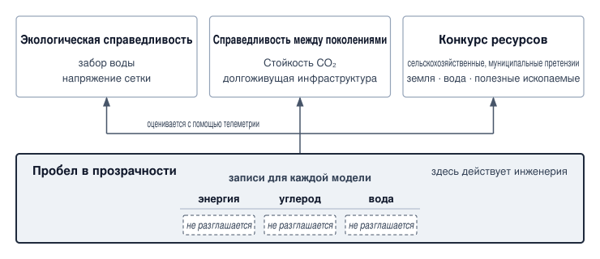
Оценки воздействия и участие сообществ делают эти компромиссы видимыми до того, как площадка закреплена. Любое утверждение, что такая оценка юридически обязательна, должно указывать применимую юрисдикцию, правило и охват проекта. Там, где размещение и управление ограничивают бремя текущих объектов, долгосрочные исследования нацелены на архитектурные и измерительные пределы, которые изначально делают ИИ-нагрузки столь ресурсоёмкими.
15.10.5 Направления будущих исследований
Даже после того как команда применила все рычаги планирования, охлаждения и сжатия из этой главы, обычные ускорители по-прежнему тратят большую часть динамической энергии на перегонку весов и активаций туда и обратно по шинам памяти, а у большинства команд всё ещё нет телеметрии углерода в реальном времени на уровне отдельных заданий. Поэтому исследовательская повестка следует той же инженерной логике, что и рамка смягчения: сократить перемещение данных, закрыть разрыв измерений и избежать избыточных вычислений. Архитектуры вычислений не фон-неймановского типа, включая нейроморфные вычисления и вычисления в памяти, могут сократить отдельные передачи, развивая событийные и спайковые дизайны из Глава 15.9.2.2 от избегания работы к избеганию перемещений. Оставшуюся энергию арифметики, преобразований, управления и периферии следует оценивать при требуемом качестве; устранение одной статьи расходов не устраняет весь счёт системы.
Критический барьер внедрения — «разрыв измерений»: командам ИИ нужны стандартизованные отчёты об энергопотреблении и выбросах углерода на уровне рабочих нагрузок, а не только грубые прокси-метрики (Henderson и др. 2020 г.). Грубые методы часто полагаются на прокси вроде GPU-часов, умноженных на среднюю углеродную интенсивность сети, что не отражает реальную динамику, требуемую режимами отчётности, чувствительными ко времени, расположению и границе рабочей нагрузки. Разработка и стандартизация детальных инструментов учёта энергии и углерода в реальном времени необходимы и для соответствия требованиям, и для эффективной оптимизации.
Второе направление исследований сокращает избыточные вычисления до того, как они достигнут ускорителя. Отбор данных, дизайн модели и процедура обучения влияют на экологическую стоимость обучения (Wu и др. 2022 г.). Более умная выборка данных, активное обучение и оценка ценности данных могут сократить работу на низкоценных примерах, но качество и покрытие результирующей модели должны быть измерены, а не постулированы. Необходим интегрированный подход, сочетающий алгоритмическую эффективность, инновации в оборудовании, переход на возобновляемую энергию и прозрачное управление, чтобы согласовать развитие ИИ с экологическими ограничениями.
Сокращение избыточных вычислений может улучшить операционную эффективность, но соответствие требованиям и экологическая выгода требуют собственных доказательств. Устойчивый дизайн должен показать, что сэкономленная работа переживает полный счёт жизненного цикла и результирующий масштаб развёртывания. Иначе неверные границы или предположения могут превратить локальное улучшение в больший суммарный след.
15.11 Заблуждения и ловушки
Устойчивость сопряжена с контринтуитивной физикой, где улучшения эффективности могут увеличивать общее потребление, а географические решения могут перевешивать оптимизации на уровне компонентов. Эти заблуждения и ловушки отражают ошибки, растрачивающие вычислительные бюджеты и ресурсы планеты из-за неправильно направленных усилий по оптимизации.
Заблуждение: Облачные вычисления автоматически делают ИИ-системы более экологически устойчивыми.
Инженеры предполагают, что облачные провайдеры работают эффективно и устойчиво. Облачная инфраструктура может улучшить утилизацию и эффективность инфраструктуры, но она не устраняет ни физический след, ни ответственность заказчика за учёт. Модель 7B, обученная на 64 A100 в ноутбуке 15.5, выделяет примерно 21.4× столько CO2 на усреднённой по США сети, сколько на гидроэнергетической сети Квебека, причём гидроэнергетический показатель — операционный фактор, а не нулевой по жизненному циклу. Как показано в Глава 15.5, облачные сравнения должны раскрывать регион, энергетическую границу, утилизацию, распределение воплощённого углерода и то, является ли электричество Scope 2 для провайдера или Scope 3 для заказчика.
Ловушка: Сосредоточение только на операционном энергопотреблении при игнорировании воплощённого углерода и воздействий жизненного цикла.
Команды оптимизируют эффективность обучения, игнорируя выбросы производства. В низкоуглеродных сетях воплощённый углерод может доминировать в учёте следа на уровне парка. Как квантифицировано в Глава 15.5.5, ускоритель A100 несёт примерно 150 kg CO2 от производства (Luccioni и др. 2023 г.); для более раннего запуска 14-day на 64 A100 неразнесённое начальное бремя составляет примерно 9.6 t CO2. При амортизации на срок службы 4-year доля, приходящаяся на это конкретное задание, составляет около 90 kg. Сравнение заданий должно использовать эту распределённую долю; сравнение жизненного цикла парка должно вместо этого сопоставлять полное производственное бремя с эксплуатацией за тот же срок службы парка. Сравнение всего производственного бремени с электричеством одного короткого задания смешало бы границы. Продление срока службы оборудования с 3 years до 5 years снижает амортизированный воплощённый углерод на 40 percent, но решения о закупках должны также оценивать операционную стоимость удержания оборудования.
Заблуждение: TDP — это фактическое энергопотребление.
Тепловая расчётная мощность (TDP) — спецификация дизайна оборудования, а не измеренная мощность конкретной рабочей нагрузки. Фактическое потребление зависит от устройства, настроенного лимита мощности, утилизации, трафика памяти, тактовых частот и интервалов простоя. Расчёт на основе TDP — заявленный сценарий ёмкости; он не устанавливает энергию обслуживания или энергию инфраструктуры. Оценки углерода и стоимости электричества, определяющие решения о размещении (Глава 15.5), должны использовать измеренную мощность за интервал рабочей нагрузки и включать вспомогательные системы в выбранной границе.
Ловушка: Использование PUE как исчерпывающего экологического показателя.
Операторы дата-центров указывают PUE в отчётах об устойчивости, и инженеры могут воспринимать его как полную экологическую оценку. PUE измеряет лишь энергию объекта относительно энергии ИТ-оборудования. Объект с более низким PUE всё равно может вызывать больше выбросов, связанных с электричеством, если углеродная интенсивность его сети достаточно выше, а ни один из этих факторов не учитывает производство оборудования или локальный дефицит воды. Сравнивайте сопоставимые коэффициенты выбросов и полные границы жизненного цикла, а не ранжируйте площадки только по PUE.
Заблуждение: Повышение эффективности автоматически снижает суммарное воздействие на окружающую среду.
Инженеры полагают, что сокращение стоимости инференса вдвое уменьшает экологическое воздействие вдвое. Парадокс Джевонса предупреждает: повышение эффективности может увеличить суммарное потребление, открывая возможность расширенного использования. В сценарии отдачи (rebound) предположим, что снижение стоимости токенов с $0.06 до $0.002 за 1 000 токенов сопровождается пропорциональным снижением 30× измеренной энергии на запрос при фиксированной длине и качестве выходных данных. Тогда рост объёма запросов в 100× раз увеличивает суммарную энергию в 3.3×, а при неизменной углеродной интенсивности сети — выбросы во столько же раз. Любое изменение реализации, снижающее энергию на запрос, всё равно может увеличить суммарную энергию, если использование растёт бо́льшим фактором. Поэтому командам следует сопоставлять объём развёртывания с целевым бюджетом углерода или ресурсов. Сами по себе выигрыши на запрос не контролируют эффект отдачи, показанный в Рисунок 18, где красная область нового потребления при меньшей удельной стоимости полностью поглощает зелёную область исходной экономии за счёт эффективности.
Ловушка: Считать углеродные компенсации заменой фактического сокращения выбросов.
Организации могут приобретать компенсации, не установив, что зачтённое сокращение является дополнительным, долговременным, независимо проверенным и свободным от двойного учёта. Компенсация не изменяет электричество, потребляемое рабочей нагрузкой, и её непосредственные выбросы. Командам следует сообщать о физических сокращениях выбросов отдельно от заявлений о компенсации, с видимой границей компенсации и неопределённостью. Географическое размещение может сократить выбросы, связанные с электричеством, когда это подтверждает полное сравнение рабочих нагрузок; ни покупка компенсации, ни ярлык возобновляемой энергии не заменяют этот расчёт.
Заблуждение: Оптимизация на уровне компонентов гарантирует улучшение жизненного цикла.
Команды снижают стоимость обучения ради устойчивости, не анализируя масштаб развёртывания. Изменение в обучении, увеличивающее энергию обслуживания, нужно оценивать по ожидаемому объёму запросов: точка пересечения наступает, когда накопленные дополнительные выбросы обслуживания превышают единовременную экономию на обучении. Развёртывание на периферии (edge) добавляет к любым избегнутым выбросам дата-центра и передачи данных производство и замену устройств. Продление срока службы оборудования исключает новое производство, но может потреблять больше энергии при эксплуатации, чем замена. Каждое сравнение требует одинаковой полезной услуги, границы сетевого коэффициента и срока службы; универсального числа запросов или возраста обновления, которое это решает, не существует. Эффективная устойчивость требует полного учёта из Глава 15.5.6.
Ловушка: Оценка устойчивости на границе компонента вместо границы жизненного цикла.
Прореженная модель может содержать меньше весов, в то время как её разреженное представление добавляет накладные расходы на индексацию и исполнение. Если эти затраты перевешивают избегнутые арифметические операции и пересылки, меньшая модель не обязательно потребляет меньше энергии. Та же ошибка границы возникает, когда аппаратные команды сообщают об эффективности ускорителя без углерода производства, платформенные команды — о PUE без углеродной интенсивности сети, а команды моделей — о выбросах обучения без ожидаемого объёма обслуживания. Граница жизненного цикла в Глава 15.5.6 требует оценивать обучение, обслуживание, воплощённый углерод, региональный состав сети, срок службы оборудования и рост спроса совместно, прежде чем объявлять изменение устойчивым.
15.12 Итоги
Граница жизненного цикла связывает обучение, обслуживание, воплощённый углерод, состав сети, срок службы оборудования и рост спроса. Устойчивый ИИ спрашивает, может ли парк машинного обучения работать в пределах доступной энергии, воды и материалов даже после оптимизации его моделей и инфраструктуры.
Контракт измерений делает сравнения осмысленными, фиксируя полезную работу, требуемое качество, границы системы, атрибуцию, время, место и неопределённость. Учёт операционного и воплощённого углерода затем показывает, какой член жизненного цикла может изменить то или иное вмешательство. Трафик памяти, простаивающее оборудование, охлаждение и подача питания могут потреблять энергию сверх полезной арифметики; одно лишь меньшее число FLOP не доказывает меньшее воздействие на окружающую среду.
Закон парка связывает время исполнения с энергетическим счётом парка. Энергия шага приблизительно равна средней мощности парка, умноженной на
Смягчение следует за этой диагностикой. Изменения алгоритмов и оборудования должны снижать измеренное потребление ресурсов, сохраняя качество, задержку и надёжность; планирование должно учитывать углеродную интенсивность сети и стоимость перемещения работы; замена оборудования должна взвешивать операционную экономию против выбросов нового производства. Доступность воды и распределение экологического бремени также имеют значение при выборе того, где и как может расти парк.
Основные выводы: Одной эффективности недостаточно
- Мощность — жёсткий потолок: парк не может вычислять сверх мегаватт, охлаждения, воды и пропускной способности сети, которые может предоставить площадка. Устойчивость — поэтому ограничение существования масштаба модели, а не слой пиара вокруг готовой архитектуры.
- След хорош настолько, насколько хороша его граница: показатель энергии или углерода поддерживает сравнение, только когда названы функциональная единица, границы системы, правило атрибуции, углеродный сигнал, время и место. Одна лишь граница может более чем удвоить энергию, сообщаемую для одного и того же промпта.
- Спрос может обогнать эффективность: меньшая энергия на запрос не гарантирует меньшего потребления энергии парком. При фиксированной работе на запрос суммарная энергия растёт, когда объём запросов растёт большим фактором, чем падает энергия на запрос, поэтому целям эффективности нужен абсолютный бюджет ресурсов.
- Трафик памяти может доминировать в энергии обслуживания: во время ограниченного пропускной способностью памяти авторегрессионного декодирования ускорители могут потреблять мощность, ожидая веса и состояние. Квантизация, формирование батчей или оптимизированное под память оборудование помогают устойчивости только когда они снижают измеренную энергию при требуемых качестве, задержке и надёжности.
- Углерод начинается до загрузки: производство оборудования создаёт выбросы до первого запроса, и его доля в жизненном цикле растёт на чистых сетях и при низкой утилизации. Поэтому хранение или замена оборудования требуют сравнения выбросов нового производства с операционной экономией за одно и то же будущее обслуживание.
- Расположение меняет след: перенос гибкой работы на более чистую сеть сокращает операционный углерод только когда экономия превышает выбросы передачи, перезапуска и простаивающих мощностей. Размещение также должно сохранять дедлайны, доступ к данным, ёмкость и надёжность; одни лишь региональные коэффициенты интенсивности не доказывают чистую выгоду.
- Вода — отдельный счёт: испарительное охлаждение экономит энергию объекта, потребляя локальную воду, а сухое охлаждение экономит эту воду, расходуя электричество, чья генерация потребляет воду в другом месте. Сообщайте об изъятии и потреблении, прямых и косвенных, взвешенных по напряжённости каждого водораздела.
Устойчивость меняет масштаб, на котором нужно оценивать эффективность. Сокращение на запрос — локальный результат; результат парка зависит от того, сколько запросов выполняется, где они выполняются и какое оборудование требует их обслуживание со временем. Две силы толкают спрос мимо эффективности. Первая — рост от масштабирования: законы масштабирования (принцип «Законы масштабирования ИИ») назначают цену каждому дальнейшему приросту качества в большем количестве вычислений на модель. Вторая — парадокс Джевонса для ИИ (принцип «Парадокс Джевонса»): более дешёвая работа приглашает больше работы. Обе делают существенным различие между эффективностью на задачу и абсолютным спросом, потому что эффективность создаёт пространство в бюджете ресурсов, а спрос определяет, сколько этого пространства потребляется. Решениям о развёртывании нужны и цель эффективности полезной работы, и абсолютный бюджет ресурсов.
Дальнейшие шаги: От устойчивости к ответственности
Парк, который защищён, устойчив к отказам и укладывается в бюджет мощности, не обязательно пригоден к развёртыванию. Безопасность, отказоустойчивость и устойчивость отвечают каждая на технический вопрос о том, что может выдержать производственная система. Глава 15.10.4 уже показал, что работоспособный парк может возложить своё бремя воды, сети и отходов на сообщества, которые почти не видят его пользы. Решения модели поднимают тот же вопрос о людях, на которых они действуют. Точная и быстрая модель всё ещё может концентрировать свои ошибки среди людей с малой возможностью их оспорить. Поэтому ответственный ИИ спрашивает, кто получает выгоды системы, кто несёт её издержки и как затронутый человек может оспорить решение. Составленный здесь углеродный инвентарь и учёт жизненного цикла становятся одним из входов для обоснования гарантий (assurance case), отвечающего на этот вопрос. Они поставляют доказательства для этого суждения; они не решают, чьим интересам должен служить парк.
↪ Фреймворки управления, алгоритмическая справедливость и этические ограничители развиваются в Ответственный ИИ.
использованная литература
Anthony, L. F. W., B. Kanding, и R. Selvan. 2020 г. Carbontracker: Tracking and Predicting the Carbon Footprint of Training Deep Learning Models. ICML Workshop on Challenges in Deploying and monitoring Machine Learning Systems.
Baldé, Cornelis P, Vanessa Forti, Vanessa Gray, Ruediger Kuehr, и Paul Stegmann. 2017 г. «The Global E-Waste Monitor 2017: Quantities, Flows and Resources». United Nations University, International Telecommunication Union, International Solid Waste Association.https://www.itu.int/en/ITU-D/Climate-Change/Documents/GEM%202017/Global-E-waste%20Monitor%202017%20.pdf .
Banbury, Colby, Vijay Janapa Reddi, Peter Torelli, и др. 2021 г. «MLPerf Tiny Benchmark». arXiv preprint. http://arxiv.org/abs/2106.07597v4.
Barroso, Luiz André, Urs Hölzle, и Parthasarathy Ranganathan. 2019 г. The Datacenter as a Computer: Designing Warehouse-Scale Machines. Synthesis Lectures on Computer Architecture. Springer International Publishing. https://doi.org/10.1007/978-3-031-01761-2.
Buyya, Rajkumar, Anton Beloglazov, и Jemal Abawajy. 2010 г. «Energy-Efficient Management of Data Center Resources for Cloud Computing: A Vision, Architectural Elements, and Open Challenges». arXiv preprint arXiv:1006.0308, 6–17. https://doi.org/10.48550/arXiv.1006.0308.
Cenci, Marcelo Pilotto, Tatiana Scarazzato, Daniel Dotto Munchen, и др. 2021 г. «Eco-Friendly Electronics—a Comprehensive Review». Advanced Materials Technologies 7 (2): 2001263. https://doi.org/10.1002/admt.202001263.
Chen, H.-W. 2006 г. «Gallium, Indium, and Arsenic Pollution of Groundwater From a Semiconductor Manufacturing Area of Taiwan». Bulletin of Environmental Contamination and Toxicology 77 (2): 289–96. https://doi.org/10.1007/s00128-006-1062-3.
Chung, Jae-Won, Yile Gu, Insu Jang, Luoxi Meng, Nikhil Bansal, и Mosharaf Chowdhury. 2023 г. «Reducing Energy Bloat in Large Model Training». Proceedings of the ACM SIGOPS 30th Symposium on Operating Systems Principles abs/2312.06902: 144–59. https://doi.org/10.1145/3694715.3695970.
Cooper, Tom, Suzanne Fallender, Joyann Pafumi, Jon Dettling, Sebastien Humbert, и Lindsay Lessard. 2011 г. «A semiconductor company’s examination of its water footprint approach». Proceedings of the 2011 IEEE International Symposium on Sustainable Systems and Technology, 1–6. https://doi.org/10.1109/issst.2011.5936865.
Cottier, Ben, Robi Rahman, Loredana Fattorini, Nestor Maslej, Tamay Besiroglu, и David Owen. 2024 г. «The rising costs of training frontier AI models». arXiv preprint arXiv:2405.21015. https://arxiv.org/abs/2405.21015.
Dayarathna, Miyuru, Yonggang Wen, и Rui Fan. 2016 г. «Data Center Energy Consumption Modeling: A Survey». IEEE Communications Surveys & Tutorials 18 (1): 732–94. https://doi.org/10.1109/comst.2015.2481183.
Dodge, Jesse, Taylor Prewitt, Remi Tachet des Combes, и др. 2022 г. «Measuring the Carbon Intensity of AI in Cloud Instances». 2022 ACM Conference on Fairness Accountability and Transparency, 1877–94. https://doi.org/10.1145/3531146.3533234.
Du, Nan, Yanping Huang, Andrew M. Dai, и др. 2022 г. «GLaM: Efficient Scaling of Language Models with Mixture-of-Experts». В International Conference on Machine Learning (ICML), под редакцией Kamalika Chaudhuri, Stefanie Jegelka, Le Song, Csaba Szepesvari, Gang Niu, и Sivan Sabato, т. 162. Proceedings of Machine Learning Research. PMLR. https://proceedings.mlr.press/v162/du22c.html.
Dubey, Abhimanyu, Abhinav Jauhri, Abhinav Pandey, Abhishek Kadian, и др. 2024 г. The Llama 3 Herd of Models. arXiv preprint arXiv:2407.21783. https://arxiv.org/abs/2407.21783.
Ebrahimi, K., G. F. Jones, и A. S. Fleischer. 2014 г. «A review of data center cooling technology, operating conditions and the corresponding low-grade waste heat recovery opportunities». Renewable and Sustainable Energy Reviews 31: 622–38. https://doi.org/10.1016/j.rser.2013.12.007.
Elsken, Thomas, Jan Hendrik Metzen, и Frank Hutter. 2019 г. «Neural Architecture Search». В The Springer Series on Challenges in Machine Learning, т. 20. Springer International Publishing. https://doi.org/10.1007/978-3-030-05318-5_3.
Elsworth, Cooper, Keguo Huang, David Patterson, и др. 2025 г. «Measuring the environmental impact of delivering AI at Google scale». arXiv preprint arXiv:2508.15734. https://arxiv.org/abs/2508.15734.
Environmental Management—Water Footprint—Principles, Requirements and Guidelines, Legislation Nos. ISO 14046:2014 (2014 г.). https://www.iso.org/standard/43263.html.
Epoch AI. 2026 г. Notable AI Models. https://epoch.ai/data/notable-ai-models.
Evans, Richard, и Jim Gao. 2016 г. DeepMind AI Reduces Google Data Centre Cooling Bill by 40%. DeepMind Blog.https://deepmind.google/discover/blog/deepmind-ai-reduces-google-data-centre-cooling-bill-by-40/ .
Federal Trade Commission. 2021 г. Nixing the Fix: An FTC Report to Congress on Repair Restrictions. Federal Trade Commission. https://www.ftc.gov/reports/nixing-fix-ftc-report-congress-repair-restrictions.
Forti, V., C. P. Baldé, R. Kuehr, и G. Bel. 2020 г. The Global E-waste Monitor 2020: Quantities, Flows and the Circular Economy Potential. United Nations University/United Nations Institute for Training and Research; International Telecommunication Union; International Solid Waste Association. https://ewastemonitor.info/gem-2020/.
Gao, J. 2014 г. Machine Learning Applications for Data Center Optimization. Google; Google White Paper. https://static.googleusercontent.com/media/research.google.com/en//pubs/archive/42542.pdf.
Gholami, Amir, Sehoon Kim, Zhen Dong, Zhewei Yao, Michael W. Mahoney, и Kurt Keutzer. 2022 г. «A Survey of Quantization Methods for Efficient Neural Network Inference». В Low-Power Computer Vision: Improve the Efficiency of Artificial Intelligence. Chapman; Hall/CRC. https://doi.org/10.1201/9781003162810-13.
Google. 2023 г. Power usage effectiveness: Google data centers. https://datacenters.google/efficiency/.
Government of Ireland. 2022 г. Government Statement on the Role of Data Centres in Ireland’s Enterprise Strategy. Government policy statement.https://enterprise.gov.ie/en/publications/publication-files/government-statement-on-the-role-of-data-centres-in-irelands-enterprise-strategy.pdf .
Grossman, E. 2007 г. High tech trash: Digital devices, hidden toxics, and human health. Island press.
Gupta, Udit, Young Geun Kim, Sylvia Lee, и др. 2022 г. «Chasing Carbon: The Elusive Environmental Footprint of Computing». IEEE Micro 42 (4): 37–47. https://doi.org/10.1109/MM.2022.3163226.
Henderson, Peter, Jieru Hu, Joshua Romoff, Emma Brunskill, Dan Jurafsky, и Joelle Pineau. 2020 г. «Towards the Systematic Reporting of the Energy and Carbon Footprints of Machine Learning». CoRR abs/2002.05651 (248): 1–43. https://doi.org/10.48550/arxiv.2002.05651.
Hinton, Geoffrey, Oriol Vinyals, и Jeff Dean. 2015 г. «Distilling the Knowledge in a Neural Network». arXiv preprint. http://arxiv.org/abs/1503.02531v1.
Horowitz, Mark. 2014 г. «1.1 Computing’s energy problem (and what we can do about it)». 2014 IEEE International Solid-State Circuits Conference Digest of Technical Papers (ISSCC), 10–14. https://doi.org/10.1109/isscc.2014.6757323.
Hsu, Liang-Ching, Ching-Yi Huang, Yen-Hsun Chuang, и др. 2016 г. «Accumulation of heavy metals and trace elements in fluvial sediments received effluents from traditional and semiconductor industries». Scientific Reports 6 (1): 34250. https://doi.org/10.1038/srep34250.
International Energy Agency. 2023 г. World Energy Outlook 2023. IEA. https://doi.org/10.1787/827374a6-en.
International Energy Agency. 2024 г. Data Centre Electricity Demand Estimates as a Share of Total Electricity Demand in Ireland and Virginia, 2023. IEA chart.https://www.iea.org/data-and-statistics/charts/data-centre-electricity-demand-estimates-as-a-share-of-total-electricity-demand-in-ireland-and-virginia-2023 .
International Energy Agency. 2025 г. Energy and AI. https://www.iea.org/reports/energy-and-ai.
International Organization for Standardization. 2006 г.a. ISO 14040:2006 Environmental Management – Life Cycle Assessment – Principles and Framework. ISO standard. https://www.iso.org/standard/37456.html.
International Organization for Standardization. 2006 г.b. ISO 14044:2006 Environmental Management – Life Cycle Assessment – Requirements and Guidelines. ISO standard. https://www.iso.org/standard/38498.html.
Irimia-Vladu, M. 2014 г. «„Green“ electronics: biodegradable and biocompatible materials and devices for sustainable future». Chemical Society Reviews 43 (2): 588–610. https://doi.org/10.1039/c3cs60235d.
Jevons, William Stanley. 1865 г. The Coal Question: An Inquiry Concerning the Progress of the Nation, and the Probable Exhaustion of Our Coal Mines. Macmillan; Co. https://www.econlib.org/library/YPDBooks/Jevons/jvnCQ.html.
Jha, A. R. 2014 г. Rare Earth Materials: Properties and Applications. CRC Press. https://doi.org/10.1201/b17045.
Kaplan, Jared, Sam McCandlish, Tom Henighan, и др. 2020 г. «Scaling Laws for Neural Language Models». ArXiv preprint abs/2001.08361. http://arxiv.org/abs/2001.08361v1.
Kim, Sunju, Chungsik Yoon, Seunghon Ham, и др. 2018 г. «Chemical use in the semiconductor manufacturing industry». International Journal of Occupational and Environmental Health 24 (3-4): 109–18. https://doi.org/10.1080/10773525.2018.1519957.
Lacoste, Alexandre, Alexandra Luccioni, Victor Schmidt, и Thomas Dandres. 2019 г. «Quantifying the Carbon Emissions of Machine Learning». arXiv preprint arXiv:1910.09700. http://arxiv.org/abs/1910.09700v2.
Langston, Jennifer. 2020 г. Microsoft Announces New Supercomputer, Lays Out Vision for Future AI Work. Microsoft Source. https://news.microsoft.com/source/features/ai/openai-azure-supercomputer/.
Lannelongue, Loı̈c, Jason Grealey, и Michael Inouye. 2021 г. «Green Algorithms: Quantifying the Carbon Footprint of Computation». Advanced Science 8 (12): 2100707. https://doi.org/10.1002/advs.202100707.
Luccioni, Alexandra Sasha, Sylvain Viguier, и Anne-Laure Ligozat. 2023 г. «Estimating the Carbon Footprint of BLOOM, a 176B Parameter Language Model». Journal of Machine Learning Research 24 (253): 1–15. https://jmlr.org/papers/v24/23-0069.html.
Luccioni, Sasha, Boris Gamazaychikov, Theo Alves da Costa, и Emma Strubell. 2025 г. «Misinformation by omission: The need for more environmental transparency in AI». arXiv preprint arXiv:2506.15572. https://arxiv.org/abs/2506.15572.
Masanet, Eric, Arman Shehabi, Nuoa Lei, Sarah Smith, и Jonathan Koomey. 2020 г. «Recalibrating global data center energy-use estimates». Science 367 (6481): 984–86. https://doi.org/10.1126/science.aba3758.
Meta AI. 2024 г. Llama 3.1 model card. https://github.com/meta-llama/llama-models/blob/main/models/llama3_1/MODEL_CARD.md.
ML.ENERGY Initiative, Jae-Won Chung, Jiachen Gu, и др. 2023 г. The ML.ENERGY Leaderboard. SymbioticLab, University of Michigan. https://ml.energy/leaderboard/.
Monyei, C. G., и Kirsten E. H. Jenkins. 2018 г. «Electrons have no identity: Setting right misrepresentations in Google and Apple’s clean energy purchasing». Energy Research & Social Science 46: 48–51. https://doi.org/10.1016/j.erss.2018.06.015.
NVIDIA Corporation. 2025 г. Product Carbon Footprint Summary for NVIDIA HGX H100. NVIDIA Datasheet. https://images.nvidia.com/aem-dam/Solutions/documents/HGX-H100-PCF-Summary.pdf.
Patterson, David, Joseph Gonzalez, Urs Holzle, и др. 2022 г. «The Carbon Footprint of Machine Learning Training Will Plateau, Then Shrink». Computer 55 (7): 18–28. https://doi.org/10.1109/mc.2022.3148714.
Patterson, David, Joseph Gonzalez, Quoc Le, и др. 2021 г. «Carbon Emissions and Large Neural Network Training». arXiv preprint arXiv:2104.10350. https://arxiv.org/abs/2104.10350.
Prakash, Shvetank, Matthew Stewart, Colby Banbury, и др. 2023 г. «Is TinyML Sustainable? Assessing the Environmental Impacts of Machine Learning on Microcontrollers». ArXiv preprint abs/2301.11899. http://arxiv.org/abs/2301.11899v3.
Present, Elaina, Pieter Gagnon, Eric J. H. Wilson, Noel Merket, Philip R. White, и Scott Horowitz. 2024 г. Choosing the Best Carbon Factor for the Job: Exploring Available Carbon Emissions Factors and the Impact of Factor Selection. NREL/CP-5500-86682. National Renewable Energy Laboratory. https://www.nrel.gov/docs/fy24osti/86682.pdf.
Radovanovic, Ana, Ross Koningstein, Ian Schneider, и др. 2021 г. «Carbon-Aware Computing for Datacenters». arXiv preprint arXiv:2106.11750, advance online publication. https://doi.org/10.48550/arXiv.2106.11750.
Raffel, C., N. Shazeer, A. Roberts, и др. 2020 г. «Exploring the Limits of Transfer Learning with a Unified Text-to-Text Transformer». Journal of Machine Learning Research 21 (140): 1–67. https://www.jmlr.org/papers/v21/20-074.html.
Rhodes, Christopher J. 2019 г. «Endangered Elements, Critical Raw Materials and Conflict Minerals». Science Progress 102 (4): 304–50. https://doi.org/10.1177/0036850419884873.
Sanh, Victor, Lysandre Debut, Julien Chaumond, и Thomas Wolf. 2019 г. «DistilBERT, a distilled version of BERT: smaller, faster, cheaper and lighter». arXiv preprint arXiv:1910.01108, advance online publication. https://doi.org/10.48550/arXiv.1910.01108.
Schmidt, Victor, Kamal Goyal, Aditya Joshi, и др. 2021 г. CodeCarbon: Estimate and Track Carbon Emissions from Machine Learning Computing. Zenodo software citation. https://doi.org/10.5281/zenodo.4658424.
Schneider, Ian, и Taylor Mattia. 2024 г. «Carbon accounting in the cloud: A methodology for allocating emissions across data center users». arXiv preprint arXiv:2406.09645. https://arxiv.org/abs/2406.09645.
Schneider, Ian, Hui Xu, Stephan Benecke, и др. 2025 г. «Life-cycle emissions of AI hardware: A cradle-to-grave approach and generational trends». arXiv preprint arXiv:2502.01671. https://arxiv.org/abs/2502.01671.
Schwartz, Roy, Jesse Dodge, Noah A. Smith, и Oren Etzioni. 2020 г. «Green AI». Communications of the ACM 63 (12): 54–63. https://doi.org/10.1145/3381831.
Sevilla, Jaime, Lennart Heim, Anson Ho, Tamay Besiroglu, Marius Hobbhahn, и Pablo Villalobos. 2022 г. «Compute Trends Across Three Eras of Machine Learning». 2022 International Joint Conference on Neural Networks (IJCNN), 1–8. https://doi.org/10.1109/ijcnn55064.2022.9891914.
Shehabi, Arman, Sarah Josephine Smith, Alex Hubbard, и др. 2024 г. 2024 United States Data Center Energy Usage Report. LBNL-2001637. Lawrence Berkeley National Laboratory. https://doi.org/10.71468/P1WC7Q.
Singh, Narendra, и Oladele A. Ogunseitan. 2022 г. «Disentangling the worldwide web of e-waste and climate change co-benefits». Circular Economy 1 (2): 100011. https://doi.org/10.1016/j.cec.2022.100011.
Slade, G. 2007 г. Made to Break: Technology and Obsolescence in America. Harvard University Press. https://doi.org/10.4159/9780674043756.
Smith, Sarah J., Alexander Hubbard, Alex Newkirk, и др. 2026 г. United States Data Center Energy Usage Report: 2025 Update. LBNL-2001758. Lawrence Berkeley National Laboratory. https://doi.org/10.71468/P1RP4F.
Stahel, Walter R. 2016 г. «The circular economy». Nature 531 (7595): 435–38. https://doi.org/10.1038/531435a.
Statista. 2022 г. Number of Internet of Things (IoT) connected devices worldwide from 2019 to 2030. https://www.statista.com/statistics/802690/worldwide-connected-devices-by-access-technology/.
Strubell, Emma, Ananya Ganesh, и Andrew McCallum. 2019 г. «Energy and Policy Considerations for Deep Learning in NLP». Proceedings of the 57th Annual Meeting of the Association for Computational Linguistics, 3645–50. https://doi.org/10.18653/v1/p19-1355.
Sudhakar, Soumya, Vivienne Sze, и Sertac Karaman. 2023 г. «Data Centers on Wheels: Emissions From Computing Onboard Autonomous Vehicles». IEEE Micro 43 (1): 29–39. https://doi.org/10.1109/mm.2022.3219803.
The Green Grid. 2007 г. Green Grid Data Center Power Efficiency Metrics: PUE and DCIE. The Green Grid.
The Green Grid. 2011 г. Water Usage Effectiveness (WUE): A Green Grid Data Center Sustainability Metric. White Paper 35. The Green Grid. https://www.thegreengrid.org/system/files/store/WUE_v1.pdf.
Thompson, N. C., K. Greenewald, K. Lee, и G. F. Manso. 2021 г. «Deep Learning’s Diminishing Returns: The Cost of Improvement Is Becoming Unsustainable». IEEE Spectrum 58 (10): 50–55. https://doi.org/10.1109/mspec.2021.9563954.
Uddin, Mueen, и Azizah Abdul Rahman. 2012 г. «Energy efficiency and low carbon enabler green IT framework for data centers considering green metrics». Renewable and Sustainable Energy Reviews 16 (6): 4078–94. https://doi.org/10.1016/j.rser.2012.03.014.
Uptime Institute. 2022 г. Uptime Institute Global Data Center Survey 2022. Uptime Institute.
Vinuesa, Ricardo, Hossein Azizpour, Iolanda Leite, и др. 2020 г. «The Role of Artificial Intelligence in Achieving the Sustainable Development Goals». Nature Communications 11 (1): 233. https://doi.org/10.1038/s41467-019-14108-y.
World Resources Institute, и World Business Council for Sustainable Development. 2023 г. Greenhouse Gas Protocol: Corporate Standard. https://ghgprotocol.org/corporate-standard.
Wu, Carole-Jean, Ramya Raghavendra, Udit Gupta, и др. 2022 г. «Sustainable AI: Environmental implications, challenges and opportunities». Proceedings of Machine Learning and Systems 4: 795–813.
Wynsberghe, Aimee van. 2021 г. «Sustainable AI: AI for Sustainability and the Sustainability of AI». AI and Ethics 1: 213–18. https://doi.org/10.1007/s43681-021-00043-6.
Xu, Dianlei, Tong Li, Yong Li, и др. 2020 г. «Edge Intelligence: Architectures, Challenges, and Applications». arXiv preprint arXiv:2003.12172. https://arxiv.org/abs/2003.12172.
You, Jie, Jae-Won Chung, и Mosharaf Chowdhury. 2023 г. «Zeus: Understanding and Optimizing GPU Energy Consumption of DNN Training». 20th USENIX Symposium on Networked Systems Design and Implementation (NSDI 23), 119–39. https://www.usenix.org/conference/nsdi23/presentation/you.
Zafrir, Ofir, Guy Boudoukh, Peter Izsak, и Moshe Wasserblat. 2019 г. «Q8BERT: Quantized 8Bit BERT». 2019 Fifth Workshop on Energy Efficient Machine Learning and Cognitive Computing - NeurIPS Edition (EMC2-NIPS), 36–39. https://doi.org/10.1109/emc2-nips53020.2019.00016.
Сноски
Масштаб энергии в джоулях: A100, смоделированная на своём расчётном тепловом лимите (TDP), потребляет 400 J каждую секунду (400 W); фактическая мощность рабочей нагрузки требует измерения. У обучения больших моделей нет единственного обоснованного диапазона в джоулях: размер модели, количество ускорителей, реализованная мощность, утилизация и длительность прогона способны сместить суммарную энергию на порядки. Инженерный урок состоит в пересчёте от повторяющихся затрат на отдельные операции к энергии площадки, поэтому в этой главе приводится измеренная или смоделированная энергия рабочих нагрузок, а не привязка каждого большого прогона к одному фиксированному диапазону.↩ Вернуться к тексту
Промышленный масштаб центров обработки данных: Прогноз МЭА — это метрика спроса на электричество, не сравнимая напрямую с долями авиации или цемента в мировых выбросах. ИИ-инфраструктура конкурирует с другими нагрузками за доступную мощность; расширение требует свободной ёмкости, дополнительной поставки или снижения либо сдвига конкурирующего спроса, а не обязательно новой генерации в том же регионе.↩ Вернуться к тексту
Воплощённый углерод производства GPU: Углеродный след продукта NVIDIA HGX H100 составляет 1,312 kg CO2e (CO2-эквивалент, выражающий другие парниковые газы как массу CO2 с тем же эффектом потепления) для платы с восемью H100, или примерно 164 kg CO2e на один H100 при равномерном распределении по восьми GPU (NVIDIA Corporation 2025 г.). Производство по передовым техпроцессам также потребляет сверхчистую воду, специальные газы и химикаты, невидимые для учёта одной лишь энергии, поэтому величина углерода на GPU занижает полный производственный след.↩ Вернуться к тексту
Электронные отходы ИИ-оборудования: Вывод ускорителя из эксплуатации не обязательно создаёт отходы: оборудование может быть повторно развёрнуто, продано или переработано. Воздействие утилизации следует оценивать по фактическому парку оборудования, составу материалов и маршруту окончания срока службы. Продление срока полезной службы может отложить производство и утилизацию, а сертифицированная обработка ограничивает воздействие опасных материалов в выброшенной электронике.↩ Вернуться к тексту
Масштабирование Деннарда: Роберт Деннард показал в 1974 году, что меньшие транзисторы могут работать при постоянной плотности мощности, если уменьшать напряжение пропорционально. Этот закономерный режим завершился около 2005 года, когда ток утечки сделал дальнейшее снижение напряжения непрактичным. Обсуждение масштабирования Деннарда в Энергетические и тепловые лимиты привело к следствию для инфраструктуры: каждое обновление оборудования должно укладываться в установленную мощность и охлаждение. Следствие для устойчивости ИИ столь же прямое: без масштабирования Деннарда каждое поколение техпроцесса больше не даёт пропорциональной экономии мощности, что смещает работу по эффективности в сторону специализированных ускорителей — таких как GPU и Tensor Processing Unit (TPU), — эксплуатирующих архитектурный параллелизм, а не только физику транзисторов.↩ Вернуться к тексту
Накладные расходы на коммуникацию при обучении: Распределённое обучение добавляет в энергетический счёт сетевые пересылки, простои на синхронизацию и ввод-вывод контрольных точек. Доля зависит от нагрузки и топологии: стратегия параллелизма, размеры тензоров, технология линков, потеря утилизации и любые дополнительные итерации определяют, станет ли коммуникация второстепенным слагаемым или связующей энергетической стоимостью. Поэтому энергетическая оценка должна измерять или моделировать эти слагаемые для конкретного запуска, а не применять универсальный процент.↩ Вернуться к тексту
Память оптимизатора как стоимость энергии: Adaptive Moment Estimation (Adam) хранит оценки первого и второго моментов для каждого параметра, в отличие от простого стохастического градиентного спуска (SGD). Для модели на 70B параметров в FP32 эти два буфера моментов составляют около 560 GB, доводя сумму параметров и моментов примерно до 840 GB (без учёта градиентов). Вывод для устойчивости прям: большее состояние оптимизатора означает больше трафика в памяти вне чипа на каждый шаг обучения, а при примерно 160 pJ/byte за доступ к DRAM перемещение данных в памяти может доминировать в бюджете энергии обновления параметров.↩ Вернуться к тексту
Вариативность углеродной интенсивности: Региональные средние и изменяющиеся во времени углеродные факторы сети отвечают на разные вопросы. Фактор жизненного цикла технологии генерации не является ни измеренным региональным средним, ни откликом предельных выбросов на другую задачу. Планировщик должен выбрать сигнал, соответствующий его решению, и сохранить источник, период и границу.↩ Вернуться к тексту
Точка безубыточности воплощённого углерода: Воплощённый углерод покрывает производство, транспортировку и утилизацию в конце срока службы, но не эксплуатацию. Распределение углеродного следа продукта NVIDIA HGX H100 baseboard равномерно на восемь GPU даёт примерно 164 kg CO2e на H100 (NVIDIA Corporation 2025 г.); при условии непрерывной мощности ускорителя 700 W на средней сети США модельные операционные выбросы сравниваются с этим распределением примерно за три-четыре недели. Это сравнение опускает накладные расходы хоста и объекта и использует номинальную мощность, а не измеренную трассу нагрузки. Более чистая сеть удлиняет модельный интервал, но одно это равенство не решает, снижает ли замена оборудования будущие выбросы.↩ Вернуться к тексту
Литография и воплощённая энергия: Передовое полупроводниковое производство может использовать энергоёмкую литографию, включая процессы экстремального ультрафиолета (EUV). Выбросы на один пригодный к использованию чип зависят от последовательности технологических операций, энергетического баланса предприятия, выхода годных, площади кристалла и метода распределения затрат. Ни количество транзисторов, ни номинальная метка техпроцесса сами по себе не определяют число шагов экспонирования или производственный след.↩ Вернуться к тексту
Энергетический компромисс периферийного AI: Периферийный инференс может сократить передачу данных по сети и задержку отклика, распределяя вычисления между устройствами с разными рабочими циклами и состояниями энергопотребления. Он не устраняет сетевую или облачную работу, а распределённое потребление, хотя его труднее отнести к конкретному объекту, остаётся частью границы учёта; сравнение разбирается в Глава 15.7.4.↩ Вернуться к тексту
Масштаб выбросов дата-центров: Эти выбросы происходят от спроса на электричество, который анализ IEA Energy and AI 2025 года отслеживает отдельно. В 2024 году дата-центры потребили около 1.5 percent мирового электричества (415 TWh); ожидается, что к 2030 году эта доля приблизится к 3 percent, причём ИИ вносит вклад в рост спроса (International Energy Agency 2025 г.). Крупнейшие гипермасштабные объекты могут непрерывно потреблять свыше 100 MW — эквивалент электроснабжения десятков тысяч домов.↩ Вернуться к тексту
След гипермасштабного дата-центра: Гипермасштабный кампус делает долгосрочные инвестиции в подстанции и подключение к передающим сетям. Алгоритмические улучшения могут снизить спрос, но не устраняют уже понесённые затраты на эти мощности. Контракты на поставку и графики работы остаются изменяемыми — в рамках их условий и физического подключения.↩ Вернуться к тексту
Граница PUE: Отношение «объект/IT», упомянутое в вводном энергетическом контуре (The Green Grid 2007 г.) и формализованное в Глава 15.4.1.3, ничего не говорит о том, куда идёт извлечённое тепло. Снижение не-IT накладных расходов повышает эффективность объекта, но метрика не отражает углеродную интенсивность электричества или воду, израсходованную на охлаждение. Поэтому углеродная эффективность (CUE) и водная эффективность (WUE) раскрывают те ограничения, которые PUE сама по себе оставляет невидимыми.↩ Вернуться к тексту
Углеродная стоимость поиска нейроархитектур (NAS): Значение ~284 000 кг CO2e из Strubell и др. (2019 г.) — неоптимизированная оценка поиска, породившего архитектуру Evolved Transformer; оно резко снижается при учёте оборудования TPU, состава энергосистемы и меньших прокси-задач, на которых поиск оценивал кандидатов (Patterson и др. 2021 г.). Системный урок — дисциплина границ: поиск, настройка и неудачные прогоны принадлежат внутри границы углеродного учёта, но переиспользуемый поиск архитектур следует амортизировать по всем последующим развёртываниям.↩ Вернуться к тексту
Энергетические накладные расходы параллелизма: Параллелизм по данным, по модели и конвейерный накладывают разные издержки на обмен и энергопотребление в простое. Параллелизм по данным редуцирует градиенты, тензорный параллелизм обменивается частичными активациями, а конвейерный параллелизм вносит простои-«пузыри». Корректное сравнение достигает одной и той же цели по качеству модели при одном и том же ограничении на завершение, а затем измеряет время выполнения и энергию системы для каждой стратегии, включая обмен и ожидание. Фиксация time-to-train как допущения скрыла бы один из эффектов, которые это сравнение должно выявить.↩ Вернуться к тексту
Оценка жизненного цикла (LCA): Стандартизированная ISO 14040/14044, LCA прослеживает воздействие на окружающую среду от извлечения сырья до утилизации (International Organization for Standardization 2006 г.a, 2006 г.b). Для ИИ-аппаратного обеспечения LCA разделяет воплощённые производственные выбросы и операционное энергопотребление, делая циклы обновления аппаратного обеспечения и продление срока службы ускорителей рычагами устойчивости первого порядка, которые нельзя подменить одной операционной эффективностью.↩ Вернуться к тексту
Масштаб водопотребления полупроводников: Опись воды фаба должна разделять забор, внутреннее повторное использование, сброс и потребление. Вода на один пригодный кристалл зависит от технологического потока, выхода годных, аллокации и условий площадки; меньшая метка техпроцесса не устанавливает универсального множителя на кристалл.↩ Вернуться к тексту
Парадокс Джевонса: Jevons (1865 г.) описал, как рост эффективности может стимулировать спрос настолько, что увеличивает общее потребление угля. Снижение цены само по себе не устанавливает ни один из энергетических факторов; измеряйте и удельную энергию, и спрос.↩ Вернуться к тексту
Дистилляция знаний: предложена в Hinton и др. (2015 г.) — дистилляция обучает компактную «ученическую» модель на мягких вероятностных целевых значениях от большей «учительской», улавливая межклассовые зависимости, которые отбрасывают жёсткие метки. Сравнение устойчивости должно амортизировать обучение учителя и ученика на фактическом объёме обслуживания и измерять энергию при требуемом качестве выходных данных.↩ Вернуться к тексту
Импульсные нейронные сети (SNN): Разреженная импульсная активность может снизить затраты на обмен данными и переключения, но полное сравнение включает обучение, кодирование, сенсорику и аппаратное обеспечение, используемое для исполнения модели. Экономия, измеренная на одной временной задаче, не переносится автоматически на другие рабочие нагрузки.↩ Вернуться к тексту
Разрыв PUE: Модель PUE в Глава 15.4.1.3 показывает, что накладные расходы объекта масштабируются с каждым ваттом ИТ-нагрузки. При 100 MW даже небольшое изменение PUE означает мегаватты мощностей охлаждения и энергоснабжения, но его углеродная ценность по-прежнему зависит от сигнала сети.↩ Вернуться к тексту
Круглосуточная безуглеродная энергия (CFE): Почасовое сопоставление усиливает временное разрешение закупок и учёта электроэнергии. Его физическое воздействие зависит от доставляемости, дополнительной чистой генерации, хранения и состояния сети. Оно не устраняет выбросы от производства и не доказывает, что каждый потреблённый электрон пришёл от безуглеродного генератора.↩ Вернуться к тексту
EU AI Act (2024): Закон исходит из наличия возможностей с высоким воздействием при объёме обучающих вычислений свыше
FLOPs и накладывает дополнительные обязательства на модели общего назначения с системным риском. Приложение XI включает вычислительные ресурсы и известное или оценённое энергопотребление в обязательную техническую документацию; соответствующие open-source модели без системного риска могут быть освобождены от этих обязательств по документации. Статья 101 допускает штрафы для провайдеров за определённые нарушения до 3 процентов годового мирового оборота или 15 млн евро, в зависимости от того, что больше. Даты применения, охват моделей и исключения необходимо проверить, прежде чем превращать эти положения в инженерное требование к отчётности.↩ Вернуться к тексту Corporate Sustainability Reporting Directive (CSRD): Директива (EU) 2026/470 сужает пороги отчётности до более чем 1 000 сотрудников и более чем 450 млн евро чистого годового оборота, оцениваемых на уровне группы, где это применимо. Государства-члены должны имплементировать её поправки к отчётности до 19 марта 2027 года; охват организаций, исключения и правила отчётного года по-прежнему определяют применимость. Подотчётная отчётность ведётся по Европейским стандартам отчётности об устойчивом развитии, а не в виде отдельной описи ИИ-заданий. Инженерный вклад — прослеживаемая информация о соответствующих электроэнергии, закупках и воздействиях цепочки создания стоимости.↩ Вернуться к тексту
Торговля выбросами для вычислений: Применение cap-and-trade к выбросам ИИ — здесь политическая аналогия, а не описание сложившегося рынка квот на вычисления. Такой дизайн потребовал бы объявленной границы выбросов, метода измерения, механизма принуждения и правил торговли квотами.↩ Вернуться к тексту
Гринвошинг в ИИ: Типичные формы — заявления о «углеродной нейтральности» через компенсации при расширении мощностей дата-центров или подчёркивание роста эффективности на запрос при более быстром росте общих вычислений. Правила о «зелёных» заявлениях могут требовать проверяемых доказательств для экологических утверждений. Для ML-инженеров технический лакмусовый тест — покрывает ли отчётность об устойчивости все три сферы GHG Protocol или удобно опускает Scope 3 (производство оборудования, облачная цепочка поставок), где может находиться значительная часть углеродного следа ИИ.↩ Вернуться к тексту
Экологическая справедливость при размещении дата-центров: Модель стоимости площадки может опускать бремена, ложащиеся на близлежащих жителей, такие как конкурирующий спрос на воду или изменения местной инфраструктуры. Низкая финансовая стоимость, следовательно, не доказывает низкого бремени для сообщества. Оценка площадки должна определить, кто получает выгоды, кто несёт ресурсные издержки и как затронутые сообщества участвуют в решении — наряду с анализом углеродной интенсивности сети и дефицита воды.↩ Вернуться к тексту